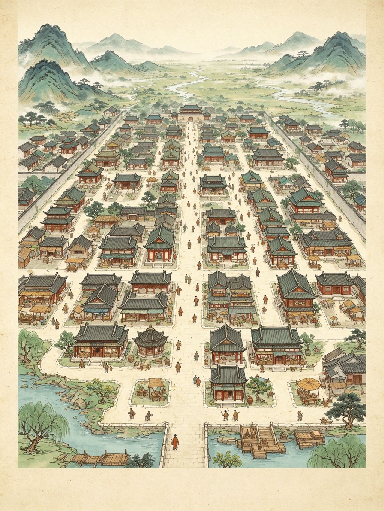

<!DOCTYPE html>
<html lang="zh-CN">
<head>
<meta charset="UTF-8">
<meta name="viewport" content="width=device-width, initial-scale=1.0, maximum-scale=1.0, user-scalable=no, viewport-fit=cover">
<meta name="theme-color" content="#2b2320">
<title>深宫录 · 试玩原型</title>
<style>
:root{
  --bg:#1c1815; --paper:#f3e9d6; --paper2:#e9dcc2; --ink:#2b2320; --ink2:#5b4e42;
  --line:#c8b48e; --gold:#b8913f; --red:#8f2f26; --red2:#b23a2e; --jade:#3f6b5b;
  --blue:#39536e; --muted:#8a7a63; --white:#fffaf0; --shadow:rgba(0,0,0,.35);
}
*{box-sizing:border-box;-webkit-tap-highlight-color:transparent;margin:0;padding:0}
html,body{height:100%}
body{
  font-family:"Songti SC","STSong","SimSun","Noto Serif SC",serif;
  background:radial-gradient(circle at 50% 0%,#3a3029,#1c1815 70%);
  color:var(--ink);display:flex;justify-content:center;
  overflow:hidden;user-select:none;
}
#app{
  width:100%;max-width:460px;height:100dvh;background:var(--paper);
  position:relative;display:flex;flex-direction:column;
  box-shadow:0 0 40px var(--shadow);overflow:hidden;
}
.screen{flex:1;display:flex;flex-direction:column;min-height:0;animation:fade .28s ease}
@keyframes fade{from{opacity:0;transform:translateY(6px)}to{opacity:1;transform:none}}
.scroll{overflow-y:auto;-webkit-overflow-scrolling:touch;flex:1;padding:16px}

/* 通用 */
.title{font-size:26px;letter-spacing:6px;text-align:center;color:var(--red);font-weight:700}
.sub{font-size:12px;color:var(--muted);text-align:center;letter-spacing:2px;margin-top:6px}
.sec-title{font-size:15px;color:var(--red);border-left:3px solid var(--red);padding-left:8px;margin:14px 0 10px;letter-spacing:1px}
.hint{font-size:11px;color:var(--muted);line-height:1.7}
.card{background:var(--white);border:1px solid var(--line);border-radius:8px;padding:14px;margin-bottom:12px;
  box-shadow:0 2px 6px rgba(90,70,40,.08)}
.btn{display:block;width:100%;padding:13px;margin:8px 0;background:var(--paper2);border:1px solid var(--line);
  border-radius:6px;color:var(--ink);font-size:15px;font-family:inherit;letter-spacing:2px;cursor:pointer;transition:.15s}
.btn:active{transform:scale(.98);background:#ddcdae}
.btn.primary{background:linear-gradient(180deg,var(--red2),var(--red));color:#fff;border-color:var(--red);font-weight:700}
.btn.jade{background:linear-gradient(180deg,#4c816e,var(--jade));color:#fff;border-color:var(--jade)}
.btn.blue{background:linear-gradient(180deg,#48688a,var(--blue));color:#fff;border-color:var(--blue)}
.btn.ghost{background:transparent;color:var(--muted);border-style:dashed}
.btn.sm{padding:8px;font-size:13px;margin:4px 0;letter-spacing:1px}
.btn:disabled{opacity:.45;cursor:not-allowed}
.row{display:flex;gap:8px}.row>*{flex:1}
.tag{display:inline-block;font-size:11px;padding:2px 8px;border-radius:20px;background:var(--paper2);color:var(--ink2);border:1px solid var(--line)}
.tag.hot{background:#f6e2dd;color:var(--red);border-color:#e5b9b0}

/* 启动页 */
.splash{flex:1;display:flex;flex-direction:column;align-items:center;justify-content:center;
  background:linear-gradient(180deg,#231d19,#2e251f);padding:30px;text-align:center}
.seal{width:76px;height:76px;border:3px solid var(--gold);color:var(--gold);border-radius:8px;
  display:flex;align-items:center;justify-content:center;font-size:34px;letter-spacing:0;margin-bottom:22px;
  box-shadow:0 0 0 4px #231d19,0 0 0 5px var(--gold);font-weight:700}
.splash h1{color:var(--paper);font-size:44px;letter-spacing:14px;font-weight:700;text-indent:14px}
.splash .en{color:var(--gold);letter-spacing:5px;font-size:11px;margin-top:10px;opacity:.8}
.splash .line{width:200px;height:1px;background:linear-gradient(90deg,transparent,var(--gold),transparent);margin:26px 0}
.splash .btn{max-width:260px;background:transparent;color:var(--paper);border-color:var(--gold);letter-spacing:4px}
.splash .btn:active{background:rgba(184,145,63,.2)}
.splash .foot{position:absolute;bottom:16px;color:#6f6152;font-size:10px;letter-spacing:1px}

/* 路线卡 */
.route-card{position:relative;overflow:hidden;transition:.18s}
.route-card:active{transform:scale(.99)}
.route-card .rtop{display:flex;align-items:center;gap:10px}
.route-card .ricon{width:42px;height:42px;border-radius:50%;display:flex;align-items:center;justify-content:center;
  font-size:17px;color:var(--ink);flex-shrink:0;font-weight:700;border:2px solid var(--gold);background:var(--paper2)}
.route-card h3{font-size:18px;letter-spacing:2px}
.route-card .rline{font-size:11px;color:var(--muted);margin-top:2px}
.route-card ul{list-style:none;margin-top:10px;font-size:12px;color:var(--ink2);line-height:1.9}
.route-card li:before{content:"· ";color:var(--gold);font-weight:700}
.rc-consort .ricon{background:#f6e2dd;border-color:var(--red);color:var(--red)}
.rc-maid .ricon{background:#e3efe8;border-color:var(--jade);color:var(--jade)}
.rc-official .ricon{background:#e2e9f0;border-color:var(--blue);color:var(--blue)}

/* 顶部状态栏 */
.topbar{background:linear-gradient(180deg,#2e2620,#241d18);color:var(--paper);padding:10px 14px;
  display:flex;align-items:center;justify-content:space-between;flex-shrink:0;border-bottom:2px solid var(--gold)}
.tb-date{font-size:13px;letter-spacing:1px}.tb-date b{color:var(--gold);font-size:15px}
.tb-stats{display:flex;gap:10px;font-size:11px;flex-wrap:wrap;justify-content:flex-end;max-width:60%}
.tb-stats span{white-space:nowrap}.tb-stats b{color:#e9c877}
.ap-dots{display:inline-flex;gap:2px;vertical-align:middle;margin-left:3px}
.ap-dots i{width:6px;height:6px;border-radius:50%;background:#5a4e42;display:block}
.ap-dots i.on{background:var(--gold)}
.route-badge{font-size:10px;padding:1px 6px;border-radius:3px;border:1px solid var(--gold);color:var(--gold)}

/* 主界面地图 */
.mainmap{flex:1;overflow-y:auto;padding:14px}
.maphead{text-align:center;margin-bottom:12px}
.maphead .mt{font-size:18px;letter-spacing:4px;color:var(--ink)}
.maphead .md{font-size:11px;color:var(--muted);margin-top:4px}
.grid{display:grid;grid-template-columns:repeat(2,1fr);gap:10px}
.locate{background:var(--white);border:1px solid var(--line);border-radius:8px;padding:12px 10px;text-align:center;
  cursor:pointer;transition:.15s;position:relative;min-height:74px;display:flex;flex-direction:column;justify-content:center}
.locate:active{transform:scale(.96)}
.locate .li{font-size:22px;margin-bottom:2px}
.locate .ln{font-size:14px;letter-spacing:1px}
.locate .ld{font-size:10px;color:var(--muted);margin-top:3px;line-height:1.4}
.locate.locked{filter:grayscale(1);opacity:.5;cursor:not-allowed}
.locate .lk{position:absolute;top:4px;right:6px;font-size:10px;color:var(--red)}
.locate.hotspot{border-color:var(--gold);box-shadow:inset 0 0 0 1px var(--gold)}

/* 底部导航 */
.navbar{display:flex;background:linear-gradient(180deg,#26201b,#1e1915);border-top:2px solid var(--gold);
  flex-shrink:0;padding:6px 2px calc(6px + env(safe-area-inset-bottom))}
.nav{flex:1;text-align:center;color:#9c8d78;cursor:pointer;padding:4px 0;transition:.15s}
.nav:active{transform:scale(.92)}
.nav .ni{font-size:19px;display:block;line-height:1.2}
.nav .nl{font-size:10px;letter-spacing:1px;margin-top:2px;display:block}
.nav.active{color:var(--gold)}
.nav.hidden{display:none}

/* 属性面板 */
.stat-grid{display:grid;grid-template-columns:repeat(2,1fr);gap:8px}
.stat{background:var(--paper2);border-radius:6px;padding:8px 10px;font-size:12px}
.stat .sv{float:right;font-weight:700;color:var(--red)}
.bar{height:5px;background:#d8c8a6;border-radius:3px;margin-top:5px;overflow:hidden}
.bar i{display:block;height:100%;background:linear-gradient(90deg,var(--gold),var(--red));border-radius:3px}
.kv{display:flex;justify-content:space-between;padding:7px 0;border-bottom:1px dashed var(--line);font-size:13px}
.kv:last-child{border:none}.kv b{color:var(--red)}

/* NPC / 好感 */
.npctabs{display:flex;gap:8px;margin-bottom:10px;border-bottom:1px solid var(--line)}
.npctab{flex:1;background:none;border:none;padding:8px 4px;font-size:13px;color:var(--muted);
  border-bottom:2px solid transparent;cursor:pointer;font-family:inherit}
.npctab.on{color:var(--red);border-bottom-color:var(--red);font-weight:700}
.npc{display:flex;align-items:center;gap:10px;padding:9px 0;border-bottom:1px dashed var(--line)}
.npc:last-child{border:none}
.npc .face{width:38px;height:38px;border-radius:50%;background:var(--paper2);border:1px solid var(--line);
  display:flex;align-items:center;justify-content:center;font-size:17px;flex-shrink:0;color:var(--ink2)}
.npc .info{flex:1;min-width:0}
.npc .nn{font-size:13px;font-weight:700}
.npc .nr{font-size:10px;color:var(--muted);margin:1px 0}
.npc .stage{font-size:10px;color:var(--gold)}
.affbar{height:6px;background:#e0d3b6;border-radius:3px;margin-top:4px;overflow:hidden}
.affbar i{display:block;height:100%;background:linear-gradient(90deg,var(--gold),var(--red2))}

/* 弹窗 */
.mask{position:absolute;inset:0;background:rgba(20,15,12,.72);display:flex;align-items:flex-end;z-index:30;
  animation:fade .2s ease}
.dialog{width:100%;max-height:88%;background:var(--paper);border-radius:14px 14px 0 0;overflow:hidden;
  display:flex;flex-direction:column;animation:up .3s cubic-bezier(.2,.8,.2,1)}
@keyframes up{from{transform:translateY(100%)}to{transform:none}}
.dg-head{padding:16px 18px 10px;border-bottom:1px solid var(--line);text-align:center;position:relative;flex-shrink:0}
.dg-head h2{font-size:18px;letter-spacing:3px;color:var(--red)}
.dg-head .x{position:absolute;right:12px;top:12px;font-size:20px;color:var(--muted);cursor:pointer;line-height:1}
.dg-body{padding:16px 18px;overflow-y:auto;flex:1}
.story-text{font-size:14px;line-height:2;color:var(--ink);text-indent:2em;margin-bottom:16px;
  background:var(--white);border:1px solid var(--line);border-radius:6px;padding:14px}
.choices .btn{margin:7px 0}
.result-line{font-size:13px;line-height:1.9;padding:8px 10px;background:var(--white);border-left:3px solid var(--gold);
  border-radius:4px;margin:6px 0}
.delta{color:var(--red);font-weight:700}.delta.neg{color:var(--jade)}

/* 提示 toast */
.toast{position:absolute;top:64px;left:50%;transform:translateX(-50%);background:rgba(35,28,23,.94);
  color:var(--paper);padding:10px 18px;border-radius:24px;font-size:13px;z-index:50;letter-spacing:1px;
  border:1px solid var(--gold);animation:fade .2s;max-width:90%;text-align:center}

/* 存档槽 */
.slot{display:flex;align-items:center;justify-content:space-between;padding:12px;background:var(--white);
  border:1px solid var(--line);border-radius:8px;margin-bottom:9px}
.slot .si{font-size:12px;line-height:1.6}
.slot .si b{font-size:14px;color:var(--ink)}
.slot .empty{color:var(--muted);font-style:italic}
.slot .btn{width:auto;padding:7px 14px;margin:0;font-size:12px}

.empty-tip{text-align:center;color:var(--muted);font-size:12px;padding:30px 10px;line-height:2}
/* 皇帝画像卡：头像固定 3:4 比例，与性情标签并排 */
.emp-portrait-card{display:flex;align-items:center;gap:14px;text-align:left}
.emp-portrait{width:96px;height:128px;object-fit:cover;object-position:top center;flex-shrink:0;
  border-radius:8px;border:2px solid var(--gold);background:var(--paper2)}
/* 太后头像：方形圆形构图，裁为圆形展示 */
.emp-portrait.round{width:96px;height:96px;border-radius:50%;object-fit:cover;object-position:center}
.emp-tag{display:inline-block;margin-top:5px;font-size:10px;padding:2px 8px;border-radius:10px;
  background:var(--red);color:#fff}
.foot-note{text-align:center;font-size:10px;color:var(--muted);padding:10px;line-height:1.8}
.year-end{background:linear-gradient(180deg,#f6ead0,#ecd9b4);border:2px solid var(--gold);border-radius:10px;
  padding:18px;text-align:center;margin:10px 0}
.year-end h3{color:var(--red);letter-spacing:4px;font-size:20px;margin-bottom:10px}
/* 结算明细 */
.delta-list{display:flex;flex-wrap:wrap;gap:6px;padding:10px}
.delta-chip{display:inline-block;font-size:12px;padding:5px 11px;border-radius:14px;border:1px solid var(--line);background:var(--paper2);white-space:nowrap}
.delta-chip.up{color:var(--red);border-color:#e0b3aa;background:#f9ece8}
.delta-chip.down{color:var(--jade);border-color:#a9c6b8;background:#eaf3ee}
.delta-chip.aff{color:#6a4a8a;border-color:#c4add9;background:#f2eaf8}
.delta-chip.attr{color:#8a6a1a;border-color:#d9c48a;background:#f8f2e0}
/* 攻略 */
.guide-row{display:flex;align-items:center;gap:8px;padding:8px;border-bottom:1px dashed var(--line);font-size:12px}
.guide-row .gi{width:26px;height:26px;border-radius:50%;background:var(--paper2);display:flex;align-items:center;justify-content:center;flex-shrink:0;font-size:11px}
.guide-row.done .gi{background:var(--jade);color:#fff}
.guide-row.now{background:#f6ead0;border-left:3px solid var(--red)}
.guide-row.now .gi{background:var(--red);color:#fff}
.guide-row.ready .gi{background:var(--gold);color:#fff}
.guide-row .gn{flex:1;min-width:0}
.guide-row .gn b{font-size:13px}
.guide-row .gc{font-size:11px;color:var(--muted);margin-top:2px;line-height:1.5}
.guide-row .gs{font-size:11px;white-space:nowrap;text-align:right}
.guide-row.done .gs{color:var(--jade)}
.guide-row.now .gs{color:var(--red);font-weight:700}
.guide-row.ready .gs{color:var(--gold)}
/* 商店 / 侍从 / NPC操作 */
.shop-item,.servant{display:flex;justify-content:space-between;align-items:center;padding:9px 10px;background:var(--white);border:1px solid var(--line);border-radius:6px;margin-bottom:7px;font-size:12px;gap:8px}
.npc-actions{display:flex;gap:4px;flex-shrink:0}
.npc-actions .btn{padding:4px 8px;font-size:11px;width:auto;margin:0}
.sec-badge{display:inline-block;font-size:10px;padding:1px 7px;border-radius:10px;background:var(--gold);color:#fff;margin-left:6px}
/* 皇宫舆图：底图 + 热区 */
.map-canvas{position:relative;width:100%;aspect-ratio:1000/1333;border:1px solid var(--line);
  border-radius:8px;overflow:hidden;box-shadow:0 2px 8px rgba(0,0,0,.18);background:var(--paper2)}
.map-canvas img{display:block;width:100%;height:100%;object-fit:cover}
.map-pin{position:absolute;transform:translate(-50%,-50%);display:flex;flex-direction:column;align-items:center;
  gap:2px;padding:2px;border:0;background:none;cursor:pointer;z-index:2;width:auto}
.pin-ico{width:26px;height:26px;border-radius:50%;display:flex;align-items:center;justify-content:center;
  font-size:14px;background:rgba(255,250,240,.94);border:2px solid var(--red);
  box-shadow:0 2px 5px rgba(0,0,0,.35)}
.pin-name{font-size:10px;line-height:1.2;padding:1px 5px;border-radius:8px;white-space:nowrap;
  background:rgba(43,35,32,.82);color:var(--white);letter-spacing:1px}
.map-pin.locked .pin-ico{background:rgba(220,210,190,.85);border-color:var(--muted);filter:grayscale(.6)}
.map-pin.locked .pin-name{background:rgba(90,80,70,.6);color:#e6ded0}
.map-pin:active .pin-ico{transform:scale(.9)}
/* 手动跨月按钮 + 行动力耗尽禁用态 */
.btn.next-month{width:100%;margin-top:14px;padding:12px;font-size:15px;letter-spacing:2px;font-weight:700;
  background:linear-gradient(135deg,#8e6b1f,#c9a227);color:#fff8e8;border:1px solid #7a5a18;
  box-shadow:0 2px 8px rgba(140,105,30,.35)}
.btn.next-month.urgent{animation:nmPulse 1.3s ease-in-out infinite}
@keyframes nmPulse{0%,100%{box-shadow:0 0 4px rgba(190,60,50,.5)}50%{box-shadow:0 0 14px rgba(190,60,50,.95)}}
.btn:disabled{opacity:.4;filter:grayscale(.7);cursor:not-allowed}
/* 子嗣 */
.kid-card{padding:10px 12px}
.kid-top{display:flex;gap:10px;align-items:center}
.kid-avatar{width:40px;height:40px;flex:0 0 40px;border-radius:50%;background:var(--paper2);
  display:flex;align-items:center;justify-content:center;font-size:22px;border:1px solid var(--line)}
.kid-meta{flex:1;font-size:13px;color:var(--ink)}
.kid-meta .hint{margin-top:2px}
.kid-acts{display:flex;gap:6px;flex-wrap:wrap;margin-top:9px}
.kid-acts .btn{flex:1;min-width:88px}
/* 寝宫 */
.pal-tier{display:flex;justify-content:space-between;align-items:center;font-size:11px;color:var(--muted);margin-bottom:8px}
.pal-tier b{color:var(--red)}
.pal-banner{width:100%;border:1px solid var(--line);border-radius:8px;overflow:hidden;margin-bottom:10px;line-height:0;position:relative}
.pal-banner img{width:100%;display:block}
.pal-banner.imgerr{min-height:120px;background:var(--paper2)}
.pal-banner.imgerr:after{content:'⚠ 寝宫图未加载 · 请确认 palace_*.jpg 已上传';position:absolute;inset:0;display:flex;align-items:center;justify-content:center;color:#a00;font-size:12px;line-height:1.6;text-align:center;padding:10px}
.pal-item{display:flex;align-items:center;gap:10px;padding:9px 10px;border:1px solid var(--line);border-radius:8px;margin-bottom:7px;background:var(--paper2)}
.pal-ico{width:36px;height:36px;flex:0 0 36px;border-radius:8px;background:var(--paper);display:flex;align-items:center;justify-content:center;font-size:19px}
.pal-info{flex:1;min-width:0}
.pal-nm{font-size:13px;font-weight:700;color:var(--ink)}
.pal-ds{font-size:11px;color:var(--muted);margin-top:2px;line-height:1.4}
 .pal-new{display:inline-block;font-size:9px;padding:1px 6px;border-radius:8px;background:var(--red);color:#fff;margin-left:6px;vertical-align:middle}
.pal-item .btn{width:auto;flex:0 0 auto;margin:0;padding:7px 14px;font-size:12px}
/* 寝宫底图热区 */
.pal-canvas{position:relative;width:100%;aspect-ratio:900/1200;border:1px solid var(--line);
  border-radius:8px;overflow:hidden;box-shadow:0 2px 8px rgba(0,0,0,.18);background:var(--paper2)}
.pal-canvas img{display:block;width:100%;height:100%;object-fit:cover}
.pal-canvas.imgerr{min-height:160px}
.pal-canvas.imgerr:after{content:'⚠ 寝宫图未加载 · 请确认 palace_*.jpg 已上传';position:absolute;inset:0;
  display:flex;align-items:center;justify-content:center;color:#a00;font-size:12px;line-height:1.6;text-align:center;padding:10px}
.pal-pin{position:absolute;transform:translate(-50%,-50%);display:flex;flex-direction:column;align-items:center;
  gap:2px;padding:2px;border:0;background:none;cursor:pointer;z-index:2;width:auto}
.pp-ico{width:26px;height:26px;border-radius:50%;display:flex;align-items:center;justify-content:center;
  font-size:14px;background:rgba(255,250,240,.95);border:2px solid var(--red);box-shadow:0 2px 5px rgba(0,0,0,.35)}
.pp-name{font-size:10px;line-height:1.2;padding:1px 5px;border-radius:8px;white-space:nowrap;
  background:rgba(43,35,32,.85);color:var(--white);letter-spacing:.5px;position:relative}
.pp-name i{font-style:normal;font-size:9px;color:#fff;background:var(--red);border-radius:6px;padding:0 4px;margin-left:3px}
.pal-pin.pin-off .pp-ico{background:rgba(220,210,190,.85);border-color:var(--muted);filter:grayscale(.6)}
.pal-pin.pin-off{opacity:.72}
.pal-legend{display:flex;gap:16px;justify-content:center;font-size:10px;color:var(--muted);margin-top:8px}
.pal-legend span{display:inline-flex;align-items:center;gap:4px}
.pal-legend i{width:9px;height:9px;border-radius:50%;display:inline-block}
.lg-new{background:var(--red)}.lg-base{background:rgba(43,35,32,.6)}
/* 结局 */
.ending-wrap{padding:30px 20px;text-align:center}
.ending-seal{width:62px;height:62px;line-height:56px;margin:6px auto 18px;border:3px solid var(--red);
  color:var(--red);font-size:32px;border-radius:8px;transform:rotate(-6deg)}
.ending-title{font-size:25px;letter-spacing:8px;color:var(--red);font-weight:700}
.ending-sub{font-size:12px;color:var(--muted);letter-spacing:3px;margin-top:8px}
.ending-wrap .story-text{text-align:left}
.ending-wrap .card{text-align:left}
</style>
</head>
<body>
<div id="app"></div>

<script>
"use strict";
/* ==================================================================
   《深宫录》H5 试玩原型 —— 单文件自包含
   配置数值全部对齐逻辑层 GameConfig；纯本地 localStorage 存档
   ================================================================== */

/* ---------- 1. 配置表（对齐 config/*.ts） ---------- */
const CFG = {
  startAge:{min:14,max:16},
  actionMax:5, monthsPerYear:12, annualSilverBonus:30,
  nameMin:2, nameMax:8,
  sensitive:['皇帝','皇上','皇后','太子','太后','死','杀','妓','淫','妖','admin','管理员','系统'],
  family:['COMMONER','LOW_OFFICIAL','SCHOLAR','OFFICIAL','NOBLE'],
  familyInfo:{
    COMMONER:{name:'布衣寒门',w:42,silver:30,titles:[['白身','布衣寒士'],['白身','乡间商户']],kin:['嫡女','庶女','养女'],
      r:{appearance:[10,30],talent:[10,30],wit:[20,40],social:[0,15],constitution:[25,45],fertility:[30,58]}},
    LOW_OFFICIAL:{name:'小吏之家',w:28,silver:60,titles:[['九品','县衙主簿'],['八品','县衙县丞']],kin:['嫡女','庶女','侄女'],
      r:{appearance:[20,40],talent:[20,40],wit:[25,45],social:[15,30],constitution:[25,45],fertility:[35,63]}},
    SCHOLAR:{name:'书香门第',w:17,silver:80,titles:[['七品','翰林编修'],['六品','国子监助教']],kin:['嫡女','庶女','侄女'],
      r:{appearance:[25,45],talent:[35,60],wit:[30,50],social:[20,35],constitution:[20,40],fertility:[32,60]}},
    OFFICIAL:{name:'官宦世家',w:9,silver:120,titles:[['四品','六部郎中'],['五品','州府知州']],kin:['嫡女','庶女','侄女'],
      r:{appearance:[35,55],talent:[30,50],wit:[35,55],social:[35,60],constitution:[25,45],fertility:[42,70]}},
    NOBLE:{name:'世家望族',w:4,silver:180,titles:[['一品','当朝丞相'],['二品','内阁大学士']],kin:['嫡女','庶女','侄女'],
      r:{appearance:[45,65],talent:[40,60],wit:[40,60],social:[50,75],constitution:[30,50],fertility:[48,75]}},
  },
  attrName:{appearance:'容貌',talent:'才情',wit:'心智',social:'人脉',constitution:'体质',fertility:'孕率'},
  routes:{
    CONSORT:{name:'秀女开局',icon:'花',color:'red',tag:'争宠晋位 · 母凭子贵',
      intro:'选秀入宫，依家世授官女子至贵人之位，于深宫步步为营。',
      growth:'后宫争宠线：帝宠 + 威望双轨晋升，由入宫位份一路晋至皇后。',
      features:['与嫔妃博弈：交好、拉拢、反击、刺探把柄','侍寝承宠积累帝宠，帝宠减免晋升威望门槛','贵人及以上可诞育子嗣，教养成人封爵光耀门楣'],
      unlock:'解锁妃嫔博弈、皇帝互动、子嗣生育系统'},
    MAID:{name:'宫女开局',icon:'帚',color:'jade',tag:'【可被宠幸转妃嫔】',
      intro:'入宫为奴，供职六局，于夹缝中谋求出路。',
      growth:'六局当差线：勤谨值晋升，粗使宫女→掌事姑姑。',
      features:['六局当差积攒勤谨，分支抉择定终身','御花园偶遇皇帝，容貌与家世兼备者可破格进封','掌事姑姑二选一：承宠入妃嫔 / 考选转女官，资产继承不断档'],
      unlock:'解锁宫女差事系统；转线后继承全部资产'},
    OFFICIAL:{name:'女官开局',icon:'笔',color:'blue',tag:'【可邂逅朝臣、自主婚配】',
      intro:'以才入仕，供职六局，凭功勋声望立身于朝。',
      growth:'女官事业线：功勋 + 声望晋升，女史→尚宫。',
      features:['六局公务积累功勋声望，典事起参与朝堂','四大点位邂逅文武朝臣，六阶段好感培养','好感满值触发求娶/赐婚，奉旨自主婚配，夫君助力职场'],
      unlock:'解锁女官公务 + 朝臣婚恋系统（职级到典事后开放）'},
  },
  bureaus:[['SHANG_GONG','尚宫局','总领六局事务，掌诏敕文书'],['SHANG_YI','尚仪局','掌礼仪起居、朝会赞导'],
    ['SHANG_FU','尚服局','掌服饰冠佩、宝物库藏'],['SHANG_SHI','尚食局','掌御膳菜品，可近圣驾'],
    ['SHANG_QIN','尚寝局','掌寝殿陈设、园苑清扫'],['SHANG_GONG_WORK','尚功局','掌女红织造、考核百工'],
    ['HUAN_YI','浣衣局','浆洗衣物、粗重杂役']],
  ranks:{
    CONSORT:[['GUAN_NV_ZI','官女子',0,0],['DA_YING','答应',15,20],['CHANG_ZAI','常在',35,35],['GUI_REN','贵人',60,50],
      ['PIN','嫔',100,70],['FEI','妃',160,85],['GUI_FEI','贵妃',240,92],['HUANG_GUI_FEI','皇贵妃',320,96],['HUANG_HOU','皇后',400,99]],
    MAID:[['CU_SHI','粗使宫女',0],['PU_TONG','普通宫女',40],['GUAN_SHI','管事宫女',90],['ZHANG_SHI','掌事姑姑',160]],
    OFFICIAL:[['NV_SHI','女史',0,0],['ZHANG_SHI','掌事',60,20],['DIAN_SHI','典事',120,35],['SI_ZUO','司佐',200,50],
      ['SI_SHI','司事',300,70],['SI_ZHENG','司正',420,90],['JU_CHENG','局丞',560,110],['JU_ZUO','局佐',720,130],
      ['SHANG_SHU','尚属',900,150],['SHANG_GONG','尚宫',1200,180]],
  },
  salary:{CONSORT:[20,35,50,80,120,180,260,350,500],MAID:[15,22,32,45],OFFICIAL:[40,55,70,90,115,140,170,200,240,300]},
  // 女官赐爵：功勋/声望/圣眷(帝宠)达标，养心殿奏对时请封，逐级晋升
  nobleRanks:[
    {name:'县君',merit:80,rep:40,favor:10},
    {name:'乡君',merit:160,rep:80,favor:22},
    {name:'郡君',merit:280,rep:140,favor:38},
    {name:'县主',merit:450,rep:220,favor:58},
    {name:'郡主',merit:680,rep:320,favor:80},
  ],
  // 秀女入宫位份：家世定基础，嫡女可高一级；范围官女子～贵人
  startRank:{
    COMMONER:{base:'GUAN_NV_ZI'},
    LOW_OFFICIAL:{base:'GUAN_NV_ZI',elite:'DA_YING'},
    SCHOLAR:{base:'DA_YING',elite:'CHANG_ZAI'},
    OFFICIAL:{base:'CHANG_ZAI',elite:'GUI_REN'},
    NOBLE:{base:'GUI_REN'},
  },
  stages:[[96,'相许'],[81,'情深'],[61,'倾心'],[41,'欣赏'],[21,'初识'],[0,'陌生']],
  favorStage:[[91,'独宠'],[71,'盛宠'],[51,'偏爱'],[31,'青睐'],[11,'平淡'],[0,'陌生']],
  // 朝臣18名
  ministers:[
    ['min_c9','沈文清','文','九品','县衙主簿'],['min_c8','陆知微','文','八品','县衙县丞'],['min_c7','苏御史','文','七品','监察御史'],
    ['min_c6','范通判','文','六品','州府通判'],['min_c5','欧阳修撰','文','五品','州府知州'],['min_c4','李侍郎','文','四品','六部侍郎'],
    ['min_c3','张尚书','文','三品','六部尚书'],['min_c2','徐阁老','文','二品','内阁大学士'],['min_c1','当朝丞相','文','一品','当朝丞相'],
    ['min_m9','赵巡尉','武','九品','巡检巡尉'],['min_m8','钱校尉','武','八品','禁军校尉'],['min_m7','孙守备','武','七品','边关守备'],
    ['min_m6','周参将','武','六品','军营参将'],['min_m5','吴游击','武','五品','游击将军'],['min_m4','郑副将','武','四品','副将'],
    ['min_m3','冯总兵','武','三品','镇守总兵'],['min_m2','楚大都督','武','二品','大都督'],['min_m1','护国大将军','武','一品','护国大将军'],
  ],
  // 嫔妃NPC 8名
  consorts:[
    ['cnp_dowager','章太后','太后','慈和宽厚、尊荣无双'],
    ['cnp_empress','慕容婉','皇后','端肃持重、城府深沉'],['cnp_guifei','萧云艳','贵妃','骄矜泼辣、恃宠而骄'],
    ['cnp_fei','沈含嫣','宠妃','柔婉善妒、外柔内狠'],['cnp_pin','董良人','庶妃','沉默寡言、明哲保身'],
    ['cnp_zai','安常在','低位嫔妃','胆小怕事、心思单纯'],['cnp_ying','赵飞燕','丽妃','张扬妩媚、争强好胜'],
    ['cnp_de','柳氏','德妃','温良恭俭、与世无争'],['cnp_ning','冷如月','宁嫔','清冷孤傲、不屑逢迎'],
  ],
  // 地点13个
  // [id,名称,图标,说明,开放路线,热点解锁,x%,y%] —— 竖版底图坐标
  locations:[
    ['yuHuaYuan','御花园','🌸','偶遇皇帝/嫔妃/低阶朝臣，宠幸剧情点','ALL',1,27,58],
    ['yangXinDian','养心殿','🏯','求见皇帝、递交折子、偶遇近臣','CONSORT_OFFICIAL',0,50,13],
    ['gongDian','各宫宫殿','🏮','拜访嫔妃 NPC','CONSORT_OFFICIAL',0,50,22],
    ['jingRenGong','景仁宫','👑','皇后居所 · 每月请安增长威望','CONSORT',0,50,32],
    ['liuJuZhiFang','六局值房','📜','女官办公、宫女当差','MAID_OFFICIAL',0,77,66],
    ['huanYiJu','浣衣局','🧺','底层差事','MAID',0,80,77],
    ['chuXiuGong','储秀宫','🪞','后宫女子居所 · 结交宫嫔','CONSORT_OFFICIAL',0,42,67],
    ['ciNingGong','慈宁宫','🕯️','太后居所 · 请安互动增长属性','ALL',0,27,30],
    ['lengGong','冷宫','🌑','特殊剧情','CONSORT',0,88,84],
    ['taiYiYuan','太医院','🌿','调养体质、购药','ALL',0,76,55],
    ['neiWuFu','内务府','🏛️','采买赠礼与毒药 · 贿赂公公刷好货','ALL',0,15,73],
    ['gongMen','宫门','🚪','出宫通道 · 女官典事以上可邂逅朝臣','MAID_OFFICIAL',1,50,91],
    ['hanLinYuan','翰林院','📖','文官专属邂逅点','OFFICIAL',1,80,38],
    ['yanWuChang','演武场','⚔️','武官专属邂逅点','OFFICIAL',1,82,47],
    ['shangShuFang','上书房','📚','皇子公主读书之所 · 满六岁皇嗣可入学','ALL',0,20,46],
    ['selfRoom','居所','🛏️','休息、整理','ALL',0,58,67],
  ],
  // 出宫令牌：宫女出宫凭证，宫门/内务府可购；有效期三个月（仅宫女）
  pass:{cost:30,months:3,catchProb:0.35,caneCon:-14,canePrestige:-8},
  // 地图互动选项失败率：正向收益选项有概率失败，改为扣除相关属性
  eventFail:{prob:0.16,penaltyRatio:0.5},
  // 年龄衰减：主控年龄阈值与每月体质流失
  ageDecay:{warn:35,severe:45,warnLoss:[1,2],severeLoss:[3,5]},
  // 妃嫔晋升「姿才」门槛：容貌+才情需达此值方可晋升（按目标位份索引）
  looksReq:{DA_YING:30,CHANG_ZAI:45,GUI_REN:60,PIN:80,FEI:100,GUI_FEI:120,HUANG_GUI_FEI:140,HUANG_HOU:160},
  // 心智陷害：心智低于阈值时每月有概率被嫔妃陷害
  frame:{witBelow:50,prob:0.30,prestige:-8,constitution:-5,favor:-4,npcFavor:-10},
  // 后宫顶层席位：皇后、皇贵妃各限一位。初始皇后由NPC占用、皇贵妃空缺
  harem:{empress:'cnp_empress',huangGuifei:null,deposeProb:0.06},
  // 动态后宫嫔妃：开局随机5~8位，名字古风文雅（≤4字、不与皇帝同姓），位份随机（不一定有皇后）
  haremNpc:{
    countMin:5,countMax:8,
    surs:['沈','谢','崔','卢','苏','杜','柳','董','赵','冷','安','年','温','阮','孟','殷','姜','傅','钟','卫','上官','慕容','欧阳','独孤','南宫','夏侯','诸葛','司马'],
    given:['婉','仪','瑶','华','容','娴','静','姝','嫣','宁','宜','歆','蘅','芷','筠','纾','璎','珞','菁','蕙','芸','菱','湘','莲','蓉','娥','娟','婷','婧','旖','绛','珑','玲','瑟','琬','琰','清','沅','洛','晚','霜','雪','凝','知','云','月','春','锦','绮','绣','嫣','娆','媚','妩'],
    descs:['温婉端静、知书达理','骄矜明艳、恃宠而骄','柔婉善妒、外柔内狠','沉默寡言、明哲保身','胆小怕事、心思单纯','张扬妩媚、争强好胜','温良恭俭、与世无争','清冷孤傲、不屑逢迎','机敏善谋、八面玲珑','娇憨直率、心口如一'],
    rankPool:['CHANG_ZAI','CHANG_ZAI','DA_YING','GUI_REN','GUI_REN','PIN','FEI'], // 开局位份候选（无皇后；皇后概率另判）
    empressProb:0.35,          // 开局出现皇后概率
    ageMin:16,ageMax:30,
    conMin:55,conMax:88,
  },
  // 选秀：每3年一次，1~2位新人入宫（位份贵人及以下）
  selection:{everyYears:3,min:1,max:2,ranks:['GUAN_NV_ZI','DA_YING','CHANG_ZAI','GUI_REN']},
  // 其他嫔妃自主晋位：每6个月随机选2位，晋一级
  npcPromote:{everyMonths:6,count:2},
  // 其他嫔妃自然死亡概率（每月每人）
  npcDeathProb:0.012,
  // 太后（慈宁宫）：初始年龄40-60，驾崩年龄≤70；好感≥80可下懿旨破格晋升
  dowager:{ageMin:40,ageMax:60,deathMax:70,favorNeed:80,edictProb:0.30},
  // 皇帝寿限：驾崩年龄≤80
  emperorLife:{deathMin:62,deathMax:80},
  // 求立储君：皇嗣需满10岁；成功率随位份提升
  heir:{minAge:10,baseProb:0.20,perRank:0.055,maxProb:0.92},
  // 宫外大地图地点：[id,名称,图标,说明,x%,y%,功能类型]
  // 坐标对应竖版「宫外地图.png」(1024x1365)，与皇宫舆图同比例
  outsideLocs:[
    ['qianZhuang','钱庄','💰','存取银两、存放银票，规避抄家损失，月月生息','bank',22,20],
    ['jiShi','集市商铺','🏬','选购首饰、香料、点心、珍玩，用来送礼','market',52,16],
    ['yaoPu','药铺','🌿','疗伤解毒、采购药材，亦可求高风险秘药','herb',78,20],
    ['siDi','私邸','🏠','回府休整、召见心腹、整理密信、安置人手、后宅夫君','mansion',72,34],
    ['naoShi','街头闹市','🎪','闲逛偶遇各色人物，突发事件','street',30,36],
    ['shanLin','城郊山林','🌲','奇遇、采草药，或撞见秘事、遭遇野兽','forest',12,50],
    ['guSi','古寺','⛩️','上香祈福、求签减恶意，匿名传信','temple',88,48],
    ['chaSi','临河茶肆','🍵','打探朝堂消息、约见线人、偷听秘闻','tea',28,62],
    ['yiGuan','驿馆','🏨','接待来客、托人送信、等候信使、打探外地世家','inn',74,62],
    ['xiaoJinLou','销金楼','🏮','收买歌妓探秘事，易沾丑闻名声受损','brothel',50,84],
  ],
  // 女官私邸解锁职级：司佐
  mansionRank:'SI_ZUO',
  // 寝宫交互点位：每档仅存「本档新增」点位，高位运行时继承低位全部，仅标新增
  // 点位结构：[点位名称, 图标, 功能说明, 效果对象, 偶遇概率(可选)]
  palaces:{
    LOW:{name:'低阶嫔妃寝宫',img:'palace_low.jpg',ranks:['GUAN_NV_ZI','DA_YING','CHANG_ZAI'],
      points:[
        ['主寝殿','🛏️','休息梳妆，恢复精力',{constitution:3,appearance:2}],
        ['侍女偏房','🧹','吩咐侍女执行差事',{diligence:4,silver:2}],
        ['小院庭','🌿','院内散步，有概率偶遇低位宫人',{social:2},0.35],
        ['妆台','💄','对镜梳妆、调养肌肤，渐增容貌',{appearance:4}],
        ['书案','🖋️','临帖读书、习字作赋，渐增才情',{talent:4}],
      ],pos:{'主寝殿':[50,37],'侍女偏房':[17,46],'小院庭':[48,58],'妆台':[84,20],'书案':[16,20]}},
    MID:{name:'中阶嫔妃寝宫',img:'palace_mid.jpg',ranks:['GUI_REN','PIN'],
      points:[
        ['书房','📖','写信、整理手记、查阅信息',{talent:3,wit:2}],
        ['茶轩','🍵','约见交好之人私下谈话',{social:4}],
        ['耳房库房','📦','存放礼物、香料、私人物品',{silver:2}],
        ['小花园','🌸','散心赏花，低概率偶遇宫中贵人',{appearance:2,prestige:1},0.25],
      ],pos:{'主寝殿':[52,33],'侍女偏房':[88,44],'小院庭':[47,47],'书房':[15,33],'茶轩':[37,53],'耳房库房':[88,61],'小花园':[48,73],'妆台':[84,18],'书案':[16,18]}},
    HIGH:{name:'高阶嫔妃寝宫',img:'palace_high.jpg',ranks:['FEI','GUI_FEI','HUANG_GUI_FEI'],
      points:[
        ['临水榭','💧','临水密谈，不容易被旁人偷听',{wit:3,social:3}],
        ['东西偏房','🏠','安置心腹嬷嬷、贴身侍女',{diligence:3}],
        ['假山池苑','🪨','游园闲逛，可触发随机偶遇事件',{prestige:2,constitution:1},0.4],
        ['静心静室','🧘','独自静坐，平复负面心绪',{constitution:4}],
      ],pos:{'主寝殿':[52,31],'侍女偏房':[88,36],'小院庭':[48,46],'书房':[20,28],'茶轩':[52,52],'耳房库房':[88,54],'小花园':[25,73],'临水榭':[22,62],'东西偏房':[12,42],'假山池苑':[76,69],'静心静室':[50,18],'妆台':[84,16],'书案':[16,16]}},
    EMPRESS:{name:'皇后寝宫',img:'palace_empress.jpg',ranks:['HUANG_HOU'],
      points:[
        ['中宫正殿','👑','接受嫔妃请安、接待命妇、处置后宫事务',{prestige:5}],
        ['御书房','📜','查阅宫人簿册、阅览文书、书写后宫手谕',{wit:4,talent:2}],
        ['佛堂','🕯️','礼佛上香，为皇家祈福',{prestige:3,constitution:2}],
        ['临水阁','🔭','高处观景密谈，视野好便于警戒',{social:4,wit:2}],
        ['秘库','🔐','存放贡品、印信、重要密函',{silver:15}],
        ['候见厅','🪑','接待外府传话妇人，等候通报访客',{social:3}],
      ],pos:{'主寝殿':[50,47],'侍女偏房':[16,40],'小院庭':[50,58],'书房':[16,22],'茶轩':[84,40],'耳房库房':[84,52],'小花园':[50,66],'临水榭':[25,69],'东西偏房':[16,51],'假山池苑':[75,69],'静心静室':[84,22],'中宫正殿':[50,37],'御书房':[50,20],'佛堂':[50,10],'临水阁':[50,29],'秘库':[84,61],'候见厅':[38,80],'妆台':[88,16],'书案':[12,16]}},
  },
  // 好感互动增量
  interact:{GIFT:8,POEM:10,ASSIST:12,COURT:6,GREET:3,HEART:9},
  // 皇帝（养心殿面圣页）
  emperor:{name:'玄烨',title:'当今圣上',age:38,personality:'深沉难测、喜怒不形于色',
    hobby:['诗书','丹青','驯马'],healthMax:100,
    // 皇室姓氏库（单姓+复姓共15）与帝王名字单字库（50字），随机生成帝名、皇嗣冠姓
    surnames:['萧','楚','凌','裴','沈','晏','祁','姬','宁','顾','慕容','拓跋','南宫','轩辕','夏侯'],
    nameChars:['珩','宸','渊','昭','聿','瑾','晟','崇','祯','稷','垣','策','峻','钧','霖','昱','琮','恺','嵩','徽','惇','朔','桢','肃','曜','谟','澂','雍','珣','珵','邺','钺','叙','崚','铠','昉','瑜','鼎','乾','泰','骁','柏','琛','巩','劭','钦','纬','敖','桢','沄'],
    greeting:'朕日理万机，你有何事面奏？',
    // 五种性情 + 对应头像文件名（改文件名只需改这里的 avatar）
    personas:[
      {key:'cold',name:'冷漠',personality:'冷若冰霜、寡言少怒',avatar:'冷漠帝.jpg',mood:40},
      {key:'gentle',name:'温柔',personality:'温润宽和、体恤下情',avatar:'温柔帝.jpg',mood:75},
      {key:'domineer',name:'霸道',personality:'乾纲独断、说一不二',avatar:'霸道帝.jpg',mood:55},
      {key:'scheming',name:'腹黑',personality:'城府深沉、笑里藏刀',avatar:'腹黑帝.jpg',mood:50},
      {key:'playboy',name:'风流',personality:'风流倜傥、多情善感',avatar:'风流帝.jpg',mood:70},
    ]},
  // 内务府：贿赂公公 + 每月轮换货物
  nwu:{bribeCost:30,stockSize:6,
    goods:[
      ['gift_rouge','胭脂盒',15,'gift',8,'赠礼·好感+8'],
      ['gift_tea','贡茶',25,'gift',12,'赠礼·好感+12'],
      ['gift_jade','玉佩',40,'gift',18,'赠礼·好感+18'],
      ['gift_ink','御制墨锭',55,'gift',24,'赠礼·好感+24'],
      ['tonic','养颜丸',20,'attr','appearance:3','服用·容貌+3'],
      ['book','古籍',30,'attr','talent:3','研读·才情+3'],
      ['poison_deadly','鹤顶红',180,'poison',0,'致命剧毒·可致目标毙命'],
      ['poison_strong','断肠散',60,'poison',0,'剧毒·目标重病'],
      ['poison_soft','蒙汗药',35,'poison',0,'轻毒·目标虚弱'],
    ],
    // 下毒机制：需选宫人执行，成功/败露由宫人才干与忠心决定
    poison:{
      // 成功率 = 基础 + 才干权重；败露率 = 基础 - 忠心权重（下限保护）
      successBase:0.30,successPerAbility:0.006,   // 才干20→42%，才干90→84%
      exposeBase:0.55,exposePerLoyalty:0.005,     // 忠心70→20%，忠心20→45%
      lowLoyalty:40,lowAbility:35,                // 低于阈值触发供出/失手
      // 败露严重程度→惩罚：供出(忠心低)/失手(才干低)/普通
      betray:{silver:0.5,demote:1,cold:2},        // 供出主控：罚半俸+降位+冷宫2月
      botch:{silver:0.3,demote:1,cold:1},         // 才干低失手：罚三成+降位+冷宫1月
      plain:{silver:0.3,prestige:-12,reputation:-8}, // 普通败露：罚三成+威望声望
      deathProb:0.25,                             // 供出且极端时赐死概率
    },
    // 贿赂后优先出现的稀有货
    rare:['gift_ink','gift_jade','poison_strong'],
  },
  servantTpl:{
    CONSORT:[['sc1','阿桃','贴身侍女，温柔细心'],['sc2','绿筠','针线宫女，手巧心细']],
    MAID:[['sm1','小荷','同屋宫女，机灵乖巧'],['sm2','素云','浣衣姐妹，任劳任怨']],
    OFFICIAL:[['so1','青竹','文书侍女，识文断字'],['so2','墨香','掌卷侍女，沉稳干练']],
  },
  // 内务府可挑选宫人：[id, 姓名, 性别, 描述, 雇佣价, 初始忠心, 初始才干]
  staffPool:[
    ['st_fuan','福安','男','贴身太监·机敏乖觉，善察言观色',45,72,26],
    ['st_quanzi','小全子','男','粗使太监·腿脚勤快，任劳任怨',25,68,16],
    ['st_lide','李德全','男','掌事太监·老成持重，熟悉宫规',60,80,32],
    ['st_wangshun','王顺','男','护院太监·身强力壮，可护主',55,76,28],
    ['st_tianxi','添喜','男','传膳太监·口齿伶俐，善于奔走',35,68,20],
    ['st_cuier','翠儿','女','针线宫女·手巧心细，善女红',35,70,22],
    ['st_qiuling','秋菱','女','洒扫宫女·勤勉踏实，力气过人',25,66,15],
    ['st_yuxiang','玉香','女','熏香宫女·熟悉香料，擅调制香露',50,74,28],
    ['st_aying','阿英','女','茶水宫女·泡得一手好茶，知礼数',40,72,24],
    ['st_xiaohe','小鹤','女','文书宫女·识文断字，能誊抄',50,70,30],
    ['st_suyun','素云','女','浣衣宫女·吃苦耐劳，忠诚可靠',30,70,18],
    ['st_zhiqin','知琴','女','侍琴宫女·通音律，善抚琴',55,73,30],
  ],
  // 各路线宫人容量：妃嫔按位份分档，其余按职级递增
  staffCapByTier:{LOW:2,MID:5,HIGH:8,EMPRESS:10},
  shop:[
    ['gift_rouge','胭脂盒',15,'gift',8,'送礼·好感+8'],
    ['gift_tea','贡茶',25,'gift',12,'送礼·好感+12'],
    ['gift_jade','玉佩',40,'gift',18,'送礼·好感+18'],
    ['tonic','养颜丸',20,'attr','appearance:3','服用·容貌+3'],
    ['book','古籍',30,'attr','talent:3','研读·才情+3'],
  ],
  guideNote:{
    CONSORT:'帝宠可减免威望晋升门槛（至少保留三成）。养心殿可面圣，位份越高越易觐见，贿赂公公可提高侍寝率；孕率越高越易怀孕，常在及以下所出子女交高位妃嫔抚养。内务府每月货品不同，可购赠礼与毒药。',
    MAID:'积攒勤谨值逐级晋升；升至「掌事姑姑」后可抉择：承宠转妃嫔，或考选转女官。',
    OFFICIAL:'功勋与声望需同时达标晋升职级；职级达「典事」解锁朝臣邂逅；女官可自由出入各宫拜会嫔妃、送礼交好；养心殿奏对政务可积攒圣眷，功勋声望圣眷达标可请皇帝赐爵；朝臣好感满 96 可求娶。',
  },
  sourceTip:[
    ['prestige','威望','侍寝承宠、拜访嫔妃、宫廷事件'],
    ['favor','帝宠','养心殿求见、御花园偶遇帝王'],
    ['diligence','勤谨','六局当差、浣衣局差事'],
    ['merit','功勋','女官公务、翰林唱和、差事'],
    ['reputation','声望','公务办差、朝臣邂逅'],
  ],
};

/* ---------- 2. 事件池（按地点+路线，数值读配置口径） ---------- */
const EVENTS = {
  yuHuaYuan:{
    CONSORT:[
      {t:'御花园·花间偶遇',x:'春日海棠盛放，你于花下偶遇一位嫔妃。她含笑看你，似有试探之意。',
       c:[{l:'含笑行礼，主动交好',e:{prestige:4,favor:2},a:{cnp_fei:8},r:'你柔声寒暄，对方颔首微笑，好感渐生。'},
          {l:'淡淡颔首，不卑不亢',e:{prestige:2},a:{cnp_fei:-2},r:'你守礼而退，她眸中闪过一丝玩味。'},
          {l:'折一枝海棠相赠',e:{social:3,prestige:3},a:{cnp_fei:6},r:'你将花枝递上，她接过时眼中笑意更深。'},
          {l:'借景吟诗，暗显才情',e:{talent:2,prestige:4,favor:2},r:'你随口吟出一句，她驻足细听，微微颔首。'}]},
      {t:'御花园·天家偶遇',x:'转过回廊，竟迎面遇上帝辇。你心头一紧，连忙见礼。',
       c:[{l:'躬身问安，仪态得体',e:{favor:7,prestige:3},r:'帝王驻足看了你一眼，龙颜微悦。'},
          {l:'低头规避，不敢仰视',e:{favor:-2,prestige:1},r:'你匆匆避开，帝辇渐行渐远。'},
          {l:'献上随身香囊',e:{favor:9,social:2},r:'帝王接过香囊把玩片刻，赐你一句「有心了」。'},
          {l:'以巧言逗君一笑',e:{favor:6,wit:2},r:'你一句俏皮话引得帝王展颜，左右皆不敢仰视。'}]},
    ],
    MAID:[
      {t:'御花园·意外之遇',x:'你奉命来御花园修剪花枝，一时恍惚，竟撞见散步的帝王。',
       c:[{l:'跪地请罪，楚楚可怜',e:{favor:8},r:'帝王并未发怒，反而多看了你两眼。'},
          {l:'低头退下，不敢造次',e:{},r:'你悄悄退开，心跳久久难平。'},
          {l:'献上刚修好的花枝',e:{favor:5,diligence:4},r:'帝王接过花枝，赞你手巧。'},
          {l:'机灵地讲个花木典故',e:{favor:6,wit:3},r:'帝王听得出奇，多问了你几句。'}]},
    ],
    OFFICIAL:[
      {t:'御花园·官员雅集',x:'几名低阶官员正在亭中论诗，见你经过，邀你同赏。',
       c:[{l:'上前唱和，展露才情',e:{merit:8,reputation:4},a:{min_c7:10},r:'你的诗才令众人刮目相看。'},
          {l:'远远避开，不涉是非',e:{merit:3},r:'你转身离去，专注本职。'}]},
    ],
  },
  gongDian:{CONSORT:[
    {t:'各宫·嫔妃拜访',x:'你备了薄礼前往拜访，主人家性情各异，需谨慎应对。',
     c:[{l:'奉上礼品，真诚结交',e:{prestige:5},a:{cnp_de:9},r:'礼尚往来，气氛融洽。'},
        {l:'言语试探，暗探口风',e:{prestige:3,wit:1},a:{cnp_guifei:-5},r:'对方似有所觉，笑意淡了。'},
        {l:'共品香茶，闲话宫中近事',e:{social:4,prestige:3},a:{cnp_de:5},r:'茶香袅袅间，你探得几分宫中风向。'},
        {l:'虚心求教宫廷规矩',e:{wit:3,prestige:4},r:'对方见你谦逊，耐心指点了几处关节。'}]},
  ],OFFICIAL:[
    {t:'各宫·女官拜谒',x:'你奉职经过各宫，几位嫔妃命你入内说话。女官虽不侍寝，却是后宫倚重的臂膀，交好她们大有益处。',
     c:[{l:'恭谨行礼，真诚结交',e:{reputation:5,prestige:3},a:{cnp_de:9},r:'对方赞你知礼，他日且在太后面前为你美言。'},
        {l:'奉上薄礼，投其所好',e:{social:4},a:{cnp_guifei:10},r:'礼物贴心，贵妃笑意深了几分。'},
        {l:'借机打听宫闱风向',e:{wit:3,reputation:4},a:{cnp_empress:6},r:'你不动声色间，探得几分后宫格局。'},
        {l:'公事公办，恪守本分',e:{merit:6,reputation:2},r:'你谨慎得体，众人对你多有敬重。'}]},
  ]},
  liuJuZhiFang:{
    MAID:[{t:'值房·当差',x:'尚宫派下今日的差事，值房内姐妹们各自忙碌。',
      c:[{l:'认真当差，勤谨不怠',e:{diligence:12,silver:8},r:'管事姑姑点头赞许。'},
         {l:'寻机偷懒歇息',e:{diligence:-4,constitution:5},r:'你稍作喘息，却被记了一笔。'}]}],
    OFFICIAL:[{t:'值房·公务',x:'案头堆着待誊的文书，需今日处理完毕。',
      c:[{l:'凝神处理，一丝不苟',e:{merit:14,reputation:5,silver:15},r:'文案无误，上司颇为满意。'},
         {l:'草草了事',e:{merit:-6,reputation:-3},r:'敷衍的文书被打回重做。'}]}],
  },
  huanYiJu:{MAID:[
    {t:'浣衣局·辛苦差事',x:'寒水中浆洗衣物，手指冻得通红。',
     c:[{l:'咬牙坚持，勤谨当差',e:{diligence:15,constitution:2,silver:8},r:'一日的活计终于做完。'},
        {l:'寻借口躲懒',e:{diligence:-8},r:'你被管事训斥了一顿。'}]},
  ]},
  yangXinDian:{
    CONSORT:[{t:'养心殿·求见',x:'你递上牌子，得以觐见。帝王正批阅奏折。',
      c:[{l:'展露才情，从容应对',e:{favor:6,prestige:3,talent:1},r:'帝颔首，留你多说了几句。'},
         {l:'恭谨守礼，不多一言',e:{favor:1,prestige:2},r:'你安静退下，中规中矩。'},
         {l:'承恩侍寝（贵人以上）',e:{favor:8,prestige:4},r:'是夜你得幸承恩。',special:'conceive'}]}],
    OFFICIAL:[{t:'养心殿·递折',x:'你奉命递交折子，殿内偶遇一位近臣。',
      c:[{l:'借机攀谈，递交名帖',e:{merit:6,reputation:3},r:'对方记下了你的名字。'},
         {l:'公事公办，迅速退出',e:{merit:4},r:'你恪守本分，完成差事。'}]}],
  },
  gongMen:{OFFICIAL:[
    {t:'宫门·邂逅朝臣',x:'晨光中，一位朝臣正欲入宫，与你擦肩而过。',
     c:[{l:'主动见礼，攀谈几句',e:{reputation:3},a:{min_c6:12},r:'相谈甚欢，好感渐深。'},
        {l:'低头快步走过',e:{},r:'你错过了这次机缘。'}]},
  ]},
  hanLinYuan:{OFFICIAL:[
    {t:'翰林院·诗文唱和',x:'几位文官正在品茗论诗，见你驻足，邀你共赋。',
     c:[{l:'即席赋诗，满座生辉',e:{merit:10,reputation:6,talent:2},a:{min_c5:14},r:'你的才名在翰林院传开。'},
        {l:'谦辞婉拒',e:{reputation:2},r:'你含笑告辞，不失风度。'}]},
  ]},
  yanWuChang:{OFFICIAL:[
    {t:'演武场·武将校演',x:'武将们正在校场演武，见你经过，有人抱拳致意。',
     c:[{l:'上前见礼，赞其勇武',e:{reputation:5},a:{min_m6:13},r:'武将豪爽一笑，好感大增。'},
        {l:'静静旁观',e:{merit:3},r:'你看罢演武，若有所思。'}]},
  ]},
  chuXiuGong:{CONSORT:[
    {t:'储秀宫·后宫闲谈',x:'各宫女子聚在殿中闲话，话题绕不开圣眷与位分高低。',
     c:[{l:'与众人和睦相处',e:{social:2,prestige:3},r:'你赢得了好人缘。'},
        {l:'独坐一旁，暗中观察',e:{wit:2},r:'你将各人脾性暗记于心。'},
        {l:'谦称自己见识浅薄，请众人指点',e:{social:3,prestige:4},a:{cnp_pin:6},r:'众人见你谦和，纷纷与你攀谈。'},
        {l:'淡淡提及近日圣眷，试探风向',e:{wit:3,favor:2},r:'你不动声色间，摸清了几人的立场。'}]},
  ],OFFICIAL:[
    {t:'储秀宫·女官查问',x:'你至储秀宫核对名册，宫嫔们围拢过来，有攀谈试探之意。',
     c:[{l:'谦和答复，与众人攀谈',e:{social:4,reputation:3},a:{cnp_pin:8},r:'众人对你这位女官颇有好感。'},
        {l:'公正查问，不徇私情',e:{merit:8,reputation:4},r:'你办事公允，宫中口碑渐好。'},
        {l:'暗记各人脾性与派系',e:{wit:4},r:'你将各宫关系暗暗记在心上。'},
        {l:'提点低位宫嫔几句',e:{prestige:4},a:{cnp_zai:10},r:'安常在感激你的照拂。'}]},
  ]},
  ciNingGong:{ALL:[
    {t:'慈宁宫·太后召见',x:'太后遣人召你入慈宁宫，赐座闲话。她语气温和，句句却在考校你的分寸。',
     c:[{l:'恭谨陪话，曲意承欢',e:{prestige:6,social:3},a:{cnp_dowager:10},r:'太后颔首，赏你一对金镯。'},
        {l:'谨守本分，不多言辞',e:{prestige:3,constitution:2},a:{cnp_dowager:5},r:'太后赞你稳重知礼。'},
        {l:'讲一段宫外趣闻，博太后一笑',e:{favor:3,social:5},a:{cnp_dowager:8},r:'太后笑得舒展开颜，赏你一盏御茶。'},
        {l:'为太后捶肩，尽孝心',e:{prestige:4,constitution:3},a:{cnp_dowager:12},r:'太后受用，夸你贴心懂事。'}]},
  ]},
  taiYiYuan:{
    CONSORT:[
      {t:'太医院·调经助孕',x:'太医言气血调和方易承恩泽，有秘方可调养宫寒、增益孕率。',
       c:[{l:'求一剂助孕方（30两，孕率+6）',e:{fertility:6,silver:-30},r:'你服下方药，小腹渐暖，孕率提升。'},
          {l:'求上等转化率（60两，孕率+14）',e:{fertility:14,silver:-60},r:'名贵药材入腹，气血大畅，孕率显著提升。'},
          {l:'调养身体即可（10两，体质+6）',e:{constitution:6,silver:-10},r:'太医为你调理体质，精神一振。'},
          {l:'不必费心，省下银钱',e:{},r:'你婉拒了调理。'}]},
    ],
    ALL:[
    {t:'太医院·调养',x:'太医为你诊脉，建议静养。',
     c:[{l:'精心调养身体',e:{constitution:8,silver:-10},r:'体质有所提升。'},
        {l:'不必费心，省下银钱',e:{},r:'你婉拒了调理。'}]},
  ]},
  lengGong:{CONSORT:[
    {t:'冷宫·深处的低语',x:'冷宫墙垣斑驳，隐约传来幽幽叹息，令人心生恻隐。',
     c:[{l:'送些衣物食物，积些阴德',e:{silver:-15,prestige:4},r:'你的善举，悄然传开。'},
        {l:'远离是非，快步离开',e:{},r:'你转身离去，不愿牵涉。'}]},
  ]},
  selfRoom:{ALL:[
    {t:'居所·静思',x:'回到居所，终于可以卸下防备，独自静思。',
     c:[{l:'焚香静坐，调养心神',e:{constitution:6,wit:2},r:'心绪渐宁，若有所悟。'},
        {l:'盘点近日所得',e:{prestige:2},r:'你将近日经历在心中过了一遍。'}]},
  ]},
};

/* 宫外地点事件表：按地点 id → {MAID:[...], OFFICIAL:[...]}，选项走统一事件流 */
const OUT_EVENTS={
  naoShi:{
    MAID:[{t:'街头闹市·人潮',x:'熙来攘往的街市上，叫卖声、说笑声交织，各色人等擦肩而过。',
      c:[{l:'兴致勃勃地闲逛',e:{social:4,wit:2},r:'市井百态尽收眼底，你见识长进不少。'},
         {l:'驻足听说书人讲古',e:{wit:5,talent:2},r:'一段前朝秘史听得你津津有味。'},
         {l:'与人讨价还价买些脂粉',e:{silver:-12,appearance:5},r:'你挑了几样合意的脂粉，容颜更显精神。'},
         {l:'留神扒手，谨慎而行',e:{constitution:2,silver:6},r:'你躲过一场扒窃，还捡了个小便宜。'}]}],
    OFFICIAL:[{t:'街头闹市·微服',x:'你微服穿行于市井，耳听八方，正是体察民情的好机会。',
      c:[{l:'与百姓攀谈，体察民情',e:{wit:5,merit:6,reputation:3},r:'民间疾苦与赞誉，你都记在心里。'},
         {l:'留意街谈巷议的朝堂风向',e:{wit:6,reputation:4},r:'市井流言里，竟藏着几分朝堂真伪。'},
         {l:'仗义调解一场争执',e:{merit:8,reputation:6,silver:-10},r:'你化解干戈，围观者纷纷称赞。'},
         {l:'匆匆路过，不惹是非',e:{constitution:3},r:'你悄然穿街而过，安然无恙。'}]}],
  },
  shanLin:{
    MAID:[{t:'城郊山林·采药',x:'城外山林草木葱茏，鸟鸣幽幽，景致宜人却也藏着未知。',
      c:[{l:'采摘草药',e:{constitution:8,silver:10},r:'你采得几味好药，尚可换些银钱。'},
         {l:'深入林中探寻奇花',e:{wit:4,constitution:-6},r:'你寻得奇花，却被荆棘划伤。'},
         {l:'偶遇隐者闲谈',e:{wit:6,talent:3},r:'隐者一番点化，令你茅塞顿开。'},
         {l:'忽闻异响，急忙折返',e:{constitution:-3,silver:-5},r:'林中似有野兽，你慌不择路，丢了些许银钱。'}]}],
    OFFICIAL:[{t:'城郊山林·寻幽',x:'你借踏青之名出城，山林深处静谧非常，偶有隐士高人踪迹。',
      c:[{l:'寻访隐士论道',e:{wit:7,talent:5,merit:4},r:'与隐士一席谈，心智与见识俱长。'},
         {l:'采药济世',e:{constitution:6,merit:5},r:'你采得草药赠予山民，积下善缘。'},
         {l:'探查山中秘事',e:{reputation:7,wit:4,constitution:-5},r:'你撞破一桩隐秘，虽受惊吓却握住了把柄。'},
         {l:'遭遇野兽，奋力脱身',e:{constitution:-12,reputation:3},r:'你与野兽周旋良久，侥幸脱险，胆气倍增。'}]}],
  },
  guSi:{
    MAID:[{t:'古寺·祈福',x:'古刹香火鼎盛，钟声悠远。你入寺上香，心中默念所愿。',
      c:[{l:'虔诚上香祈福',e:{constitution:5,social:4},r:'香烟缭绕间，你只觉心安神定。'},
         {l:'求一支签',e:{wit:4},r:'签文隽永，你对前途多了几分笃定。'},
         {l:'匿名传信化解旧怨',e:{prestige:4,silver:-10},r:'一封匿名信悄然送达，他人对你的恶意淡了几分。'},
         {l:'布施香油钱',e:{silver:-15,prestige:6},r:'你的善名在寺中悄然传开。'}]}],
    OFFICIAL:[{t:'古寺·静心',x:'你至古寺上香，远离宫闱纷扰，求一刻清净。',
      c:[{l:'上香祈福，消解恶意',e:{constitution:6,reputation:5},r:'钟声洗涤心尘，政敌的攻讦似也远了些。'},
         {l:'求签问前程',e:{wit:6,merit:4},r:'签文暗合心境，你对前路成竹在胸。'},
         {l:'匿名传信离间对手',e:{reputation:8,wit:3,silver:-15},r:'一封无头信搅动风云，对手自顾不暇。'},
         {l:'布施济僧',e:{silver:-20,merit:8,reputation:6},r:'你乐善好施，官声愈佳。'}]}],
  },
  chaSi:{
    MAID:[{t:'临河茶肆·听闻',x:'临河茶肆临水而建，茶客三三两两，闲话间消息流转。',
      c:[{l:'斟茶偷听秘闻',e:{wit:5,social:3},r:'邻座的闲谈里，你听到不少有用的消息。'},
         {l:'与茶客闲聊打探',e:{social:5,wit:2},r:'你渐渐摸清了近日宫外的风向。'},
         {l:'约见熟人递送消息',e:{silver:-8,reputation:4},r:'消息送达，你的名声在暗处悄然传开。'},
         {l:'临河小憩',e:{constitution:6},r:'河风徐来，你难得地放松了片刻。'}]}],
    OFFICIAL:[{t:'临河茶肆·探消息',x:'茶肆是朝堂消息的集散地，你择了个角落坐下，静静听。',
      c:[{l:'偷听朝堂秘闻',e:{wit:6,reputation:5},r:'几句闲谈，竟透露了朝中人事变动的端倪。'},
         {l:'约见线人',e:{merit:8,reputation:4,silver:-15},r:'线人送来要紧情报，你的布局更有把握。'},
         {l:'与茶客高谈阔论',e:{social:5,merit:4},r:'你的见识令满座茶客折服。'},
         {l:'凭栏观河，静观其变',e:{constitution:5,wit:2},r:'你在水声中以静制动，心中自有计较。'}]}],
  },
  yiGuan:{
    MAID:[{t:'驿馆·往来',x:'驿馆人来人往，车马辐辏，是打探外地消息的好去处。',
      c:[{l:'听往来客商闲谈',e:{wit:5,social:3},r:'天南地北的见闻，让你大开眼界。'},
         {l:'托驿卒送信归家',e:{silver:-12,social:4},r:'家书寄出，你心中宽慰不少。'},
         {l:'收买驿卒打听动向',e:{silver:-15,wit:6},r:'几两碎银换来一则紧要消息。'},
         {l:'暂住歇脚',e:{constitution:9,silver:-8},r:'驿馆一宿，你恢复了精神。'}]}],
    OFFICIAL:[{t:'驿馆·外地消息',x:'驿馆是各地消息的中枢，你借机打探外地世家的动向。',
      c:[{l:'接待外地来客',e:{social:5,reputation:5},r:'你以礼待人，结交了几位外地士绅。'},
         {l:'打探外地世家消息',e:{wit:6,merit:5,silver:-10},r:'各州世家的底细，你渐渐心中有数。'},
         {l:'收买驿卒监视动向',e:{silver:-18,reputation:7,wit:4},r:'驿卒成了你的耳目，消息源源不断。'},
         {l:'暂住驿馆休整',e:{constitution:10,silver:-10},r:'一夜安眠，你精神抖擞。'}]}],
  },
  brothel:{
    MAID:[{t:'销金楼·涉足',x:'销金楼丝竹声声，脂粉气浓，鱼龙混杂，暗中不知藏着多少秘事。',
      c:[{l:'收买歌妓探听秘事',e:{wit:6,social:4,silver:-20},r:'歌妓枕边风里，你听到不少权贵的隐秘。'},
         {l:'陪笑周旋，攀附权贵',e:{social:6,prestige:-4,silver:15},r:'你得了些赏钱，却也落下几分散言。'},
         {l:'寻机脱身，谨慎离开',e:{constitution:3},r:'你察觉此处是非太多，悄然离去。'},
         {l:'贪杯误事',e:{constitution:-8,silver:-12,prestige:-6},r:'你一时贪杯，醒来只剩懊悔与流言。'}]}],
    OFFICIAL:[{t:'销金楼·暗访',x:'你为探秘事微服至此，满楼锦衣纨绔，歌舞升平之下暗流涌动。',
      c:[{l:'重金收买歌妓',e:{wit:8,reputation:6,silver:-25},r:'歌妓吐露的秘事，成了你手中的筹码。'},
         {l:'与世家子弟周旋',e:{social:6,merit:4,prestige:-5},r:'你探得些许内情，却也沾染了风月之名。'},
         {l:'暗中查探不留痕',e:{wit:6,reputation:5,constitution:-4},r:'你查到关键线索，却险些被人识破。'},
         {l:'沾染丑闻败坏名声',e:{reputation:-12,prestige:-8,wit:3},r:'一场风流官司缠上身，你的名声受损。'}]}],
  },
};

/* 每月开头自动触发的宫廷突发剧情（无选项，直接改变属性） */
const MONTHLY_EVENTS={
  ALL:[
    {t:'乍暖还寒',x:'节气骤变，宫中不少人染了风寒。你日夜起居小心，仍觉头晕身倦。',e:{constitution:-6}},
    {t:'宫中疫气',x:'某处宫室传出疫气，太医院忙着熬药防范，你也被迫饮了几碗苦药。',e:{constitution:-8,silver:-6}},
    {t:'天家赏赐',x:'皇帝念及宫中勤勉之人，特下旨赏赐银两与缎匹。',e:{silver:22,prestige:4}},
    {t:'旧疾复发',x:'入宫前的旧疾近日反复，太医令你静养调理。',e:{constitution:-9}},
    {t:'贵人提携',x:'一位贵人偶然提起你的名字，为你说了几句好话。',e:{prestige:6,social:2}},
    {t:'同僚倾轧',x:'有人暗中散布对你不利的言语，你费了不少心力才稳住局面。',e:{reputation:-5,wit:2}},
    {t:'夜半惊梦',x:'连日劳神，你夜半惊醒，再难入眠，精神恍惚。',e:{constitution:-4,wit:2}},
    {t:'太医院调理',x:'太医为你诊脉，开了几味温补的方子，身体渐觉舒泰。',e:{constitution:7,silver:-12}},
    {t:'宫墙秋雨',x:'连绵阴雨困住宫道，你踩着湿滑的青石赶差，险些摔倒。',e:{constitution:-5,diligence:3}},
  ],
  CONSORT:[
    {t:'后宫谗言',x:'有嫔妃在皇后面前进了谗言，你莫名被牵连，威望受损。',e:{prestige:-8,favor:-4}},
    {t:'春日恩宠',x:'帝王多日未至各宫，今日忽然召你侍宴，恩宠正浓。',e:{favor:8,prestige:5}},
    {t:'后宫倾轧',x:'两位嫔妃明争暗斗，你夹在中间左右为难，心力交瘁。',e:{prestige:-5,wit:3,constitution:-3}},
    {t:'草原贡女',x:'新来的贡女姿色出众，一时风头无两，宫中人心浮动。',e:{favor:-6,prestige:-3}},
  ],
  MAID:[
    {t:'严寒值夜',x:'寒冬腊月仍需值夜，冷风透骨，你险些染上重病。',e:{constitution:-9,diligence:6}},
    {t:'姑姑责罚',x:'一处差事出了纰漏，管事姑姑当众训斥，你心中委屈。',e:{constitution:-5,diligence:-6,wit:2}},
    {t:'同屋接济',x:'同屋姐妹见你手头拮据，悄悄塞给你几吊钱。',e:{silver:12,social:2}},
    {t:'浣衣寒水',x:'一月浆洗不断，双手冻得开裂，你咬牙忍了过去。',e:{constitution:-7,diligence:8}},
  ],
  OFFICIAL:[
    {t:'案牍劳形',x:'连日誊录公文，你伏案至深夜，颈肩酸痛，精神不济。',e:{constitution:-7,merit:6}},
    {t:'上司嘉许',x:'你经手的文书无一差错，上司在众人面前夸赞了你。',e:{merit:8,reputation:5}},
    {t:'朝堂风波',x:'朝中有人借题发挥，你职司相关，被卷入一场口舌之争。',e:{reputation:-6,wit:3}},
    {t:'同僚借势',x:'一位同僚想借你的手攀附权贵，被你婉言谢绝，对方怀恨在心。',e:{reputation:-4,social:-2}},
  ],
};
/* 赐死危机：条件成立时，每月有小概率取代普通突发剧情 */
const EXECUTION_EVENT={
  t:'御前赐死',
  x:'御前失仪，皇后趁机进言，帝王震怒。一纸赐死诏书落下，你被押往冷宫，等候天明。',
  e:{prestige:-20,favor:-20},
  cond:g=>{
    const c=g.c;
    if(c.route==='CONSORT'){
      const empNpc=liveConsorts(g).find(n=>n.rank==='HUANG_HOU');
      const emp=empNpc?(g.consorts[empNpc.id]||0):40; // 无皇后则不因皇后好感触发
      return (emp<=25&&c.favor<=15)||(c.prestige>=230&&c.favor<40);
    }
    if(c.route==='OFFICIAL')return c.reputation>=160&&c.merit>=360;
    return false;
  },
};
const DEATH_ENDINGS={
  illness:{title:'香 消 玉 殒',sub:'体质耗尽 · 病故',
    text:'寒夜孤灯，你病骨支离，终于阖上了眼。深宫路远，终究没能走到尽头——这具身子，撑不住满宫的算计。'},
  execution:{title:'赐 死 诏 下',sub:'触怒天颜 · 赐死',
    text:'一纸赐死诏书落下，你被押往冷宫。窗外风声呜咽，你想起入宫那日的春光：原来深宫的尽头，从来不在凤座之上。'},
};

/* 差事配置（对齐 DutyConfig，简化保留核心） */
const DUTIES = {
  MAID:[
    {id:'duty_laundry',name:'浣衣当值',cost:1,diff:.15,rw:{silver:8,diligence:12,constitution:2}},
    {id:'duty_bureau_daily',name:'六局值夜',cost:1,diff:.25,rw:{silver:12,diligence:16,wit:2},rank:1},
    {id:'duty_herb_gather',name:'太医院采药',cost:1,diff:.35,rw:{silver:15,diligence:20,constitution:3},rank:2},
    {id:'duty_promote_guan_shi',name:'晋位考校·管事',cost:1,diff:.45,rw:{diligence:30,silver:20},promote:'PU_TONG',rank:1},
    {id:'duty_promote_zhang_shi',name:'晋位考校·掌事',cost:1,diff:.55,rw:{diligence:40,silver:30},promote:'GUAN_SHI',rank:2},
  ],
  OFFICIAL:[
    {id:'duty_memorial',name:'誊录奏章',cost:1,diff:.2,rw:{silver:15,merit:12,reputation:4,talent:2}},
    {id:'duty_bureau_affairs',name:'本局日常公务',cost:1,diff:.25,rw:{silver:18,merit:14,reputation:5}},
    {id:'duty_bureau_special',name:'六局专项核账',cost:1,diff:.4,rw:{silver:25,merit:22,reputation:8,wit:3},rank:2},
    {id:'duty_promote_zhang_shi',name:'晋阶考课·掌事',cost:1,diff:.45,rw:{merit:28,reputation:12,silver:24},promote:'ZHANG_SHI',rank:0},
    {id:'duty_promote_dian_shi',name:'晋阶考课·典事',cost:1,diff:.5,rw:{merit:35,reputation:15,silver:30},promote:'DIAN_SHI',rank:1},
    {id:'duty_promote_si_zuo',name:'晋阶考课·司佐',cost:1,diff:.55,rw:{merit:40,reputation:18,silver:36},promote:'SI_ZUO',rank:2},
    {id:'duty_promote_si_shi',name:'晋阶考课·司事',cost:1,diff:.6,rw:{merit:45,reputation:20,silver:40},promote:'SI_SHI',rank:3},
    {id:'duty_promote_si_zheng',name:'晋阶考课·司正',cost:1,diff:.65,rw:{merit:50,reputation:24,silver:46},promote:'SI_ZHENG',rank:4},
    {id:'duty_promote_ju_cheng',name:'晋阶考课·局丞',cost:1,diff:.7,rw:{merit:56,reputation:28,silver:54},promote:'JU_CHENG',rank:5},
    {id:'duty_promote_ju_zuo',name:'晋阶考课·局佐',cost:1,diff:.75,rw:{merit:62,reputation:32,silver:62},promote:'JU_ZUO',rank:6},
    {id:'duty_promote_shang_shu',name:'晋阶考课·尚属',cost:1,diff:.8,rw:{merit:70,reputation:36,silver:72},promote:'SHANG_SHU',rank:7},
    {id:'duty_promote_shang_gong',name:'晋阶考课·尚宫',cost:1,diff:.85,rw:{merit:80,reputation:42,silver:84},promote:'SHANG_GONG',rank:8},
  ],
  CONSORT:[
    {id:'duty_tribute',name:'料理宫宴',cost:1,diff:.25,rw:{silver:20,prestige:10,social:3}},
    {id:'duty_palace_etiquette',name:'宫廷礼仪应对',cost:1,diff:.35,rw:{silver:25,prestige:15,favor:3,wit:3},rank:2},
    {id:'duty_promote_pin',name:'晋位差事·嫔',cost:1,diff:.55,rw:{prestige:40,favor:5,silver:50},promote:'PIN',rank:3},
  ],
};

/* ---------- 3. 状态 & 存档 ---------- */
const SAVE_KEY='shen_gong_lu_h5_v1';
const SLOT_KEY=n=>'shen_gong_lu_h5_slot_'+n;
const AUTO_KEY='shen_gong_lu_h5_auto';
let S={screen:'title',draft:null,game:null,modal:null,toastTimer:null,flow:null,pendingFlows:[]};

function rnd(a,b){return Math.floor(Math.random()*(b-a+1))+a}
function pick(arr){return arr[Math.floor(Math.random()*arr.length)]}
function rollFamily(){let t=CFG.family.reduce((s,f)=>s+CFG.familyInfo[f].w,0),r=Math.random()*t;
  for(const f of CFG.family){r-=CFG.familyInfo[f].w;if(r<=0)return f}return 'COMMONER'}
function rollOrigin(fam){
  const fi=CFG.familyInfo[fam],t=pick(fi.titles);
  return {rank:t[0],office:t[1],kin:pick(fi.kin)};
}
function familyDesc(d){
  const o=d.origin||rollOrigin(d.family);
  return '你是「'+o.rank+o.office+'」的'+o.kin;
}
/* 秀女入宫位份：家世定基础，嫡女高一级，上限贵人 */
function startRankFor(d){
  const m=CFG.startRank[d.family]||CFG.startRank.COMMONER;
  return (d.origin&&d.origin.kin==='嫡女'&&m.elite)?m.elite:m.base;
}
function draftStartLabel(d){
  if(S.createRoute==='CONSORT'){
    const r=CFG.ranks.CONSORT.find(x=>x[0]===startRankFor(d));
    return r?r[1]:'官女子';
  }
  return S.createRoute==='MAID'?'粗使宫女':'女史';
}
function newDraft(){
  const fam=rollFamily(),fi=CFG.familyInfo[fam];const attrs={};
  for(const k in fi.r)attrs[k]=rnd(fi.r[k][0],fi.r[k][1]);
  return {name:'',age:rnd(CFG.startAge.min,CFG.startAge.max),family:fam,origin:rollOrigin(fam),attributes:attrs,
    silver:fi.silver,freeFamily:3,freeAttr:3,adFamily:0,adAttr:0};
}
/* 家世刷新：只换家世、出身文案与初始银两，不动属性 */
function rerollFamily(d){
  const fam=rollFamily(),fi=CFG.familyInfo[fam];
  d.family=fam;d.origin=rollOrigin(fam);d.silver=fi.silver;d.age=rnd(CFG.startAge.min,CFG.startAge.max);
}
/* 属性刷新：在当前家世范围内重掷五维，不动家世 */
function rerollAttr(d){
  const fi=CFG.familyInfo[d.family];
  for(const k in fi.r)d.attributes[k]=rnd(fi.r[k][0],fi.r[k][1]);
}
function validateName(n){
  n=(n||'').trim();
  if(n.length<CFG.nameMin||n.length>CFG.nameMax)return {ok:false,reason:'姓名需 '+CFG.nameMin+'~'+CFG.nameMax+' 字'};
  if(!/^[\u4e00-\u9fa5·]+$/.test(n))return {ok:false,reason:'仅允许汉字与间隔号·'};
  if(CFG.sensitive.some(w=>n.includes(w)))return {ok:false,reason:'含有不雅或禁用字词'};
  return {ok:true};
}

/* 构建存档 */
/* 子嗣唯一 id */
function childUid(){return 'k'+Date.now().toString(36)+Math.floor(Math.random()*1000).toString(36)}
/* 皇帝取名：姓氏库 + 单/双字名（用字去重复，避免"桢"重复被抽中） */
function nameCharPool(){return Array.from(new Set(CFG.emperor.nameChars))}
function genGivenName(){
  const pool=nameCharPool();
  const a=pick(pool);
  let b=pick(pool),guard=0;
  while(b===a&&guard++<20)b=pick(pool);
  if(b===a)b=pool[(pool.indexOf(a)+1)%pool.length];
  return Math.random()<0.5?a:a+b; // 单字名 或 双字名
}
function genEmperorName(){
  const surname=pick(CFG.emperor.surnames);
  const given=genGivenName();
  return {surname,given,full:surname+given};
}
/* 妃嫔取名：姓不与皇帝同姓，单姓+单/双字名，总长≤4字，古风文雅 */
function genConsortName(g,used){
  used=used||{};
  const empSur=(g&&g.emperor&&g.emperor.surname)||'';
  const surs=CFG.haremNpc.surs.filter(s=>s!==empSur); // 排除皇帝姓
  const ch=CFG.haremNpc.given;
  let name='',guard=0;
  do{
    const s=pick(surs);
    const given=Math.random()<0.45?pick(ch):pick(ch)+pick(ch);
    name=s+given;
  }while((used[name]||name.length>4)&&guard++<60);
  if(name.length>4)name=name.slice(0,4); // 兜底截断，确保≤4字
  used[name]=1;
  return name;
}
/* 生成初始后宫 NPC：5~8位（含少量皇后概率），返回 {id:npc} */
function genHaremNpcs(g){
  const cfg=CFG.haremNpc;
  const n=rnd(cfg.countMin,cfg.countMax);
  const npcs={},used={};
  // 位份分配：随机洗牌 rankPool，取前 n 个；有概率安插一位皇后
  const pool=cfg.rankPool.slice().sort(()=>Math.random()-0.5);
  const hasEmpress=Math.random()<cfg.empressProb;
  for(let i=0;i<n;i++){
    const id='cnp_h'+i;
    let rank=pool[i%pool.length];
    if(hasEmpress&&i===0)rank='HUANG_HOU';
    const name=genConsortName(g,used);
    npcs[id]={id,name,rank,age:rnd(cfg.ageMin,cfg.ageMax),
      constitution:rnd(cfg.conMin,cfg.conMax),alive:true,inCold:false,desc:pick(cfg.descs)};
  }
  return npcs;
}
/* 皇子公主取名：冠皇帝姓，名字同样取自帝王用字库 */
function royalName(g){
  const gender=Math.random()<0.5?'男':'女';
  const sur=(g&&g.emperor&&g.emperor.surname)||(S.game&&S.game.emperor&&S.game.emperor.surname)||'萧';
  const given=genGivenName();
  return {name:sur+given,gender,surname:sur,given};
}
/* 初始化后宫嫔妃子嗣（开局已有几位妃嫔诞下皇嗣） */
function seedConsortChildren(g){
  const mothers=liveConsorts(g).map(n=>[n.id,n.name]);
  const n=rnd(2,4);
  const chosen=[];
  const pool=mothers.slice();
  for(let i=0;i<n&&pool.length;i++){
    const idx=Math.floor(Math.random()*pool.length);
    const m=pool.splice(idx,1)[0];chosen.push(m);
  }
  chosen.forEach(m=>{
    const rn=royalName(g);
    g.children.push({uid:childUid(),name:rn.name,given:rn.given,surname:rn.surname,gender:rn.gender,age:rnd(1,6),
      mother:m[0],motherName:m[1],isMine:false,birthMother:m[1],
      fosterBy:null});
  });
  autoSchoolOthers(g); // 开局已满六岁的他妃皇嗣自动入上书房
}
/* 他妃所出皇嗣满六岁自动入上书房（非主控亲生/领养），无需玩家操作、不耗行动力 */
function autoSchoolOthers(g){
  if(!g||!Array.isArray(g.children))return;
  g.children.forEach(k=>{
    if(k.isMine||k.adopted)return;           // 主控亲生/领养仍由玩家手动入学
    if((k.age||0)<6)return;
    if(k.school)return;
    k.school=1;                               // 自动入学，学业自 1 起随月增长
    addLog(g,'皇嗣「'+k.name+'」年满六岁，已按宫例送入上书房读书。');
  });
}
/* 每月推进子嗣年龄 + 嫔妃有概率诞育新子嗣 */
function monthlyChildren(g){
  g.children.forEach(k=>{
    if(typeof k.age==='number')k.age+=1;
    if(k.school)k.school+=1; // 在上书房就学，学业随月增长
  });
  autoSchoolOthers(g);
  if(g.c.route!=='CONSORT')return;
  if(Math.random()<0.28){
    const pool=liveConsorts(g).map(n=>[n.id,n.name]);
    if(!pool.length)return;
    const m=pick(pool),rn=royalName(g);
    g.children.push({uid:childUid(),name:rn.name,given:rn.given,surname:rn.surname,gender:rn.gender,age:0,
      mother:m[0],motherName:m[1],isMine:false,birthMother:m[1],fosterBy:null});
    addLog(g,'宫中传来喜讯：'+m[1]+'诞下'+rn.gender+'婴「'+rn.name+'」。');
    S.pendingFlows.push({stage:'result',title:'宫中添丁',
      resultText:m[1]+'诞下'+rn.gender+'婴，取名「'+rn.name+'」。后宫又添一位皇嗣。',
      deltas:[{t:'皇嗣 +1 · '+rn.name,pos:true,k:'aff'}],promoted:null,yearEnd:false});
  }
}
function buildGame(draft,route,bureau){
  const g={
    v:1,
    c:{name:draft.name||'无名氏', age:draft.age,
      family:draft.family,origin:draft.origin||rollOrigin(draft.family),attributes:{...draft.attributes},silver:draft.silver,route,bureau,
      rank:route==='CONSORT'?startRankFor(draft):route==='MAID'?'CU_SHI':'NV_SHI',
      favor:0,prestige:0,diligence:0,merit:0,reputation:0,
      married:false,husband:null,debuffs:[],servants:[],isDowager:false,inColdUntil:0},
    time:{year:1,month:1,ap:CFG.actionMax},
    ministers:{}, consorts:{},
    inventory:{},children:[],dutyCompleted:[],
    pregnant:null,
    emperor:(()=>{const p=CFG.emperor.personas[Math.floor(Math.random()*CFG.emperor.personas.length)];const nm=genEmperorName();
      return {health:82,mood:p.mood,persona:p.key,surname:nm.surname,given:nm.given,name:nm.full,
        age:CFG.emperor.age,deathAge:rnd(CFG.emperorLife.deathMin,CFG.emperorLife.deathMax),alive:true,heir:null,reign:1}})(),
    // 太后（慈宁宫）：初始年龄40-60，驾崩年龄≤70
    dowager:(()=>{const age=rnd(CFG.dowager.ageMin,CFG.dowager.ageMax);
      return {name:'章太后',age,deathAge:rnd(Math.min(70,age+3),CFG.dowager.deathMax),alive:true}})(),
    // 后宫顶层席位：由初始动态后宫位份决定（见下方 syncHaremSeats）
    harem:{empress:null,huangGuifei:null},
    haremNpcs:{}, // 动态后宫嫔妃（下方 genHaremNpcs 填充）
    nwu:{month:0,stock:[]},
    bribe:{month:0,count:0},
    passToken:null,   // 出宫令牌：到期月份索引(year*12+month)，null 表示无
    bank:0,           // 钱庄存款银两（存银票，规避抄家损失，月月生息）
    lastServiced:null,
    nobleTitle:0,
    log:[],
  };
  // 对齐兜底名
  g.c.name=validateName(draft.name).ok?draft.name:'无名氏';
  // 初始化NPC好感：朝臣 + 太后 + 动态后宫嫔妃
  CFG.ministers.forEach(m=>g.ministers[m[0]]=0);
  g.consorts.cnp_dowager=30;
  g.haremNpcs=genHaremNpcs(g);
  Object.keys(g.haremNpcs).forEach(id=>g.consorts[id]=20);
  syncHaremSeats(g); // 依据初始后宫位份设置皇后/皇贵妃席位
  CFG.servantTpl[route].forEach(t=>g.c.servants.push({id:t[0],name:t[1],desc:t[2],loyalty:70,ability:20}));
  if(route==='CONSORT')seedConsortChildren(g);
  addLog(g,'出身'+CFG.familyInfo[draft.family].name+'，'+familyDesc(draft)+'，入宫授「'+CFG.ranks[route].find(r=>r[0]===g.c.rank)[1]+'」之位。');
  return g;
}
function addLog(g,text){g.log.unshift({y:g.time.year,m:g.time.month,t:text});if(g.log.length>40)g.log.pop()}

/* 存档读写 */
function saveToSlot(n){
  if(!S.game)return;
  localStorage.setItem(SLOT_KEY(n),JSON.stringify({ts:Date.now(),data:S.game}));
  localStorage.setItem(AUTO_KEY,JSON.stringify({ts:Date.now(),data:S.game}));
  toast('已保存至存档槽 '+n);
}
function autoSave(){if(S.game)localStorage.setItem(AUTO_KEY,JSON.stringify({ts:Date.now(),data:S.game}))}
/* 存档兼容：老档补齐新增字段 */
function migrate(g){
  if(!g||!g.c)return g;
  const c=g.c;
  if(!Array.isArray(c.servants))c.servants=Array.isArray(g.servants)?g.servants:[];
  if(!Array.isArray(g.children))g.children=[];
  g.children.forEach(k=>{if(!k.uid)k.uid=childUid();if(k.isMine===undefined)k.isMine=(!k.mother&&k.birthMother===c.name);if(!k.motherName)k.motherName=k.birthMother||'后宫妃嫔';if(k.adopted===undefined)k.adopted=false;if(k.heir===undefined)k.heir=null});
  autoSchoolOthers(g); // 老档补齐：他妃所出满六岁自动入上书房
  if(!Array.isArray(g.dutyCompleted))g.dutyCompleted=[];
  if(!g.inventory)g.inventory={};
  if(g.pregnant===undefined)g.pregnant=null;
  if(!c.attributes.fertility&&c.attributes.fertility!==0)c.attributes.fertility=50;
  if(!g.emperor)g.emperor={health:82,mood:50};
  if(!g.emperor.persona)g.emperor.persona='scheming';
  if(!g.emperor.surname||!g.emperor.given||!g.emperor.name){const nm=genEmperorName();g.emperor.surname=nm.surname;g.emperor.given=nm.given;g.emperor.name=nm.full;}
  // 皇帝寿限/继位字段（老档补齐）
  if(typeof g.emperor.age!=='number')g.emperor.age=CFG.emperor.age;
  if(typeof g.emperor.deathAge!=='number')g.emperor.deathAge=rnd(CFG.emperorLife.deathMin,CFG.emperorLife.deathMax);
  if(g.emperor.alive===undefined)g.emperor.alive=true;
  if(g.emperor.heir===undefined)g.emperor.heir=null;
  if(typeof g.emperor.reign!=='number')g.emperor.reign=1;
  // 太后（慈宁宫）
  if(!g.dowager){const age=rnd(CFG.dowager.ageMin,CFG.dowager.ageMax);g.dowager={name:'章太后',age,deathAge:rnd(Math.min(70,age+3),CFG.dowager.deathMax),alive:true}}
  // 动态后宫：老档从静态 CFG.consorts 迁移（排除太后），保留原名字/位份
  if(!g.haremNpcs){
    const labelRank={'皇后':'HUANG_HOU','皇贵妃':'HUANG_GUI_FEI','贵妃':'GUI_FEI','妃':'FEI','嫔':'PIN','贵人':'GUI_REN','常在':'CHANG_ZAI','答应':'DA_YING'};
    const npcs={};
    CFG.consorts.filter(cn=>cn[0]!=='cnp_dowager').forEach(cn=>{
      let rank=labelRank[cn[2]]||'FEI';
      // 兼容旧标签：宠妃/丽妃/德妃→FEI，庶妃/宁嫔→PIN，低位嫔妃→CHANG_ZAI
      if(cn[2]==='宠妃'||cn[2]==='丽妃'||cn[2]==='德妃')rank='FEI';
      if(cn[2]==='庶妃'||cn[2]==='宁嫔')rank='PIN';
      if(cn[2]==='低位嫔妃')rank='CHANG_ZAI';
      npcs[cn[0]]={id:cn[0],name:cn[1],rank,age:rnd(18,30),constitution:rnd(60,90),alive:true,desc:cn[3]};
    });
    g.haremNpcs=npcs;
  }
  // 后宫顶层席位（依据动态位份同步，主控占位优先）
  if(!g.harem)g.harem={empress:null,huangGuifei:null};
  syncHaremSeats(g);
  if(c.isDowager===undefined)c.isDowager=false;
  if(c.inColdUntil===undefined)c.inColdUntil=0;
  // 皇嗣冠皇帝姓：统一以皇帝姓氏为准（幂等）
  g.children.forEach(k=>{
    if(!k.given)k.given=(typeof k.name==='string'?k.name.replace(/[男女]$/,''):'昭')||'昭';
    k.surname=g.emperor.surname;
    k.name=k.surname+k.given;
  });
  if(!g.nwu)g.nwu={month:0,stock:[]};
  if(!g.bribe)g.bribe={month:0,count:0};
  if(g.passToken===undefined)g.passToken=null;
  if(typeof g.bank!=='number')g.bank=0;
  if(g.lastServiced===undefined)g.lastServiced=null;
  if(g.nobleTitle===undefined)g.nobleTitle=0;
  if(typeof c.married!=='boolean')c.married=false;
  if(!c.husband)c.husband=null;
  if(!c.debuffs)c.debuffs=[];
  if(!c.origin)c.origin=rollOrigin(c.family||'COMMONER');
  if(!g.consorts)g.consorts={};
  if(g.consorts.cnp_dowager===undefined)g.consorts.cnp_dowager=30;
  Object.keys(g.haremNpcs).forEach(id=>{if(g.consorts[id]===undefined)g.consorts[id]=20});
  if(!g.lastJingren)g.lastJingren=null;
  if(!g.ending)g.ending=null;
  if(!g.log)g.log=[];
  return g;
}
function loadSlot(n){try{const raw=localStorage.getItem(SLOT_KEY(n));return raw?migrate(JSON.parse(raw)):null}catch(e){return null}}
function loadAuto(){try{const raw=localStorage.getItem(AUTO_KEY);return raw?migrate(JSON.parse(raw)):null}catch(e){return null}}
function hasAnySave(){for(let i=1;i<=3;i++)if(loadSlot(i))return true;return !!loadAuto()}
function latestSave(){
  let best=null;for(let i=1;i<=3;i++){const s=loadSlot(i);if(s&&(!best||s.ts>best.ts))best={...s,slot:i}}
  const a=loadAuto();if(a&&(!best||a.ts>best.ts))best={...a,slot:'auto'};return best;
}

/* ---------- 4. 通用工具 ---------- */
function toast(msg){
  document.querySelectorAll('.toast').forEach(e=>e.remove());
  const d=document.createElement('div');d.className='toast';d.textContent=msg;
  document.getElementById('app').appendChild(d);
  clearTimeout(S.toastTimer);S.toastTimer=setTimeout(()=>d.remove(),1900);
}
function emperorPersona(){
  const key=S.game&&S.game.emperor&&S.game.emperor.persona;
  return CFG.emperor.personas.find(p=>p.key===key)||CFG.emperor.personas[3];
}
function rankName(){const c=S.game.c;if(c.isDowager)return '皇太后';return CFG.ranks[c.route].find(r=>r[0]===c.rank)[1]}
function rankIdx(){const c=S.game.c;return CFG.ranks[c.route].findIndex(r=>r[0]===c.rank)}
/* 收嗣门槛：妃嫔线且位份达「嫔」（索引4）及以上 */
function canAdopt(){const c=S.game.c;if(c.route!=='CONSORT')return false;const pi=CFG.ranks.CONSORT.findIndex(r=>r[0]==='PIN');return rankIdx()>=pi}
/* 收嗣·生母条件：生母已离世 / 在冷宫 / 位份≤贵人，方可领养其皇嗣 */
function adoptMotherEligible(k){
  const g=S.game,mid=k&&k.mother;
  if(!mid)return {ok:true,reason:''}; // 无生母记录（亲生/孤档）不限制
  const npc=(g.haremNpcs||{})[mid];
  if(!npc||!npc.alive)return {ok:true,reason:'生母已离世'};
  if(npc.inCold)return {ok:true,reason:'生母已被废黜、幽居冷宫'};
  const ri=CFG.ranks.CONSORT.findIndex(r=>r[0]===npc.rank);
  const guiIdx=CFG.ranks.CONSORT.findIndex(r=>r[0]==='GUI_REN');
  if(ri>=0&&ri<=guiIdx)return {ok:true,reason:'生母位份仅在贵人及以下'};
  return {ok:false,reason:'生母'+npc.name+'位份为'+npcRankLabel(npc)+'，需其离世、入冷宫或位份≤贵人方可收嗣'};
}
function canAdoptChild(k){
  if(!canAdopt())return {ok:false,reason:'需位份达「嫔」及以上方可收嗣'};
  return adoptMotherEligible(k);
}
function salary(){const c=S.game.c;return CFG.salary[c.route][rankIdx()]||0}
/* 晋升攻略：返回当前路线下一级的达成条件与进度 */
/* 姿才：容貌+才情，妃嫔晋升门槛 */
function looksNeed(nextRank){return CFG.looksReq[nextRank]||0}
function looksSum(c){return (c.attributes.appearance||0)+(c.attributes.talent||0)}
function promoteReq(){
  const c=S.game.c,rs=CFG.ranks[c.route],ri=rankIdx();
  if(ri>=rs.length-1)return {max:true};
  const n=rs[ri+1],r={name:n[1],need:'',cur:'',progress:0,parts:[]};
  if(c.route==='CONSORT'){
    const raw=n[2]||0,relief=Math.min(c.favor*0.5,raw*0.7),need=Math.max(raw*0.3,raw-relief),fav=n[3]||0;
    r.parts=[{k:'威望',cur:c.prestige,need:Math.ceil(need)},{k:'帝宠',cur:c.favor,need:fav}];
    const lk=looksNeed(n[0]);
    if(lk)r.parts.push({k:'姿才',cur:looksSum(c),need:lk});
    const st=SEAT_OF[n[0]];
    if(st)r.parts.push({k:seatLabel(n[0])+'位',cur:seatBlocked(st)?0:1,need:1,text:seatLabel(n[0])+'位空出'});
  } else if(c.route==='MAID'){
    r.parts=[{k:'勤谨',cur:c.diligence,need:n[2]}];
  } else {
    r.parts=[{k:'功勋',cur:c.merit,need:n[2]},{k:'声望',cur:c.reputation,need:n[3]}];
  }
  r.need=r.parts.map(p=>p.text||(p.k+'≥'+p.need)).join(' 且 ');
  r.cur=r.parts.map(p=>p.text?(p.k+(p.cur?'·已空':'·被占')):(p.k+' '+p.cur+'/'+p.need)).join(' · ');
  const ratio=r.parts.reduce((a,p)=>a+Math.min(1,p.cur/p.need),0)/r.parts.length;
  r.progress=Math.round(ratio*100);
  r.ok=r.parts.every(p=>p.cur>=p.need);
  return r;
}
function favorStage(v){for(const [n,l] of CFG.favorStage)if(v>=n)return l;return '陌生'}
function affStage(v){for(const [n,l] of CFG.stages)if(v>=n)return l;return '陌生'}
function esc(s){return String(s).replace(/[&<>]/g,c=>({'&':'&amp;','<':'&lt;','>':'&gt;'}[c]))}

/* 数值结算（扣AP、跨月、自动俸禄、每月剧情、死亡判定） */
function spendAP(n){
  if(S.game.ending)return;
  S.game.time.ap=Math.max(0,S.game.time.ap-n);
}
/* 手动进入下一月：结算俸禄 + 随机事件，由玩家主动触发 */
function advanceMonth(){
  if(S.game.ending)return;
  if(S.modal||S.flow){toast('请先结束当前事件');return}
  const r=nextMonth();
  render();
  if(r!=='death')toast('进入第 '+S.game.time.year+' 年 · 第 '+S.game.time.month+' 月');
}
/* 死亡结局 */
function setEnding(type){
  const g=S.game;
  g.ending={type};
  S.pendingFlows=[];S.flow=null;S.modal=null;S.screen='ending';
  addLog(g,DEATH_ENDINGS[type].sub+'，故事落幕。');
  toast(DEATH_ENDINGS[type].title);
  autoSave();render();
}
function checkDeath(){
  if(S.game.ending)return true;
  if(S.game.c.attributes.constitution<=0){setEnding('illness');return true}
  return false;
}
function revive(){
  const g=S.game,type=g.ending&&g.ending.type,c=g.c;
  if(!type)return;
  if(type==='illness'){
    c.attributes.constitution=30;
    addLog(g,'命悬一线之际，幸得神医相救，体质渐复。');
  }else{
    c.attributes.constitution=Math.max(20,c.attributes.constitution);
    c.prestige=Math.max(0,c.prestige-20);
    c.silver=Math.max(0,c.silver-30);
    addLog(g,'贵人求情，赐死改为幽禁，保全性命（威望-20、银两-30）。');
  }
  g.ending=null;S.screen='main';S.modal=null;S.flow=null;S.pendingFlows=[];
  autoSave();render();toast('[原型] 广告已看完，死里逃生');
}
function restartGame(){
  S.screen='title';S.game=null;S.modal=null;S.flow=null;S.pendingFlows=[];render();
}
function nextMonth(){
  const t=S.game.time;
  const coldBefore=isInCold(S.game);
  t.ap=CFG.actionMax;t.month++;
  let yearEnd=false;
  if(coldBefore&&!isInCold(S.game)){
    S.game.c.inColdUntil=0;
    addLog(S.game,'冷宫期满，你得以重返宫中。');
    S.pendingFlows.push({stage:'result',title:'冷宫期满',
      resultText:'幽禁岁月终告结束，你重整衣冠，走出了冷宫。往后的路，更需步步谨慎。',
      deltas:[],promoted:null,yearEnd:false});
  }
  if(t.month>CFG.monthsPerYear){
    t.month=1;t.year++;yearEnd=true;
    S.game.c.silver+=CFG.annualSilverBonus;
    S.game.c.age=(S.game.c.age||0)+1;
    for(const k in S.game.c.attributes)S.game.c.attributes[k]=Math.min(100,S.game.c.attributes[k]+rnd(1,3));
    addLog(S.game,'岁末年初，朝廷例赏银 '+CFG.annualSilverBonus+' 两，全属性略有精进；你长了一岁，现年 '+S.game.c.age+' 岁。');
    // 后宫嫔妃年岁增长
    liveConsorts(S.game).forEach(n=>{n.age=(n.age||0)+1});
    // 太后与皇帝年岁推进（驾崩判定）
    dowagerTick(S.game,true);
    emperorTick(S.game,true);
  }
  // 俸禄每月自动发放，无需再去库房领取
  let pay=salary();
  if(S.game.c.married){pay+=12;addLog(S.game,'夫君接济，另有银两 12 两。');}
  S.game.c.silver+=pay;
  addLog(S.game,'新的一月，自动领俸禄 '+pay+' 两。');
  // 钱庄存款利息：每月按 5% 计息，银票存于钱庄可规避抄家损失
  if(S.game.bank>0){
    const interest=Math.floor(S.game.bank*0.05);
    if(interest>0){S.game.bank+=interest;addLog(S.game,'钱庄银票生息，存款利息 +'+interest+' 两（现有 '+S.game.bank+' 两）。')}
  }
  // 怀孕推进
  if(S.game.pregnant){
    S.game.pregnant.months--;
    if(S.game.pregnant.months<=0){
      const rn=royalName(S.game);const gender=rn.gender;
      const name=rn.name;
      const lowRank=rankIdx()<=2; // 官女子/答应/常在
      const highRank=liveConsorts(S.game).filter(n=>['FEI','GUI_FEI','HUANG_GUI_FEI','HUANG_HOU'].indexOf(n.rank)>=0);
      const foster=lowRank&&highRank.length?pick(highRank).name:null;
      S.game.children.push({uid:childUid(),name,given:rn.given,surname:rn.surname,gender,age:0,fosterBy:foster,birthMother:S.game.c.name,isMine:true,mother:null,motherName:S.game.c.name});
      S.game.pregnant=null;
      const fosterText=foster?'。你位份尚低，此子交由「'+foster+'」抚养，日后仍可探望':'，由你亲自抚养';
      addLog(S.game,'诞下'+gender+'婴，取名「'+name+'」'+fosterText+'。');
      const deltas=[{t:'子嗣 +1 · '+name,pos:true,k:'aff'}];
      if(foster)deltas.push({t:'交由'+foster+'抚养',pos:false,k:'res'});
      S.pendingFlows.push({stage:'result',title:'喜得子嗣',
        resultText:'十月怀胎，一朝分娩，'+gender+'婴呱呱坠地，取名「'+name+'」'+fosterText+'。',
        deltas,promoted:null,yearEnd:false});
    }
  }
  // 后宫子嗣年龄推进 + 嫔妃诞育
  monthlyChildren(S.game);
  // 其他嫔妃：年龄衰减/病故/随机死亡、每6个月自主晋位、每3年选秀
  npcAgingTick(S.game);
  npcPromoteTick(S.game);
  selectionTick(S.game);
  syncHaremSeats(S.game); // 席位与存活 NPC 位份对齐（主控占位优先）
  // 每月侍寝公告：随机一位妃嫔承恩
  if(S.game.c.route==='CONSORT'){
    const pool=liveConsorts(S.game).filter(n=>n.rank!=='HUANG_HOU').map(n=>[n.id,n.name]);
    if(pool.length){
    const chosen=pick(pool);
    S.game.lastServiced=chosen[1];
    addLog(S.game,'本月侍寝：'+chosen[1]+'承恩侍寝。');
    S.pendingFlows.push({stage:'result',title:'本月侍寝',
      resultText:'宫中传出消息，本月承恩侍寝的是「'+chosen[1]+'」。'+(S.game.c.name===chosen[1]?'（这正是你）':''),
      deltas:[{t:'本月侍寝 · '+chosen[1],pos:true,k:'aff'}],promoted:null,yearEnd:false});
    }
  }
  // 后宫顶层席位失势：皇后/皇贵妃有概率被废或病故，空出位子
  handleHaremVacancy(S.game);
  // 太后懿旨：好感达标 + 主控低位，概率破格晋封
  dowagerEdictTick(S.game);
  // 年龄衰减：主控年龄大于35每月掉1-2体质，大于45掉3-5体质
  const cAge=S.game.c.age||0,dc=CFG.ageDecay;
  let ageLoss=0;
  if(cAge>dc.severe)ageLoss=rnd(dc.severeLoss[0],dc.severeLoss[1]);
  else if(cAge>dc.warn)ageLoss=rnd(dc.warnLoss[0],dc.warnLoss[1]);
  if(ageLoss>0){
    const before=S.game.c.attributes.constitution;
    S.game.c.attributes.constitution=Math.max(0,before-ageLoss);
    const actual=before-S.game.c.attributes.constitution;
    if(actual>0){
      addLog(S.game,'年岁渐长（'+cAge+'岁），体质自然衰退 -'+actual+'。');
      S.pendingFlows.push({stage:'result',title:'年岁渐长',
        resultText:'岁月不饶人，你 '+cAge+' 岁的身子已不比当年，体质略有衰退。'+(cAge>dc.severe?'（年过四十五，衰退更速）':''),
        deltas:[{t:'体质 -'+actual+'（年岁）',pos:false,k:'attr'}],promoted:null,yearEnd:false});
    }
  }
  // 心智陷害：心智低于50，每月有概率被其他嫔妃陷害
  const fr=CFG.frame;
  const framePool=liveConsorts(S.game).filter(n=>n.rank!=='HUANG_HOU').map(n=>[n.id,n.name]);
  if(S.game.c.route==='CONSORT'&&framePool.length&&(S.game.c.attributes.wit||0)<fr.witBelow&&Math.random()<fr.prob){
    const npc=pick(framePool);
    const fd=applyEffects({prestige:fr.prestige,constitution:fr.constitution,favor:fr.favor},{[npc[0]]:fr.npcFavor});
    addLog(S.game,'因心智不足，遭'+npc[1]+'构陷中伤，威望与圣眷受损。');
    S.pendingFlows.push({stage:'result',title:'遭人构陷',
      resultText:'你心思单纯、识人不明，'+npc[1]+'抓住破绽，在宫中散布流言、暗中使绊。你一时百口莫辩，威望与圣眷俱损，与她的关系也降至冰点。',
      deltas:fd,promoted:null,yearEnd:false});
  }
  // 每月开头自动触发宫廷突发剧情
  let ev=pick(MONTHLY_EVENTS[S.game.c.route]||[]);
  if(Math.random()<0.4||!ev)ev=pick(MONTHLY_EVENTS.ALL);
  if(EXECUTION_EVENT.cond(S.game)&&Math.random()<0.22)ev=EXECUTION_EVENT;
  if(ev===EXECUTION_EVENT){setEnding('execution');return 'death'}
  const deltas=applyEffects(ev.e||{},ev.a||{});
  addLog(S.game,'【'+ev.t+'】'+ev.x);
  if(checkDeath())return 'death';
  S.pendingFlows.push({stage:'result',title:ev.t,
    resultText:ev.x+'（本月自动剧情，属性已结清）',deltas,promoted:null,yearEnd});
  autoSave();
  return yearEnd?'yearEnd':'month';
}
/* ===== 后宫席位 / 太后 / 储君 / 改朝换代 核心逻辑 ===== */
const SEAT_OF={HUANG_HOU:'empress',HUANG_GUI_FEI:'huangGuifei'};
function seatHolder(rankKey){return (S.game.harem&&S.game.harem[rankKey])||null}
function seatBlocked(rankKey){const h=seatHolder(rankKey);return !!h&&h!=='PLAYER'}
function occupySeat(rankKey,who){if(!S.game.harem)S.game.harem={};S.game.harem[rankKey]=who||'PLAYER'}
function releaseSeat(rankKey){if(S.game.harem)S.game.harem[rankKey]=null}
function seatLabel(rankKey){return rankKey==='HUANG_HOU'?'皇后':'皇贵妃'}
/* 依据动态后宫 NPC 位份同步皇后/皇贵妃席位占用（主控占用优先保留） */
function syncHaremSeats(g){
  if(!g.harem)g.harem={empress:null,huangGuifei:null};
  const npcs=g.haremNpcs||{};
  for(const [rk,seat] of [['HUANG_HOU','empress'],['HUANG_GUI_FEI','huangGuifei']]){
    if(g.harem[seat]==='PLAYER')continue; // 主控（含皇太后）占位不动
    const holder=Object.values(npcs).find(n=>n.alive&&n.rank===rk);
    g.harem[seat]=holder?holder.id:null;
  }
}
/* 存活后宫 NPC 数组 */
function liveConsorts(g){return Object.values(g.haremNpcs||{}).filter(n=>n.alive)}
/* NPC 位份中文名 */
function npcRankLabel(n){const r=(CFG.ranks.CONSORT||[]).find(x=>x[0]===n.rank);return r?r[1]:'嫔妃'}
/* 主控是否可受太后懿旨破格晋升：妃嫔≤贵人；女官≤司佐 */
function edictEligible(c){
  if(c.route==='CONSORT'){const i=CFG.ranks.CONSORT.findIndex(r=>r[0]===c.rank);return i>=0&&i<=3}
  if(c.route==='OFFICIAL'){const i=CFG.ranks.OFFICIAL.findIndex(r=>r[0]===c.rank);return i>=0&&i<=3}
  return false;
}
function canDowagerEdict(g){
  const d=g.dowager;
  if(!d||!d.alive)return false;
  if((g.consorts.cnp_dowager||0)<CFG.dowager.favorNeed)return false;
  return edictEligible(g.c);
}
/* 求立储君成功率：位份越高越易成功 */
function heirSuccessRate(c){
  const ri=Math.max(0,rankIdx());
  return Math.min(CFG.heir.maxProb,CFG.heir.baseProb+ri*CFG.heir.perRank);
}
function eligibleHeirs(g){return (g.children||[]).filter(k=>(k.age||0)>CFG.heir.minAge)}
/* 主控成为皇太后 */
function becomeDowager(g,newEmperorName){
  const c=g.c;
  if(c.isDowager)return;
  c.isDowager=true;
  // 皇太后位同中宫之尊：抬至皇后位份并占用席位，寝宫/定额按最高档
  if(c.route==='CONSORT'){c.rank='HUANG_HOU';occupySeat('empress','PLAYER')}
  addLog(g,'新帝'+newEmperorName+'继位，你作为帝王骨肉至亲，晋封皇太后，位极后宫。');
}
/* 皇帝驾崩 → 新帝继位（在跨月中调用，结果推入待播剧情） */
function handleEmperorDeath(g){
  const em=g.emperor;
  em.alive=false;
  const heirs=(g.children||[]);
  let successor=null,how='';
  if(em.heir){successor=heirs.find(k=>k.uid===em.heir);if(successor)how='储君奉遗诏继位';}
  if(!successor){
    const adults=heirs.filter(k=>(k.age||0)>CFG.heir.minAge);
    const pool=adults.length?adults:heirs;
    if(pool.length){successor=pool.slice().sort((a,b)=>(b.age||0)-(a.age||0))[0];how='朝中无储君，诸王夺嫡，'+successor.name+'胜出继位';}
  }
  const oldName=em.name;
  let detail='';
  if(successor){
    em.name=successor.name;em.surname=successor.surname;em.given=successor.given;
    em.age=Math.max(16,successor.age||16);
    em.health=82;em.mood=55;em.persona=pick(CFG.emperor.personas).key;
    em.deathAge=Math.min(CFG.emperorLife.deathMax,Math.max(em.age+3,rnd(CFG.emperorLife.deathMin,CFG.emperorLife.deathMax)));
    em.heir=null;em.reign=(em.reign||1)+1;
    detail=how+'，是为新帝 '+em.name+'。';
    const isMine=successor.isMine||successor.adopted;
    if(g.c.route==='CONSORT'&&isMine&&!g.c.isDowager){
      becomeDowager(g,em.name);
      detail+='新帝乃你亲生或领养的骨肉，你晋封皇太后，位极后宫。';
    }
  }else{
    const nm=genEmperorName();
    em.name=nm.full;em.surname=nm.surname;em.given=nm.given;
    em.age=rnd(18,35);em.health=82;em.mood=55;em.persona=pick(CFG.emperor.personas).key;
    em.deathAge=rnd(CFG.emperorLife.deathMin,CFG.emperorLife.deathMax);
    em.heir=null;em.reign=(em.reign||1)+1;
    detail='皇嗣无人，宗室子弟 '+em.name+' 入承大统，是为新帝。';
  }
  em.alive=true; // 新帝继位，重塑在世状态
  addLog(g,'先帝'+oldName+'龙驭上宾。'+detail);
  S.pendingFlows.push({stage:'result',title:'龙驭上宾 · 新帝继位',
    resultText:'先帝'+oldName+'驾崩，朝野举哀。'+detail+'（今上 '+em.name+'，年 '+em.age+' 岁）',
    deltas:[{t:'改元 · 新帝 '+em.name,pos:true,k:'aff'}],promoted:null,yearEnd:false});
}
/* 皇后/皇贵妃失势：被废或病故，释放席位 */
function handleHaremVacancy(g){
  if(!g.harem)return;
  [['empress','皇后'],['huangGuifei','皇贵妃']].forEach(([seat,label])=>{
    const h=g.harem[seat];
    if(h&&h!=='PLAYER'&&Math.random()<CFG.harem.deposeProb){
      const died=Math.random()<0.5;
      g.harem[seat]=null;
      const nm=npcName(h);
      const txt=died?label+nm+'染疾薨逝':label+nm+'因故被废，幽居冷宫';
      addLog(g,txt+'，'+label+'之位空出。');
      S.pendingFlows.push({stage:'result',title:label+'位空悬',
        resultText:txt+'。'+label+'之位如今空悬，若你条件足够，或可取而代之。',
        deltas:[],promoted:null,yearEnd:false});
      // 同步动态 NPC：病故则标记死亡，被废则降为贵人并幽禁冷宫
      const npc=g.haremNpcs[h];
      if(npc){if(died)npc.alive=false;else {npc.rank='GUI_REN';npc.inCold=true}}
    }
  });
}
/* NPC 死亡：标记死亡并释放其占用的席位 */
function npcDie(g,npc,cause){
  if(!npc||!npc.alive)return;
  npc.alive=false;
  const seat=SEAT_OF[npc.rank];
  if(seat&&g.harem&&g.harem[seat]===npc.id)g.harem[seat]=null;
  addLog(g,npc.name+cause+'，享年 '+npc.age+' 岁。');
  S.pendingFlows.push({stage:'result',title:'后宫讣闻',
    resultText:'宫中传来消息，'+npc.name+cause+'，享年 '+npc.age+' 岁。'+(seat?'其位份由是空出。':'宫中上下为之叹息。'),
    deltas:[],promoted:null,yearEnd:false});
}
/* 其他嫔妃每月年龄衰减（体质）与随机死亡 */
function npcAgingTick(g){
  const dc=CFG.ageDecay;
  liveConsorts(g).forEach(n=>{
    let loss=0;
    if(n.age>dc.severe)loss=rnd(dc.severeLoss[0],dc.severeLoss[1]);
    else if(n.age>dc.warn)loss=rnd(dc.warnLoss[0],dc.warnLoss[1]);
    if(loss>0)n.constitution=Math.max(0,n.constitution-loss);
  });
  // 体质耗尽病故
  liveConsorts(g).slice().forEach(n=>{if(n.constitution<=0)npcDie(g,n,'染疾久病不治');});
  // 随机死亡事件
  liveConsorts(g).slice().forEach(n=>{
    if(n.alive&&Math.random()<CFG.npcDeathProb){
      const cause=pick(['突染急症薨逝','意外落水薨逝','卷入宫变罹难']);
      npcDie(g,n,cause);
    }
  });
}
/* 其他嫔妃每6个月随机选2位自主晋位（尊重皇后/皇贵妃席位唯一） */
function npcPromoteTick(g){
  const every=CFG.npcPromote.everyMonths;
  if(g.time.month%every!==0)return;
  const alive=liveConsorts(g).filter(n=>n.id!==g.harem.empress&&n.id!==g.harem.huangGuifei);
  const cnt=Math.min(CFG.npcPromote.count,alive.length);
  const chosen=alive.slice().sort(()=>Math.random()-0.5).slice(0,cnt);
  chosen.forEach(n=>{
    const rs=CFG.ranks.CONSORT,ri=rs.findIndex(r=>r[0]===n.rank);
    if(ri<0||ri>=rs.length-1)return;
    const next=rs[ri+1],seat=SEAT_OF[next[0]];
    if(seat&&seatBlocked(seat))return; // 顶层席位被占则跳过
    n.rank=next[0];
    if(seat)occupySeat(seat,n.id);
    addLog(g,n.name+'晋位为「'+next[1]+'」。');
    S.pendingFlows.push({stage:'result',title:'后宫晋位',
      resultText:'宫中传报，'+n.name+'晋位为「'+next[1]+'」。后宫格局又生变化。',
      deltas:[],promoted:null,yearEnd:false});
  });
}
/* 每3年选秀：1~2位新人入宫（位份贵人及以下） */
function selectionTick(g){
  const t=g.time,cfg=CFG.selection;
  if(t.year%cfg.everyYears!==0||t.month!==1)return;
  const n=rnd(cfg.min,cfg.max);
  const used={};Object.values(g.haremNpcs).forEach(x=>used[x.name]=1);
  const newcomers=[];
  for(let i=0;i<n;i++){
    const id='cnp_s'+t.year+'_'+i;
    const name=genConsortName(g,used);
    const rank=pick(cfg.ranks);
    g.haremNpcs[id]={id,name,rank,age:rnd(15,20),constitution:rnd(70,92),alive:true,inCold:false,
      desc:pick(CFG.haremNpc.descs),isNew:true};
    g.consorts[id]=20;
    newcomers.push(name+'（'+npcRankLabel({rank})+ '）');
  }
  addLog(g,'三年一度选秀，'+newcomers.join('、')+'入宫。');
  S.pendingFlows.push({stage:'result',title:'选秀入宫',
    resultText:'三年一度的选秀落下帷幕，'+newcomers.join('、')+'入宫，位份皆在贵人以下。后宫又添新颜。',
    deltas:[],promoted:null,yearEnd:false});
}
/* 太后每年长一岁，至驾崩年龄薨逝，慈宁宫封闭 */
function dowagerTick(g,yearEnd){
  const d=g.dowager;if(!d||!d.alive||!yearEnd)return;
  d.age++;
  if(d.age>=d.deathAge){
    d.alive=false;
    addLog(g,'太后'+d.name+'薨逝，享年 '+d.age+' 岁。慈宁宫自此封闭。');
    S.pendingFlows.push({stage:'result',title:'太后薨逝',
      resultText:'慈宁宫传来噩耗，太后'+d.name+'驾崩，享年 '+d.age+' 岁。宫中举哀，慈宁宫自此谢绝觐见。',
      deltas:[],promoted:null,yearEnd:false});
  }
}
/* 太后懿旨：好感≥80 + 主控低位，概率破格晋升一级 */
function dowagerEdictTick(g){
  if(!canDowagerEdict(g))return;
  if(Math.random()>=CFG.dowager.edictProb)return;
  const c=g.c,rs=CFG.ranks[c.route],ri=rankIdx();
  if(ri>=rs.length-1)return;
  const next=rs[ri+1],seat=SEAT_OF[next[0]];
  if(seat&&seatBlocked(seat))return;
  c.rank=next[0];if(seat)occupySeat(seat,'PLAYER');
  addLog(g,'太后下懿旨，破格晋封你为「'+next[1]+'」。');
  S.pendingFlows.push({stage:'result',title:'太后懿旨 · 破格晋封',
    resultText:'太后召你入慈宁宫，温言嘉许，当即便下懿旨：「'+c.name+' 才德兼备，破格晋封为'+next[1]+'。」此乃天大恩荣。',
    deltas:[{t:'破格晋封 · '+next[1],pos:true,k:'aff'}],promoted:next[1],yearEnd:false});
}
/* 皇帝每年长一岁，至驾崩年龄龙驭上宾 */
function emperorTick(g,yearEnd){
  const em=g.emperor;if(!em||!em.alive||!yearEnd)return;
  em.age++;
  if(em.age>=em.deathAge)handleEmperorDeath(g);
}
function tryPromote(){
  const c=S.game.c,ri=rankIdx(),rs=CFG.ranks[c.route];
  if(ri>=rs.length-1)return null;
  const next=rs[ri+1];
  // 顶层席位被占（皇后/皇贵妃）则无法晋升；皇太后为顶点不再晋升
  const seat=SEAT_OF[next[0]];
  if(seat&&seatBlocked(seat))return null;
  let ok=false;
  if(c.route==='CONSORT'){
    const relief=Math.min(c.favor*0.5, (next[2]||0)*0.7);
    const need=Math.max((next[2]||0)*0.3,(next[2]||0)-relief);
    const lk=looksNeed(next[0]);
    ok=c.prestige>=need&&c.favor>=(next[3]||0)&&looksSum(c)>=lk;
  } else if(c.route==='MAID') ok=c.diligence>=next[2];
  else ok=c.merit>=next[2]&&c.reputation>=next[3];
  if(ok){c.rank=next[0];if(seat)occupySeat(seat,'PLAYER');addLog(S.game,'晋升为「'+next[1]+'」！');autoSave();return next[1]}
  return null;
}
function npcName(id){
  if(id==='cnp_dowager'){const d=S.game&&S.game.dowager;return d&&d.name?d.name:'章太后'}
  const npc=S.game&&S.game.haremNpcs&&S.game.haremNpcs[id];
  if(npc&&npc.name)return npc.name;
  const isMin=id.startsWith('min');
  const arr=isMin?CFG.ministers:CFG.consorts;
  const f=arr.find(n=>n[0]===id);return f?f[1]:id;
}
function applyEffects(e,a){
  const c=S.game.c,out=[];
  const map={silver:'银两',prestige:'威望',favor:'帝宠',diligence:'勤谨',merit:'功勋',reputation:'声望'};
  const attrName=CFG.attrName;
  // 属性类 key 无论写在顶层还是 attributes 里，一律进属性面板并用中文显示
  const addAttr=(k,v)=>{
    if(!attrName[k])return false;
    c.attributes[k]=Math.max(0,Math.min(100,(c.attributes[k]||0)+v));
    out.push({t:attrName[k]+' '+(v>0?'+':'')+v,pos:v>0,k:'attr'});
    return true;
  };
  for(const k in e){if(k==='attributes')continue;const v=e[k];if(!v)continue;
    if(!addAttr(k,v)){
      c[k]=Math.max(0,(c[k]||0)+v);
      out.push({t:(map[k]||k)+' '+(v>0?'+':'')+v,pos:v>0,k:'res'});
    }}
  if(e.attributes)for(const k in e.attributes){const v=e.attributes[k];if(v)addAttr(k,v);}
  if(a)for(const key in a){let id=key;const v=a[key];if(!v)continue;
    // 事件里写死的旧 consort ID（如 cnp_fei）在当前动态后宫不存在时，映射到一位随机存活嫔妃
    if(id.startsWith('cnp_')&&id!=='cnp_dowager'&&!S.game.haremNpcs[id]){
      const alive=liveConsorts(S.game);
      if(alive.length)id=pick(alive).id;
    }
    const store=id.startsWith('min')?S.game.ministers:S.game.consorts;
    const cur=store[id]||0;store[id]=Math.max(0,Math.min(100,cur+v));
    out.push({t:npcName(id)+'好感 '+(v>0?'+':'')+v,pos:v>0,k:'aff'});}
  return out;
}

/* ---------- 5. 渲染框架 ---------- */
const app=document.getElementById('app');
function render(){
  // 跨月产生的自动剧情排队，等当前弹窗关闭后依次弹出
  if((S.screen==='main'||S.screen==='outside')&&!S.modal&&!S.flow&&S.pendingFlows&&S.pendingFlows.length){
    S.flow=S.pendingFlows.shift();S.modal='event';
  }
  app.innerHTML=view();bind();
}
function view(){
  switch(S.screen){
    case 'title':return vTitle();
    case 'route':return vRoute();
    case 'create':return vCreate();
    case 'main':return vMain()+ (S.modal?modalHTML():'');
    case 'outside':return vOutside()+ (S.modal?modalHTML():'');
    case 'ending':return vEnding();
  }
  return '';
}
function bind(){
  app.querySelectorAll('[data-a]').forEach(el=>el.addEventListener('click',e=>{
    const a=el.dataset.a,p=el.dataset.p;
    handle(a,p,e);
  }));
}

/* 启动页 */
function vTitle(){
  const ls=latestSave();
  return `<div class="screen">
    <div class="splash">
      <div class="seal">宫</div>
      <h1>深宫录</h1><div class="en">THE PALACE CHRONICLE</div>
      <div class="line"></div>
      ${ls?`<button class="btn" data-a="continue">继续游戏 · ${ls.data.c.name}</button>
            <button class="btn" data-a="toRoute">新开存档</button>`:
           `<button class="btn primary" data-a="toRoute">入 宫</button>`}
      <div class="foot">纯单机 · 文字养成 · 本地存档</div>
    </div></div>`;
}
/* 路线选择 */
function vRoute(){
  const cards=Object.keys(CFG.routes).map(k=>{const r=CFG.routes[k];
    return `<div class="card route-card rc-${r.color}" data-a="pickRoute" data-p="${k}">
      <div class="rtop"><div class="ricon">${r.icon}</div><div>
        <h3>${r.name}</h3><div class="rline">${r.intro}</div></div></div>
      <div style="margin-top:8px"><span class="tag hot">${r.tag}</span></div>
      <div class="hint" style="margin-top:8px"><b style="color:var(--ink2)">成长</b>：${r.growth}</div>
      <ul>${r.features.map(f=>`<li>${f}</li>`).join('')}</ul>
      <div class="hint">🔓 ${r.unlock}</div></div>`;}).join('');
  return `<div class="screen"><div class="scroll">
    <div class="title" style="font-size:22px;margin:6px 0">择 路 入 宫</div>
    <div class="sub">三条截然不同的深宫命途</div>
    ${cards}
    <button class="btn ghost" data-a="backTitle">返回</button>
  </div></div>`;
}
/* 死亡结局 */
function vEnding(){
  const g=S.game,e=DEATH_ENDINGS[(g.ending&&g.ending.type)||'illness'],c=g.c;
  return `<div class="screen"><div class="scroll ending-wrap">
    <div class="ending-seal">终</div>
    <div class="ending-title">${e.title}</div>
    <div class="ending-sub">${e.sub}</div>
    <div class="line" style="margin:18px auto;width:60%"></div>
    <div class="story-text" style="margin-top:16px">${esc(e.text)}</div>
    <div class="card" style="margin-top:18px">
      <div class="kv"><span>姓名</span><b>${esc(c.name)}</b></div>
      <div class="kv"><span>享年</span><b>${c.age} 岁</b></div>
      <div class="kv"><span>身份</span><b>${CFG.familyInfo[c.family].name} · ${rankName()}</b></div>
      <div class="kv"><span>香消于</span><b>第 ${g.time.year} 年 ${g.time.month} 月</b></div>
    </div>
    <div class="hint" style="margin-top:14px;text-align:center">若不愿就此落幕，可观一段激励广告，换一次死里逃生的机会。</div>
    <button class="btn primary" style="margin-top:14px" data-a="revive">📺 看广告 · 死里逃生</button>
    <button class="btn ghost" style="margin-top:8px" data-a="restartEnding">重新开始</button>
  </div></div>`;
}

/* 自定义角色 */
function vCreate(){
  const d=S.draft,fi=CFG.familyInfo[d.family],route=CFG.routes[S.createRoute];
  const attrs=Object.keys(CFG.attrName).map(k=>`<div class="stat">
      <span>${CFG.attrName[k]}</span><span class="sv">${d.attributes[k]}</span>
      <div class="bar"><i style="width:${d.attributes[k]}%"></i></div></div>`).join('');
  const bureauSel=(S.createRoute!=='CONSORT')?`
    <div class="sec-title">供职六局</div>
    <div class="row" style="flex-wrap:wrap">
    ${CFG.bureaus.map(b=>`<div style="width:48%;margin-bottom:6px">
      <button class="btn sm ${S.createBureau===b[0]?'primary':''}" data-a="pickBureau" data-p="${b[0]}">${b[1]}</button></div>`).join('')}
    </div>
    <div class="hint">${CFG.bureaus.find(b=>b[0]===S.createBureau)?.[2]||'请选择供职机构'}</div>`:'';
  return `<div class="screen"><div class="scroll">
    <div class="title" style="font-size:22px">起 名 定 命</div>
    <div class="sub">${route.name}</div>
    <div class="sec-title">姓名</div>
    <div class="card"><input id="nameInput" maxlength="${CFG.nameMax}" placeholder="请输入姓名（2~8字）"
      value="${esc(d.name)}" style="width:100%;padding:12px;font-size:16px;border:1px solid var(--line);
      border-radius:6px;background:var(--white);font-family:inherit;text-align:center;letter-spacing:2px">
      <div class="hint" style="margin-top:8px;text-align:center">${CFG.nameConfigHint||'仅汉字，2~8字，勿用皇室用字'}</div></div>
    <div class="sec-title">身世天成 <span class="tag">家世独立刷新</span></div>
    <div class="card">
      <div class="kv"><span>年龄</span><b>${d.age} 岁</b></div>
      <div class="kv"><span>门第</span><b>${fi.name}</b></div>
      <div class="kv"><span>出身</span><b style="font-size:13px">${esc(familyDesc(d))}</b></div>
      <div class="kv"><span>${S.createRoute==='CONSORT'?'入宫位份':'入宫职级'}</span><b style="color:var(--red)">${draftStartLabel(d)}</b></div>
      <div class="kv"><span>初始银两</span><b>${d.silver} 两</b></div>
      <div class="hint" style="margin-top:8px">免费刷新剩 ${d.freeFamily} 次 · 已用广告 ${d.adFamily} 次</div>
      <div class="row" style="margin-top:8px">
        <button class="btn sm" data-a="rfFamily" ${d.freeFamily<=0?'disabled':''}>🎲 免费刷家世(${d.freeFamily})</button>
        <button class="btn sm ghost" data-a="raFamily">📺 看广告 +1 次</button>
      </div>
    </div>
    <div class="sec-title">五大属性 <span class="tag">属性独立刷新</span></div>
    <div class="stat-grid">${attrs}</div>
    <div class="hint" style="margin-top:8px">免费刷新剩 ${d.freeAttr} 次 · 已用广告 ${d.adAttr} 次</div>
    <div class="row" style="margin-top:8px">
      <button class="btn sm" data-a="rfAttr" ${d.freeAttr<=0?'disabled':''}>🎲 免费刷属性(${d.freeAttr})</button>
      <button class="btn sm ghost" data-a="raAttr">📺 看广告 +1 次</button>
    </div>
    ${bureauSel}
    <button class="btn primary" style="margin-top:14px" data-a="confirmCreate">确 定 入 宫</button>
    <button class="btn ghost sm" data-a="backRoute">返回改选路线</button>
  </div></div>`;
}

/* 主界面 */
function vMain(){
  const c=S.game.c,t=S.game.time,r=CFG.routes[c.route];
  const dots=Array.from({length:CFG.actionMax},(_,i)=>`<i class="${i<t.ap?'on':''}"></i>`).join('');
  const navs=[
    ['attr','👤','属性',true],
    ['guide','📖','攻略',true],
    ['npc', c.route==='OFFICIAL'?'🤝':'👒', c.route==='OFFICIAL'?'朝臣':'嫔妃',true],
    ['duty','📋','差事',true],
    ['bag','🎒','背包',true],
    ['servant','🧹','侍从',true],
    ['child','👶','子嗣',c.route==='CONSORT'],
    ['palace','🏡','寝宫',c.route==='CONSORT'],
    ['save','💾','存档',true],
  ];
  const navHTML=navs.filter(n=>n[3]).map(n=>`<div class="nav ${S.modal===n[0]?'active':''}" data-a="openPanel" data-p="${n[0]}">
    <span class="ni">${n[1]}</span><span class="nl">${n[2]}</span></div>`).join('');
  const map=CFG.locations.map(l=>{
    const [id,name,icon,desc,allow,hs,x,y]=l;
    let allowed=allow==='ALL'||
      (allow==='CONSORT_OFFICIAL'&&(c.route==='CONSORT'||c.route==='OFFICIAL'))||
      (allow==='MAID_OFFICIAL'&&(c.route==='MAID'||c.route==='OFFICIAL'))||
      allow===c.route;
    // 朝臣邂逅点仅女官典事以上解锁
    let lockReason='';
    if(hs&&c.route==='OFFICIAL'&&rankIdx()<2){allowed=false;lockReason='女官需晋至「典事」方可进入'}
    if(name==='储秀宫'&&c.route==='MAID'){allowed=false;lockReason='宫女不得擅入储秀宫'}
    if(id==='ciNingGong'&&(!S.game.dowager||!S.game.dowager.alive)){allowed=false;lockReason='太后已驾崩，慈宁宫封闭'}
    const costsAP=id!=='jingRenGong'; // 景仁宫请安不消耗行动力
    const apOut=S.game.time.ap<=0&&costsAP;
    const usable=allowed&&!apOut;
    let tip,lockInfo='';
    if(!allowed){lockInfo=lockReason||unlockHint(id,c);tip=lockInfo}
    else if(apOut){tip='行动力已耗尽，请点「进入下一月」';lockInfo=tip}
    else tip=desc;
    return `<button class="map-pin ${usable?'':'locked'}" style="left:${x}%;top:${y}%" title="${tip}"
      data-a="${usable?'enterLoc':'locLocked'}" data-p="${usable?id:lockInfo}">
      <span class="pin-ico">${usable?icon:'🔒'}</span><span class="pin-name">${name}</span></button>`;
  }).join('');
  return `<div class="screen">
    <div class="topbar">
      <div class="tb-date">第<b>${t.year}</b>年 · <b>${t.month}</b>月<br>
        <span class="route-badge">${r.name} · ${rankName()}</span>
        ${isInCold(S.game)?'<span class="route-badge" style="background:#5a1a1a">🌑 幽禁冷宫</span>':''}</div>
      <div class="tb-stats">
        <span>💰<b>${c.silver}</b></span>
        <span>⚡<span class="ap-dots">${dots}</span></span>
        ${c.route==='CONSORT'?`<span>帝宠<b>${c.favor}</b></span><span>威望<b>${c.prestige}</b></span>`:''}
        ${c.route==='MAID'?`<span>勤谨<b>${c.diligence}</b></span>`:''}
        ${c.route==='OFFICIAL'?`<span>功勋<b>${c.merit}</b></span><span>声望<b>${c.reputation}</b></span>`:''}
      </div>
    </div>
    <div class="mainmap">
      <div class="maphead"><div class="mt">皇 宫 舆 图</div>
        <div class="md">点击图上地点行动 · 每次消耗 1 点行动力 · 用尽后手动进入下一月</div></div>
      <div class="map-canvas">⚠ 底图未加载<br>请确认 20261123.jpg 已上传<br>且与 index.html 在同一目录</div>')">${map}</div>
      <div class="hint" style="margin-top:8px">📍 图上标记处即可前往；灰色为你当前不可进入之地。</div>
      <button class="btn next-month ${t.ap<=0?'urgent':''}" data-a="nextMonth">📅 进入下一月${t.ap<=0?' · 行动力已耗尽':''}</button>
      ${c.route==='MAID'&&c.rank==='ZHANG_SHI'?`<button class="btn primary" style="margin-top:14px" data-a="openPanel" data-p="transit">⚖️ 掌事姑姑 · 人生抉择</button>`:''}
      <div class="foot-note">深宫录 · 试玩原型 V9<br>全后宫子嗣 · 太医院助孕 · 四档寝宫热区 · 赐爵</div>
    </div>
    <div class="navbar">${navHTML}</div>
  </div>`;
}

/* 宫外大地图 */
function vOutside(){
  const c=S.game.c,t=S.game.time,r=CFG.routes[c.route];
  const dots=Array.from({length:CFG.actionMax},(_,i)=>`<i class="${i<t.ap?'on':''}"></i>`).join('');
  const navs=[['attr','👤','属性',true],['guide','📖','攻略',true],['bag','🎒','背包',true],['servant','🧹','侍从',true],['save','💾','存档',true]];
  const navHTML=navs.filter(n=>n[3]).map(n=>`<div class="nav ${S.modal===n[0]?'active':''}" data-a="openPanel" data-p="${n[0]}">
    <span class="ni">${n[1]}</span><span class="nl">${n[2]}</span></div>`).join('');
  const map=CFG.outsideLocs.map(l=>{
    const [id,name,icon,desc,type,x,y]=l;
    let allowed=true,lockInfo='';
    if(type==='mansion'&&!mansionUnlocked(c)){allowed=false;lockInfo=mansionLockReason(c)}
    const apOut=t.ap<=0&&allowed&&type!=='bank';
    const usable=allowed&&!apOut;
    let tip;
    if(!allowed)tip=lockInfo;
    else if(apOut)tip='行动力已耗尽，请点「进入下一月」';
    else tip=desc;
    return `<button class="map-pin ${usable?'':'locked'}" style="left:${x}%;top:${y}%" title="${tip}"
      data-a="${usable?'enterOutLoc':'locLocked'}" data-p="${usable?id:lockInfo}">
      <span class="pin-ico">${usable?icon:'🔒'}</span><span class="pin-name">${name}</span></button>`;
  }).join('');
  const passInfo=hasPass(S.game)
    ?`<span class="tag" style="background:#2e7d32">令牌有效 · 剩 ${passLeft(S.game)} 月</span>`
    :`<span class="tag" style="background:#a33">无令牌</span>`;
  return `<div class="screen">
    <div class="topbar">
      <div class="tb-date">第<b>${t.year}</b>年 · <b>${t.month}</b>月<br>
        <span class="route-badge">宫外 · ${r.name}</span></div>
      <div class="tb-stats">
        <span>💰<b>${c.silver}</b></span>
        <span>⚡<span class="ap-dots">${dots}</span></span>
        <span>🏦<b>${S.game.bank}</b></span>
      </div>
    </div>
    <div class="mainmap">
      <div class="maphead"><div class="mt">宫 外 舆 图</div>
        <div class="md">${r.name}出宫活动 · 图上地点消耗行动力 · ${passInfo}</div></div>
      <div class="map-canvas">⚠ 底图未加载<br>请确认 宫外地图.png 已上传<br>且与 index.html 在同一目录</div>')">${map}</div>
      <div class="hint" style="margin-top:8px">📍 图上标记处即可前往；私邸需女官晋至「司佐」方可启用。</div>
      <button class="btn next-month ${t.ap<=0?'urgent':''}" data-a="nextMonth">📅 进入下一月${t.ap<=0?' · 行动力已耗尽':''}</button>
      <button class="btn primary" style="margin-top:10px" data-a="backToPalace">🚪 返回皇宫</button>
      <div class="foot-note">深宫录 · 宫外大地图<br>钱庄 · 集市 · 药铺 · 私邸 · 十处地点</div>
    </div>
    <div class="navbar">${navHTML}</div>
  </div>`;
}

/* 弹窗 */
function modalHTML(){
  const m=S.modal;
  let head='',body='',foot='';
  if(m==='attr'){
    head='人物属性';
    const c=S.game.c;
    const attrs=Object.keys(CFG.attrName).filter(k=>k!=='fertility'||c.route==='CONSORT').map(k=>`<div class="stat">
      <span>${CFG.attrName[k]}</span><span class="sv">${c.attributes[k]}</span>
      <div class="bar"><i style="width:${c.attributes[k]}%"></i></div></div>`).join('');
    body=`<div class="card"><div style="text-align:center;margin-bottom:10px">
        <div style="display:flex;justify-content:center;margin-bottom:8px">
          👤</div>'">
        </div>
        <div style="font-size:20px;color:var(--red);letter-spacing:2px">${c.name}</div>
        <div class="hint">${c.age}岁 · ${CFG.familyInfo[c.family].name} · ${rankName()}</div>
        ${c.route==='CONSORT'?`<div class="hint">帝宠阶段：${favorStage(c.favor)}（${c.favor}）｜威望 ${c.prestige}</div>`:''}
        ${c.route==='MAID'?`<div class="hint">供职：${CFG.bureaus.find(b=>b[0]===c.bureau)?.[1]}｜勤谨 ${c.diligence}</div>`:''}
        ${c.route==='OFFICIAL'?`<div class="hint">供职：${CFG.bureaus.find(b=>b[0]===c.bureau)?.[1]}｜功勋 ${c.merit}｜声望 ${c.reputation}</div>`:''}
        ${c.married?`<div class="hint">💍 夫君：${esc(c.husband||'—')}（每月银两加成）</div>`:''}
        ${S.game.pregnant?`<div class="hint">🤰 已有身孕 · 还需 ${S.game.pregnant.months} 月临盆</div>`:''}
        <div class="hint">侍从 ${(c.servants||[]).length} 名</div>
      </div><div class="stat-grid">${attrs}</div></div>
      <div class="card"><div class="sec-title" style="margin-top:0">履历</div>
        ${S.game.log.slice(0,8).map(l=>`<div class="hint" style="padding:3px 0">[${l.y}年${l.m}月] ${esc(l.t)}</div>`).join('')||'<div class="hint">暂无</div>'}
      </div>`;
  } else if(m==='duty'){
    head='差事任务';
    const list=DUTIES[S.game.c.route].filter(d=>d.rank===undefined||rankIdx()>=d.rank);
    body=`<div class="hint" style="margin-bottom:8px">接取差事需 1 点行动力，完成后按难度判定成败。</div>`+
      list.map(d=>`<div class="card" style="padding:10px">
        <div style="display:flex;justify-content:space-between;align-items:center">
          <b style="font-size:14px">${d.name}${d.promote?' <span class="tag hot">晋升</span>':''}</b>
          <button class="btn sm primary" style="width:auto;margin:0;padding:6px 14px" data-a="doDuty" data-p="${d.id}" ${S.game.time.ap<=0?'disabled':''}>办理</button></div>
        <div class="hint" style="margin-top:4px">难度 ${Math.round(d.diff*100)}% · 耗AP ${d.cost}</div></div>`).join('');
  } else if(m==='npc'){
    const isOff=S.game.c.route==='OFFICIAL';
    const tab=isOff?(S.npcTab||'min'):'consort';   // 女官可切换 朝臣/嫔妃
    const showMin=isOff&&tab==='min';
    head=isOff?(showMin?'朝臣 · 女官':'嫔妃 · 后宫'):'嫔妃';
    const tabs=isOff?`<div class="npctabs">
      <button class="npctab ${showMin?'on':''}" data-a="npcTab" data-p="min">🤝 朝臣</button>
      <button class="npctab ${!showMin?'on':''}" data-a="npcTab" data-p="consort">👒 嫔妃</button></div>`:'';
    const unlocked=!showMin||rankIdx()>=2;
    if(!unlocked){body=tabs+`<div class="empty-tip">🔒<br>朝臣邂逅需职级达「典事」后开放<br>当前：${rankName()}</div>`;}
    else{
      const src=showMin?CFG.ministers:liveConsorts(S.game).map(n=>[n.id,n.name,npcRankLabel(n),n.desc]); // 动态后宫存活嫔妃，太后仅在慈宁宫出现
      const aff=showMin?S.game.ministers:S.game.consorts;
      const intro=showMin?'与朝臣交好，满 96 可求娶。':(isOff?'女官亦需交好后宫：拜访嫔妃可获声望与人脉，皇后的态度更能影响你的赐爵与前程。':'拜访嫔妃、交好拉拢，好感有助于后宫争宠。');
      body=tabs+`<div class="hint" style="margin-bottom:8px">${intro}<br>拜会 +3 / 交好 +9（各耗 1 行动力）；送礼消耗背包礼物。</div>`+
        src.map((n,i)=>{const v=aff[n[0]]||0;
          const canMarry=showMin&&v>=96&&!S.game.c.married;
          return `<div class="npc"><div class="face">${showMin?n[2]:'妃'}</div>
            <div class="info"><div class="nn">${n[1]}</div>
            <div class="nr">${showMin?n[3]+' · '+n[4]:n[2]+' · '+n[3]}</div>
            <div class="affbar"><i style="width:${v}%"></i></div>
            <div class="stage">好感 ${v} · ${affStage(v)}${canMarry?' · 可求娶':''}</div></div>
            <div class="npc-actions">
              <button class="btn sm jade" data-a="npcAct" data-p="${n[0]}|GREET" ${S.game.time.ap<=0?'disabled':''}>拜会</button>
              <button class="btn sm" data-a="npcAct" data-p="${n[0]}|HEART" ${S.game.time.ap<=0?'disabled':''}>交好</button>
              <button class="btn sm" data-a="openGift" data-p="${n[0]}">送礼</button>
              ${canMarry?`<button class="btn sm primary" data-a="propose" data-p="${n[0]}">求娶</button>`:''}
              ${!showMin&&hasPoison()&&!isOff?`<button class="btn sm" style="background:#6a2c2c;color:#fff" data-a="openPoison" data-p="${n[0]}">下毒</button>`:''}
            </div></div>`;
        }).join('');
    }
  } else if(m==='bag'){
    head='随身行囊';
    const inv=S.game.inventory;const keys=Object.keys(inv);
    body=keys.length?`<div class="hint" style="margin-bottom:8px">可使用的物品点「使用」即可自用；礼物亦可在「朝臣/嫔妃」页赠予他人。</div>`+
      keys.map(k=>`<div class="kv"><span>${esc(k)}</span><b>×${inv[k]}</b>
        <button class="btn sm" style="margin-left:8px" data-a="useItem" data-p="${esc(k)}">使用</button></div>`).join(''):
      `<div class="empty-tip">行囊空空<br><span class="hint">通过事件、差事或内务府购买获得物品</span></div>`;
  } else if(m==='child'){
    head='子嗣 · 皇嗣录';
    const kids=S.game.children;
    const mine=kids.filter(k=>k.isMine),others=kids.filter(k=>!k.isMine);
    const apOut=S.game.time.ap<1;
    const kidCard=k=>`<div class="card kid-card">
      <div class="kid-top"><span class="kid-avatar">${k.gender==='男'?'👦':'👧'}</span>
        <div class="kid-meta"><b>${esc(k.name)}</b> · ${k.gender} · ${k.age}岁
          <div class="hint">${k.isMine?'你的亲生骨肉':esc(k.motherName||'后宫妃嫔')+'所出'}
            ${k.fosterBy?' · 由'+esc(k.fosterBy)+'抚养':''}${k.school?' · 📖上书房在读':''}</div></div></div>
      <div class="kid-acts">
        <button class="btn sm jade" data-a="childAct" data-p="${k.uid}|VISIT" ${apOut?'disabled':''}>🤝 探望</button>
        <button class="btn sm" data-a="childAct" data-p="${k.uid}|GIFT" ${apOut||S.game.c.silver<20?'disabled':''}>🎁 赏赐(20两)</button>
        ${k.isMine?`<button class="btn sm ghost" data-a="childAct" data-p="${k.uid}|TEACH" ${apOut||k.age<6?'disabled':''} title="${k.age<6?'皇嗣需满六岁方可教导':''}">📖 教导${k.age<6?'·未满六岁':''}</button>`:
                    `<button class="btn sm ghost" data-a="childAct" data-p="${k.uid}|BEFRIEND" ${apOut?'disabled':''}>💬 结交</button>`}
        ${(!k.isMine&&!k.adopted&&S.game.c.route==='CONSORT')?(()=>{const ac=canAdoptChild(k);return `<button class="btn sm ghost" data-a="childAct" data-p="${k.uid}|ADOPT" ${apOut||!ac.ok?'disabled':''} title="${ac.ok?'收为养嗣后，若其继位你将晋封皇太后':ac.reason}">🤝 收为养嗣${ac.ok?'':'·条件未达'}</button>`})():(k.adopted?`<span class="tag">已收为养嗣</span>`:'')}
      </div></div>`;
    body=`<div class="sec-title" style="margin-top:0">我的子嗣 <span class="sec-badge">${mine.length}</span></div>
      ${mine.length?mine.map(kidCard).join(''):`<div class="empty-tip">尚无亲生子嗣<br><span class="hint">侍寝有孕后十月临盆；孕率越高越易怀上</span></div>`}
      <div class="sec-title">后宫诸妃皇嗣 <span class="sec-badge">${others.length}</span></div>
      ${others.length?others.map(kidCard).join(''):`<div class="empty-tip">后宫暂无其他皇嗣</div>`}
      <div class="hint" style="text-align:center;margin-top:6px">每位皇嗣互动耗 1 行动力 · 探望/赏赐可提升生母好感</div>`;
  } else if(m==='school'){
    head='上书房 · 皇嗣入学';
    const kids=S.game.children;
    const eligible=kids.filter(k=>(k.age||0)>=6);
    const young=kids.filter(k=>(k.age||0)<6);
    const apOut=S.game.time.ap<1;
    const schoolCard=k=>`<div class="card kid-card">
      <div class="kid-top"><span class="kid-avatar">${k.gender==='男'?'👦':'👧'}</span>
        <div class="kid-meta"><b>${esc(k.name)}</b> · ${k.gender} · ${k.age}岁
          <div class="hint">${k.isMine?'你的亲生骨肉':esc(k.motherName||'后宫妃嫔')+'所出'}</div></div></div>
      <div class="hint" style="margin:6px 0">学业：${k.school?'📖 在学中 · 才情 '+k.school:'未入学'}</div>
      <div class="kid-acts">
        ${k.school?`<button class="btn sm" disabled>✅ 已入学</button>`:
          (k.isMine||k.adopted)?`<button class="btn sm primary" data-a="schoolEnroll" data-p="${k.uid}" ${apOut?'disabled':''}>📚 送入上学（耗1行动力）</button>`:
          `<span class="hint">他妃所出，将由宫中安排入学</span>`}
      </div></div>`;
    body=`<div class="card"><div class="hint" style="margin-top:0">上书房乃皇子公主读书之所。<b>年满六岁</b>方可入学，入学后每月增长才情与心智。你的<b>亲生</b>或<b>收为养嗣</b>的皇嗣需你亲自送入上学（耗1行动力）；<b>他妃所出</b>的皇嗣年满六岁后将<b>自动入学</b>，无需操心。</div></div>
      <div class="sec-title" style="margin-top:0">可入学（已满六岁）<span class="sec-badge">${eligible.length}</span></div>
      ${eligible.length?eligible.map(schoolCard).join(''):`<div class="empty-tip">暂无年满六岁的皇嗣</div>`}
      ${young.length?`<div class="sec-title">年幼待长（未满六岁）<span class="sec-badge">${young.length}</span></div>
        ${young.map(k=>`<div class="hint" style="padding:4px 0">· ${esc(k.name)}（${k.age}岁）· 尚需 ${6-k.age} 年方可入学</div>`).join('')}`:''}`;
  } else if(m==='guide'){
    head='晋升攻略';
    const c=S.game.c,req=promoteReq(),rs=CFG.ranks[c.route],ri=rankIdx();
    const rows=rs.map((r,i)=>{
      let need,cur,ok,ratio;
      if(i===0){need='起始';cur='';ok=true;ratio=100;}
      else if(c.route==='CONSORT'){
        const raw=r[2]||0,relief=Math.min(c.favor*0.5,raw*0.7),nd=Math.max(raw*0.3,raw-relief),fv=r[3]||0;
        const lk=looksNeed(r[0]),st=SEAT_OF[r[0]];
        need='威望≥'+Math.ceil(nd)+' 且 帝宠≥'+fv+(lk?' 且 姿才≥'+lk:'')+(st?' 且 '+seatLabel(r[0])+'位空出':'');
        cur='威望'+c.prestige+' · 帝宠'+c.favor+(lk?' · 姿才'+looksSum(c):'')+(st?' · '+(seatBlocked(st)?seatLabel(r[0])+'位被占':seatLabel(r[0])+'位空'):'');
        ok=c.prestige>=Math.ceil(nd)&&c.favor>=fv&&looksSum(c)>=lk&&!(st&&seatBlocked(st));
        ratio=Math.round(((Math.min(1,c.prestige/nd)+Math.min(1,c.favor/fv))/2)*100);
      } else if(c.route==='MAID'){
        need='勤谨≥'+r[2];cur='勤谨'+c.diligence;ok=c.diligence>=r[2];
        ratio=Math.round(Math.min(1,c.diligence/r[2])*100);
      } else {
        need='功勋≥'+r[2]+' 且 声望≥'+r[3];cur='功勋'+c.merit+' · 声望'+c.reputation;
        ok=c.merit>=r[2]&&c.reputation>=r[3];
        ratio=Math.round(((Math.min(1,c.merit/r[2])+Math.min(1,c.reputation/r[3]))/2)*100);
      }
      const cls=i<ri?'done':i===ri?'now':ok?'ready':'';
      const status=i<ri?'已历':i===ri?'当前':ok?'可晋升':ratio+'%';
      return `<div class="guide-row ${cls}">
        <div class="gi">${i<ri?'✓':(i+1)}</div>
        <div class="gn"><b>${r[1]}</b>${i>0?`<div class="gc">${need}</div>`:''}
          ${i<ri?'':`<div class="gc">${cur}</div>`}</div>
        <div class="gs">${status}</div></div>`;
    }).join('');
    const nextBox=req.max?`<div class="year-end"><h3>已至顶峰</h3><div class="hint">${rs[rs.length-1][1]}乃本线极致</div></div>`:
      `<div class="card" style="border-color:var(--red)">
        <div class="sec-title" style="margin-top:0">下一级：${req.name} <span class="sec-badge">${req.ok?'条件已达':'进行中'}</span></div>
        <div class="hint">需 ${esc(req.need)}</div>
        <div class="bar" style="height:8px;margin-top:8px"><i style="width:${req.progress}%"></i></div>
        <div class="hint" style="text-align:center;margin-top:5px">当前进度 ${req.progress}% · ${esc(req.cur)}</div>
        <div class="hint" style="margin-top:8px;color:var(--ink2)">💡 ${CFG.guideNote[c.route]}</div>
       </div>`;
    const srcBox=`<div class="card"><div class="sec-title" style="margin-top:0">数值从何而来</div>
      ${CFG.sourceTip.filter(t=>c.route==='CONSORT'?['prestige','favor'].includes(t[0]):c.route==='MAID'?t[0]==='diligence':['merit','reputation'].includes(t[0]))
        .map(t=>`<div class="kv"><span>${t[1]}</span><span class="hint">${t[2]}</span></div>`).join('')}</div>`;
    const ruleBox=`<div class="card"><div class="sec-title" style="margin-top:0">宫廷生存须知</div>
      <div class="hint">· <b>俸禄</b>每月自动发放，无需前往库房，也不消耗行动力。</div>
      <div class="hint">· 行动力用尽后，耗 AP 的地点与按钮会<b>锁定</b>；点「<b>进入下一月</b>」结算俸禄并触发一段<b>宫廷突发剧情</b>。</div>
      <div class="hint">· <b>养心殿</b>：${c.route==='OFFICIAL'?'女官入殿<b>奏对政务</b>，积攒圣眷，功勋/声望/圣眷达标可<b>请皇帝赐爵</b>':'可面圣：位份越高越易觐见，贿赂公公可提升侍寝率'}；<b>内务府</b>每月货品不同，可买赠礼与毒药下毒。</div>
      <div class="hint">· 当今圣上性情<b>每局随机</b>（冷漠/温柔/霸道/腹黑/风流），性情不同则龙颜画像与初始心情不同。</div>
      <div class="hint">· <b>孕率</b>越高越易怀孕；任何位份皆可孕育，<b>常在及以下</b>所出子女交高位妃嫔抚养。太医院可花银两服助孕方提升孕率。<b>孕期侍寝</b>会先劝阻，执意承恩有小产之险（体质越低越险）。</div>
      <div class="hint">· <b>内务府</b>可花银两挑选宫人（男女皆有），入侍从册后可赏赐、历练；<b>宫人定额</b>：低位 2、中位 5、高位 8、皇后 10，随位份晋升而增。<b>仅宫女</b>可在此购<b>出宫令牌</b>（30两 / 3个月），女官、妃嫔不可购买。</div>
      <div class="hint">· <b>出宫</b>：宫女、女官点地图下方<b>宫门</b>即可出宫。宫女须持有效令牌方能平稳出宫，无令牌偷溜有被抓<b>杖责</b>之险；女官可自由出入，妃嫔不得出宫。出宫后进入<b>宫外大地图</b>，可访问十处地点，点「返回皇宫」回宫。</div>
      <div class="hint">· <b>钱庄</b>存入银票每月按 5% 生息，且可规避抄家损失；<b>私邸</b>为女官专属，须晋至「司佐」方可启用，可回府休整、召见心腹、整理密信，婚后更能与夫君后宅互动。</div>
      <div class="hint">· <b>地图互动</b>并非事事顺遂：收益越好的选项越可能<b>事与愿违</b>，一旦失手非但无所得，还会倒扣相关属性。</div>
      <div class="hint">· <b>背包物品可自用</b>：药材调养、礼物自用、毒药误服伤身（欲送人则到朝臣/嫔妃页赠礼）。</div>
      <div class="hint">· <b>年岁</b>每岁末增长，<b>年过三十五</b>每月体质渐衰 1-2 点，<b>年过四十五</b>衰退 3-5 点；寝宫「妆台」「书案」可补容貌与才情。</div>
      <div class="hint">· 妃嫔晋升除威望、帝宠外，还须<b>姿才</b>（容貌+才情）达标，位份越高要求越高；<b>心智低于 50</b> 者心思单纯，每月有概率遭其他嫔妃<b>构陷</b>中伤。</div>
      <div class="hint">· <b>子嗣录</b>收录后宫所有皇嗣（含诸妃所出），可探望、赏赐、结交；<b>教导亲子需满六岁</b>。皇嗣皆冠帝姓。</div>
      <div class="hint">· <b>上书房</b>：仅可将你<b>亲生或收为养嗣</b>、且年满六岁的皇嗣送入读书，学业随月增长；他妃所出由生母安排。当今圣上的姓氏与名字每局随机生成。</div>
      <div class="hint">· <b>收嗣</b>：位份达「嫔」及以上，且皇嗣<b>生母已离世、被废入冷宫或位份≤贵人</b>，方可收为养嗣（子嗣录中点「收为养嗣」）；<b>太后</b>不列入嫔妃名录，只在慈宁宫觐见。</div>
      <div class="hint">· <b>下毒</b>（嫔妃/朝臣页）：须<b>选派宫人</b>执行，宫人<b>才干</b>越高越易成事、<b>忠心</b>越高越不易败露；忠心低者败露会供出你，才干低者易失手留证。败露按情节轻重<b>罚俸、降位、幽禁冷宫</b>，供出主谋者甚至<b>赐死</b>。内务府有<b>鹤顶红</b>（致命剧毒，可毒毙目标）等毒药出售。</div>
      <div class="hint">· <b>后宫生态</b>：每局开局随机 <b>5~8 位</b>嫔妃（姓名、位份、年龄随机，未必有皇后）；每 <b>3 年</b>选秀 1~2 位新人入宫（贵人及以下）；其他嫔妃每半年有机缘<b>自主晋位</b>，且同样随年岁<b>衰退体质</b>——体质耗尽或遭逢意外便会薨逝，空出位次。</div>
      <div class="hint">· <b>体质耗尽</b>会病故；<b>功高震主或失和于皇后</b>可能招致赐死。结局可看广告复活。</div>
      <div class="hint">· 开局家世与属性<b>各自独立刷新</b>，各免费三次，之后可看广告换取机会。</div>
      <div class="hint">· <b>寝宫</b>随位份升级：低阶（官女子/答应/常在）→中阶（贵人/嫔）→高阶（妃/贵妃/皇贵妃）→皇后。高位<b>继承低位全部点位</b>并新增专属点位，图上标「新增」；每处交互耗 1 行动力，结算后仍留在寝宫，可继续点选其他点位。</div>
      <div class="hint">· 寝宫页底部有「<b>进入下一月</b>」按钮，结算俸禄并触发月度剧情，看完后回到寝宫。</div>
      <div class="hint">· <b>顶层席位</b>：皇后、皇贵妃各仅一位。若初始后宫已有在位皇后（慕容婉），须等她<b>被废或病故</b>空出位子，你方可取而代之；皇后/皇贵妃每月有概率失势空位。</div>
      <div class="hint">· <b>慈宁宫太后</b>：太后年岁逐岁增长，<b>70 岁前必驾崩</b>，驾崩后慈宁宫封闭。太后好感达 80 且你位份较低（女官≤司佐/妃嫔≤贵人）时，每月有概率得太后<b>懿旨破格晋封</b>。</div>
      <div class="hint">· <b>求立储君</b>：养心殿可奏请立年满十岁的皇嗣为皇太子/皇太女，<b>位份越高成功率越高</b>。皇帝寿限不超 80 岁，驾崩后由太子继位；无太子则<b>夺嫡争锋</b>。若新帝是你亲生或<b>收为养嗣</b>的皇嗣，你自动晋封<b>皇太后</b>，位极后宫。</div>
      </div>`;
    let nobleBox='';
    if(c.route==='OFFICIAL'){
      const nt=S.game.nobleTitle||0;
      const nr=CFG.nobleRanks.map((r,i)=>{
        const got=nt>=i+1,next=nt===i;
        const ok=c.merit>=r.merit&&c.reputation>=r.rep&&c.favor>=r.favor;
        return `<div class="guide-row ${got?'done':next?(ok?'ready':''):''}">
          <div class="gi">${got?'✓':i+1}</div>
          <div class="gn"><b>${r.name}</b><div class="gc">功勋≥${r.merit} · 声望≥${r.rep} · 圣眷≥${r.favor}</div>
          <div class="gc">当前 功勋${c.merit} · 声望${c.reputation} · 圣眷${c.favor}</div></div>
          <div class="gs">${got?'已封':next?(ok?'可请封':'进行中'):'未封'}</div></div>`;
      }).join('');
      nobleBox=`<div class="card"><div class="sec-title" style="margin-top:0">皇帝赐爵 <span class="sec-badge">当前：${nt?CFG.nobleRanks[nt-1].name:'无爵'}</span></div>
        <div class="hint" style="margin-bottom:6px">在养心殿奏对，三项达标即可请封下一爵位，逐级晋升。</div>${nr}</div>`;
    }
    body=nextBox+`<div class="card"><div class="sec-title" style="margin-top:0">${CFG.routes[c.route].name} · 晋升阶梯</div>${rows}</div>`+nobleBox+srcBox+ruleBox;
  } else if(m==='servant'){
    head='侍从';
    const sv=S.game.c.servants||[];
    body=`<div class="hint" style="margin-bottom:8px">侍从忠心低于 30 可能离你而去；赏赐可提升忠心，历练可增长才干。</div>`+
      sv.map((v,i)=>`<div class="servant"><div>
        <b style="font-size:13px">${esc(v.name)}</b> <span class="tag">${esc(v.desc)}</span>
        <div class="hint" style="margin-top:4px">忠心 ${v.loyalty} · 才干 ${v.ability}</div>
        <div class="bar" style="width:120px"><i style="width:${v.loyalty}%"></i></div></div>
        <div class="npc-actions">
          <button class="btn sm" data-a="rewardServant" data-p="${i}">赏赐</button>
          <button class="btn sm jade" data-a="trainServant" data-p="${i}" ${S.game.time.ap<=0?'disabled':''}>历练</button>
        </div></div>`).join('');
  } else if(m==='nwu'){
    head='内务府 · 采买';
    refreshNwuStock();
    const g=S.game,curKey=g.time.year*12+g.time.month;
    const bribed=g.bribe.month===curKey&&g.bribe.count>0;
    const stock=(g.nwu.stock||[]).map(id=>itemDef(id)).filter(Boolean);
    body=`<div class="hint" style="margin-bottom:8px">现有银两 <b style="color:var(--red)">${g.c.silver}</b> 两 · 货品每月轮换；赠礼可送人，毒药可暗中下毒。</div>
      <div class="card" style="border-color:var(--gold)">
        <div class="sec-title" style="margin-top:0">贿赂公公 <span class="sec-badge">${bribed?'本月已打点':'未打点'}</span></div>
        <div class="hint">花 ${CFG.nwu.bribeCost} 两打点采买公公：本月内务府额外上贡稀有货（御制墨锭、玉佩、断肠散）${g.c.route==='OFFICIAL'?'，养心殿奏对更易获圣眷。':'，养心殿准入与侍寝率亦提升。'}</div>
        <button class="btn sm primary" style="margin-top:8px" data-a="bribeEunuch">💰 贿赂公公（${CFG.nwu.bribeCost}两）</button>
      </div>
      ${(g.c.route==='MAID')?`<div class="card" style="border-color:#a33">
        <div class="sec-title" style="margin-top:0">出宫令牌 <span class="sec-badge">${hasPass(g)?'剩 '+passLeft(g)+' 月':'未购入'}</span></div>
        <div class="hint">宫女凭令牌方可平稳出宫。令牌 ${CFG.pass.cost} 两，自本月起有效 ${CFG.pass.months} 个月；无令牌偷溜出宫，一旦被抓将遭杖责。女官可自由出入、妃嫔不得出宫，皆无需此令牌。</div>
        <button class="btn sm" style="margin-top:8px" data-a="buyPassToken" ${hasPass(g)?'disabled':''}>${hasPass(g)?'令牌有效中':'🎫 购出宫令牌（'+CFG.pass.cost+'两 / '+CFG.pass.months+'个月）'}</button>
      </div>`:''}
      <div class="card" style="border-color:var(--jade)">
        <div class="sec-title" style="margin-top:0">挑选宫人 <span class="sec-badge">${(g.c.servants||[]).length} / ${staffCap()}</span></div>
        <div class="hint">${g.c.route==='CONSORT'?'宫人定额随位份提升：低位 2 人、中位 5 人、高位 8 人、皇后 10 人。':'宫人定额随职级提升，每升一级增一人。'}择得宫人即入侍从册，可在「侍从」页赏赐、历练。</div>
        <div style="margin-top:8px">${CFG.staffPool.map(t=>{
          const owned=(g.c.servants||[]).some(s=>s.id===t[0]);
          const full=(g.c.servants||[]).length>=staffCap();
          const poor=g.c.silver<t[4];
          return `<div class="shop-item"><div>
            <b style="font-size:13px">${t[2]==='男'?'👨':'👩'} ${esc(t[1])}</b> <span class="tag">${t[2]}</span>
            <div class="hint" style="margin-top:3px">${esc(t[3])} · 佣金 ${t[4]} 两 · 忠心 ${t[5]} · 才干 ${t[6]}</div></div>
            <button class="btn sm primary" data-a="hireStaff" data-p="${t[0]}" ${(owned||full||poor)?'disabled':''}>${owned?'已择':(full?'已满':(poor?'银两不足':'择用'))}</button></div>`;
        }).join('')}</div>
      </div>
      <div class="sec-title">本月货品</div>`+
      (stock.length?stock.map(t=>`<div class="shop-item"><div>
        <b style="font-size:13px">${t[1]}</b> <span class="tag">${t[5]}</span>
        <div class="hint" style="margin-top:3px">售价 ${t[2]} 两</div></div>
        <button class="btn sm primary" data-a="buyItem" data-p="${t[0]}">购买</button></div>`).join(''):'<div class="hint">本月货品已售罄</div>');
  } else if(m==='dowager'){
    const g=S.game,d=g.dowager,aff=g.consorts.cnp_dowager||0;
    head='慈宁宫 · 太后';
    const cond=canDowagerEdict(g);
    body=`<div class="card emp-portrait-card">
        🕯️</div>'">
        <div><div style="font-size:20px;color:var(--red);letter-spacing:4px">${esc(d.name)}</div>
        <div class="hint">先帝嫡母 · 当今皇太后</div><span class="emp-tag">慈和宽厚</span></div></div>
      <div class="card">
        <div class="kv"><span>年岁</span><b>${d.age} 岁</b></div>
        <div class="kv"><span>凤体</span><b>${d.alive?'安泰':'已薨'}</b></div>
        <div class="kv"><span>对你的态度</span><b>${affStage(aff)}（${aff}）</b></div>
      </div>
      <div class="card" style="border-color:var(--gold)">
        <div class="sec-title" style="margin-top:0">太后懿旨 · 破格晋封</div>
        <div class="hint">太后好感达 <b>${CFG.dowager.favorNeed}</b>，且你位份不高（${g.c.route==='OFFICIAL'?'官位≤司佐':'位份≤贵人'}）时，每月有概率得太后懿旨<b>破格晋封一级</b>。</div>
        <div class="bar" style="height:8px;margin-top:8px"><i style="width:${Math.min(100,Math.round(aff/CFG.dowager.favorNeed*100))}%"></i></div>
        <div class="hint" style="text-align:center;margin-top:5px">好感 ${aff}/${CFG.dowager.favorNeed} · 位份条件${edictEligible(g.c)?'已满足':'未满足'} · ${cond?'每月有望':'暂不具备'}</div>
      </div>
      <div class="card"><div class="sec-title" style="margin-top:0">慈宁宫请安</div>
        <div class="hint" style="margin-bottom:8px">入慈宁宫陪话请安，可增威望与太后好感（耗 1 行动力）。</div>
        <button class="btn primary" data-a="dowagerVisit" ${g.time.ap<1?'disabled':''}>🕯️ 入宫请安（耗1行动力）</button>
      </div>`;
  } else if(m==='heir'){
    const g=S.game,c=g.c,rate=heirSuccessRate(c);
    head='奏请立储 · 择储君';
    const list=eligibleHeirs(g);
    body=`<div class="hint" style="margin-bottom:10px">择一位年满 ${CFG.heir.minAge} 岁的皇嗣，奏请立为储君。成功率约 <b>${Math.round(rate*100)}%</b>（位份越高越易成），若被驳回仍耗 1 行动力。</div>`+
      (list.length?list.map(k=>`<div class="card"><div class="kid-top"><span class="kid-avatar">${k.gender==='男'?'👦':'👧'}</span>
        <div class="kid-meta"><b>${esc(k.name)}</b> · ${k.gender} · ${k.age}岁
          <div class="hint">${k.isMine?'你的亲生骨肉':(k.adopted?'你收养的骨肉':esc(k.motherName||'后宫妃嫔')+'所出')}${g.emperor.heir===k.uid?' · 现为储君':''}</div></div></div>
        <button class="btn sm primary" style="margin-top:8px" data-a="claimHeir" data-p="${k.uid}" ${g.time.ap<1||g.emperor.heir===k.uid?'disabled':''}>${g.emperor.heir===k.uid?'已为储君':'奏请立为'+(k.gender==='男'?'皇太子':'皇太女')+'（'+Math.round(rate*100)+'%）'}</button>
      </div>`).join(''):'<div class="empty-tip">暂无年满十岁的皇嗣</div>')+
      `<button class="btn ghost sm" style="margin-top:8px" data-a="closeModal">暂且不提</button>`;
  } else if(m==='emperor'){
    const g=S.game,c=g.c,em=g.emperor,curKey=g.time.year*12+g.time.month;
    const bribed=g.bribe.month===curKey&&g.bribe.count>0;
    const persona=emperorPersona();
    head='养心殿 · 面圣';
    body=`<div class="card emp-portrait-card">
        
        <div><div style="font-size:20px;color:var(--red);letter-spacing:4px">${g.emperor.name||CFG.emperor.name}</div>
        <div class="hint">${CFG.emperor.title} · ${CFG.emperor.age} 岁</div>
        <span class="emp-tag">${persona.name}之君</span></div></div>
      <div class="card">
        <div class="kv"><span>性情</span><b style="font-size:13px">${persona.personality}</b></div>
        <div class="kv"><span>雅好</span><b>${CFG.emperor.hobby.join(' · ')}</b></div>
        <div class="kv"><span>龙体康健</span><b>${em.health} / ${CFG.emperor.healthMax}</b></div>
        <div class="kv"><span>今上心情</span><b>${em.mood}</b></div>
        <div class="kv"><span>对你的恩宠</span><b>${favorStage(c.favor)}（${c.favor}）</b></div>
        <div class="kv"><span>你的孕率</span><b>${c.attributes.fertility}</b></div>
        <div class="kv"><span>公公打点</span><b>${bribed?'已贿赂 · 侍寝率提升':'未打点'}</b></div></div>
      <div class="card"><div class="sec-title" style="margin-top:0">御前应对</div>
        <button class="btn" data-a="emperorAct" data-p="greet" ${g.time.ap<1?'disabled':''}>请安问好 · 帝宠+2（耗1行动力）</button>
        <button class="btn" data-a="emperorAct" data-p="art" ${g.time.ap<1?'disabled':''}>献艺展才 · 帝宠+6（耗1行动力）</button>
        <button class="btn primary" data-a="emperorAct" data-p="sleep" ${g.time.ap<1?'disabled':''}>侍寝承恩 · 有孕机会（耗1行动力）</button>
        <button class="btn sm ghost" style="margin-top:8px" data-a="bribeEunuch">💰 贿赂公公（${CFG.nwu.bribeCost}两）· 提高侍寝率</button>
      </div>
      <div class="card" style="border-color:var(--gold)">
        <div class="sec-title" style="margin-top:0">🏛️ 求立储君 <span class="sec-badge">${em.heir?'已立 '+(g.children.find(k=>k.uid===em.heir)?.gender==='女'?'皇太女':'皇太子'):'尚无储君'}</span></div>
        <div class="hint">年满 ${CFG.heir.minAge} 岁的皇嗣可立为太子/皇太女。位份越高，奏请成功率越高（当前约 <b>${Math.round(heirSuccessRate(c)*100)}%</b>）。储君将在皇帝驾崩时继位。</div>
        <button class="btn primary" style="margin-top:8px" data-a="openHeir" ${(g.time.ap<1||!eligibleHeirs(g).length)?'disabled':''}>📜 奏请立储（耗1行动力）${!eligibleHeirs(g).length?'·暂无适龄皇嗣':''}</button>
        ${em.heir?`<div class="hint" style="margin-top:6px">现有储君：${esc((g.children.find(k=>k.uid===em.heir)||{}).name||'—')}</div>`:''}
      </div>`;
  } else if(m==='audience'){
    const g=S.game,c=g.c,em=g.emperor,curKey=g.time.year*12+g.time.month;
    const bribed=g.bribe.month===curKey&&g.bribe.count>0;
    const nt=g.nobleTitle||0;
    const nextN=CFG.nobleRanks[nt];
    const canNoble=nextN&&c.merit>=nextN.merit&&c.reputation>=nextN.rep&&c.favor>=nextN.favor;
    const persona=emperorPersona();
    head='养心殿 · 奏对政务';
    body=`<div class="card emp-portrait-card">
        
        <div><div style="font-size:20px;color:var(--red);letter-spacing:4px">${g.emperor.name||CFG.emperor.name}</div>
        <div class="hint">${CFG.emperor.title} · ${CFG.emperor.age} 岁 · 御案前批阅奏章</div>
        <span class="emp-tag">${persona.name}之君</span></div></div>
      <div class="card">
        <div class="kv"><span>性情</span><b style="font-size:13px">${persona.personality}</b></div>
        <div class="kv"><span>今上心情</span><b>${em.mood}</b></div>
        <div class="kv"><span>龙体康健</span><b>${em.health} / ${CFG.emperor.healthMax}</b></div>
        <div class="kv"><span>你的职级</span><b>${rankName()}</b></div>
        <div class="kv"><span>已封爵位</span><b>${nt?CFG.nobleRanks[nt-1].name:'无爵（尚未请封）'}</b></div>
        <div class="kv"><span>圣眷（帝宠）</span><b>${c.favor}</b></div>
        <div class="kv"><span>公公打点</span><b>${bribed?'已打点 · 奏对更易':'未打点'}</b></div></div>
      <div class="card"><div class="sec-title" style="margin-top:0">御前奏对</div>
        <div class="hint" style="margin-bottom:8px">女官入养心殿乃奏报政务、聆听圣训，与侍寝无涉。每次奏对耗 1 行动力。</div>
        <button class="btn" data-a="govAct" data-p="report" ${g.time.ap<1?'disabled':''}>📜 奏报政情 · 功勋+8 声望+4 圣眷+2</button>
        <button class="btn" data-a="govAct" data-p="memorial" ${g.time.ap<1?'disabled':''}>✍️ 呈递条陈 · 功勋+5 圣眷+5 才情+1</button>
        <button class="btn" data-a="govAct" data-p="inquire" ${g.time.ap<1?'disabled':''}>🙇 请示机宜 · 声望+6 圣眷+4</button>
      </div>
      <div class="card" style="border-color:var(--gold)">
        <div class="sec-title" style="margin-top:0">请皇帝赐爵 <span class="sec-badge">${nt?'已封 '+CFG.nobleRanks[nt-1].name:'无爵'}</span></div>
        ${nextN?`<div class="hint">下一爵位 <b>${nextN.name}</b> 需 功勋≥${nextN.merit} · 声望≥${nextN.rep} · 圣眷≥${nextN.favor}</div>
        <div class="hint" style="margin:4px 0">当前 功勋 ${c.merit} · 声望 ${c.reputation} · 圣眷 ${c.favor}</div>
        <button class="btn primary" style="margin-top:6px" data-a="grantNoble" ${(!canNoble||g.time.ap<1)?'disabled':''}>🎖 奏请赐封「${nextN.name}」${!canNoble?'（条件未达）':''}</button>`:
        `<div class="hint">你已获封最高爵位「${CFG.nobleRanks[CFG.nobleRanks.length-1].name}」，位极人臣。</div>`}
        <button class="btn sm ghost" style="margin-top:8px" data-a="bribeEunuch">💰 贿赂公公（${CFG.nwu.bribeCost}两）· 奏对更易获圣眷</button>
      </div>`;
  } else if(m==='poison'){
    head='下毒 · '+npcName(S_poisonTarget);
    const g=S.game,pc=CFG.nwu.poison;
    const staff=g.c.servants||[];
    const poisons=Object.keys(g.inventory).filter(k=>{const t=itemDef(k);return t&&t[3]==='poison'&&g.inventory[k]>0});
    // 宫人成功率/败露率预估
    const est=v=>({s:Math.min(0.95,pc.successBase+v.ability*pc.successPerAbility),
      e:Math.max(0.05,pc.exposeBase-v.loyalty*pc.exposePerLoyalty)});
    body=`<div class="hint" style="margin-bottom:8px">下毒须遣宫人执行。<b>才干</b>越高越易成功，<b>忠心</b>越高越不易败露；忠心低者败露会供出你，才干低者易失手留证。败露将依情节轻重受罚。</div>`+
      `<div class="sec-title">① 选派宫人</div>`+
      (staff.length?staff.map((v,i)=>{const r=est(v);const sel=S_poisonStaff===i;
        return `<div class="servant" style="${sel?'border-color:var(--red)':''}">
          <div><b style="font-size:13px">${esc(v.name)}</b> <span class="tag">${esc(v.desc)}</span>
          <div class="hint" style="margin-top:4px">忠心 ${v.loyalty} · 才干 ${v.ability} · 成事≈${Math.round(r.s*100)}% · 败露≈${Math.round(r.e*100)}%</div></div>
          <div class="npc-actions"><button class="btn sm ${sel?'primary':''}" data-a="selPoisonStaff" data-p="${i}">${sel?'已选派':'选派'}</button></div></div>`;
      }).join(''):'<div class="hint">身边暂无宫人，请到内务府「挑选宫人」后再来</div>')+
      `<div class="sec-title">② 选用毒药</div>`+
      (S_poisonStaff===null?'<div class="hint">请先选派一名宫人</div>':
        (poisons.length?poisons.map(k=>{const t=itemDef(k);
          return `<button class="btn" style="${t[0]==='poison_deadly'?'background:#5a1a1a;color:#fff':''}" data-a="doPoison" data-p="${k}">${t[1]} ×${g.inventory[k]} · ${t[5]}</button>`;
        }).join(''):'<div class="hint">暂无毒药，请到内务府采买</div>'))+
      `<button class="btn ghost sm" style="margin-top:8px" data-a="closeModal">取消</button>`;
  } else if(m==='gift'){
    head='赠送礼物 · '+npcName(S_giftTarget);
    const gifts=Object.keys(S.game.inventory).filter(k=>CFG.shop.find(t=>(t[0]===k||t[1]===k)&&t[3]==='gift')&&S.game.inventory[k]>0);
    body=`<div class="hint" style="margin-bottom:10px">选择一件礼物赠予 ${npcName(S_giftTarget)}，好感将提升。</div>`+
      gifts.map(g=>{const t=CFG.shop.find(x=>(x[0]===g||x[1]===g));
        return `<button class="btn" data-a="giftTo" data-p="${g}">${t[1]} ×${S.game.inventory[g]} · 好感+${t[4]}</button>`;
      }).join('')+`<button class="btn ghost sm" data-a="closeModal">取消</button>`;
  } else if(m==='transit'){
    head='掌事姑姑 · 人生抉择';
    body=`<div class="story-text">你已升至掌事姑姑，站在人生的岔路口。一条路是承宠进封，入妃嫔之列；一条路是考选及第，转入女官。此抉择不可回头。</div>
      <button class="btn primary" data-a="transit" data-p="consort">🌸 承宠进封 · 转妃嫔（答应变）</button>
      <button class="btn blue" data-a="transit" data-p="official">📜 考选及第 · 转女官（典事起）</button>
      <button class="btn ghost sm" data-a="closeModal">再想想</button>`;
  } else if(m==='palace'){
    const c=S.game.c,tier=palaceTier(c),pal=CFG.palaces[tier],pts=palacePoints(tier);
    head='🏡 '+pal.name;
    const apOut=S.game.time.ap<1;
    body=`<div class="pal-tier"><span>当前位份 <b>${rankName()}</b></span><span>${pts.length} 处点位 · 红标为本档新增</span></div>
      <div class="pal-canvas">
        ${pts.map(pt=>`<button class="pal-pin ${apOut?'pin-off':''}" style="left:${pt.x}%;top:${pt.y}%" data-a="palaceDo" data-p="${pt[0]}" title="${pt[2]}">
          <span class="pp-ico">${pt[1]}</span><span class="pp-name">${pt[0]}${pt.isNew?'<i>新</i>':''}</span>
        </button>`).join('')}
      </div>
      <div class="pal-legend"><span><i class="lg-new"></i>本档新增点位</span><span><i class="lg-base"></i>继承低位点位</span></div>
      <div class="hint" style="text-align:center;margin-top:6px">点图上点位前往 · 每处耗 1 行动力 · 偶遇类有小概率结识嫔妃</div>
      <button class="btn next-month ${S.game.time.ap<=0?'urgent':''}" data-a="palaceNextMonth">📅 进入下一月${S.game.time.ap<=0?' · 行动力已耗尽':''}</button>`;
  } else if(m==='save'){
    head='存档 / 读档';
    let slots='';
    for(let i=1;i<=3;i++){const s=loadSlot(i);
      slots+=`<div class="slot"><div class="si">${s?
        `<b>存档槽 ${i}</b><br>${esc(s.data.c.name)} · ${CFG.routes[s.data.c.route].name}<br>
         <span class="hint">第${s.data.time.year}年${s.data.time.month}月 · ${new Date(s.ts).toLocaleString('zh-CN')}</span>`:
        `<b>存档槽 ${i}</b><br><span class="empty">— 空 —</span>`}</div>
        <div><button class="btn sm" data-a="saveSlot" data-p="${i}">保存</button>
        ${s?`<button class="btn sm ghost" data-a="loadSlot" data-p="${i}">读取</button>`:''}</div></div>`;}
    body=slots+`<div class="hint" style="text-align:center;margin-top:8px">每次行动自动保存至自动存档</div>`;
  } else if(m==='gate'){
    const g=S.game,c=g.c;
    head='宫门';
    const passState=hasPass(g)
      ?`<span class="tag" style="background:#2e7d32">出宫令牌 · 剩 ${passLeft(g)} 月</span>`
      :`<span class="tag" style="background:#a33">无令牌</span>`;
    let body2=`<div class="story-text">宫门内外，是两个天地。${c.route==='MAID'?'宫女出宫须持令牌，无令牌偷溜一旦被拿，杖责加身。':'女官身负职衔，可自由出入宫门，无需令牌。'}</div>
      <div class="card"><div class="sec-title" style="margin-top:0">${c.route==='MAID'?'出宫凭证':'自由出入'} ${c.route==='MAID'?passState:''}</div>
        <div class="hint">${c.route==='MAID'?(hasPass(g)?'令牌在有效期内，可平稳出宫。':'宫女无令牌，只可冒险偷溜（有被抓杖责之险）。'):'女官持职衔即可出宫，不必购买令牌。'}</div>`;
    if(c.route==='MAID'&&!hasPass(g))body2+=`<button class="btn" style="margin-top:8px" data-a="leavePalace" data-p="normal">🌙 冒险偷溜出宫（有被抓风险）</button>`;
    else body2+=`<button class="btn primary" style="margin-top:8px" data-a="leavePalace" data-p="normal">🚪 出宫，前往宫外</button>`;
    if(c.route==='MAID')body2+=`<button class="btn sm ghost" style="margin-top:8px" data-a="buyPassToken">🎫 内务府购出宫令牌（${CFG.pass.cost}两 / 3个月）</button>`;
    body2+=`</div>`;
    if(c.route==='OFFICIAL'&&rankIdx()>=2){
      body2+=`<div class="card"><div class="sec-title" style="margin-top:0">朝臣邂逅</div>
        <button class="btn" data-a="govGate">🤝 宫门邂逅朝臣</button></div>`;
    }
    body=body2;
  } else if(m==='bank'){
    const g=S.game;
    head='钱庄';
    body=`<div class="story-text">百年钱庄，柜台后算盘声不息。银票可存此处生息，即便抄家查抄，也存在钱庄的银票也难以追缴。</div>
      <div class="card"><div class="kv"><span>手中银两</span><b style="color:var(--red)">${g.c.silver}</b></div>
        <div class="kv"><span>钱庄存款</span><b>${g.bank}</b></div>
        <div class="kv"><span>月息</span><b>5%</b></div>
        <div class="hint" style="margin-top:6px">存取不消耗行动力；存款每月结算利息，并计入「银票」可规避抄家损失。</div></div>
      <div class="card"><button class="btn primary" data-a="bankOp" data-p="deposit">存入半数银两</button>
        <button class="btn jade" style="margin-top:8px" data-a="bankOp" data-p="withdraw">取出全部存款</button></div>`;
  } else if(m==='mansion'){
    const g=S.game,c=g.c;
    head='私邸';
    const hu=(CFG.ministers.find(m=>m[0]===c.husband)||[])[1]||'夫君';
    body=`<div class="story-text">这是你在宫外置办的私邸。红墙之内，是你自己的一方天地——召见心腹、整理密信、安置人手，皆在此间。</div>
      <div class="card"><div class="sec-title" style="margin-top:0">府中事务 <span class="sec-badge">${rankName()}</span></div>
        <button class="btn" data-a="mansionAct" data-p="rest" ${g.time.ap<1?'disabled':''}>🛀 回府休整 · 体质+10（耗1行动力）</button>
        <button class="btn" style="margin-top:6px" data-a="mansionAct" data-p="confidant" ${g.time.ap<1?'disabled':''}>🤝 召见心腹 · 交情与见识（耗1行动力）</button>
        <button class="btn" style="margin-top:6px" data-a="mansionAct" data-p="letters" ${g.time.ap<1?'disabled':''}>✉️ 整理密信 · 功勋声望（耗1行动力）</button>
        <button class="btn ${c.married?'primary':''}" style="margin-top:6px" data-a="mansionAct" data-p="husband" ${(!c.married||g.time.ap<1)?'disabled':''}>💞 后宅与${esc(hu)}互动${c.married?'':'（未婚）'}</button>
        ${!c.married?`<div class="hint" style="margin-top:6px">女官可在朝臣好感满 96 时求娶，成婚后方能与夫君于后宅互动。</div>`:''}
      </div>`;
  } else if(m==='event'){
    const f=S.flow;
    head=f.title;
    if(f.stage==='event'){
      body=`<div class="story-text">${esc(f.event.x)}</div>
        <div class="choices">${f.event.c.map((ch,i)=>`<button class="btn ${i===0?'primary':''}" data-a="choose" data-p="${i}">${ch.l}</button>`).join('')}</div>`;
    } else if(f.stage==='result'){
      const promoteLine=f.promoted?`<div class="year-end"><h3>晋 升</h3><div>恭喜晋升为「${f.promoted}」！</div></div>`:'';
      const ye=f.yearEnd?`<div class="year-end"><h3>岁 末 结 算</h3>
        <div class="hint">新的一年，朝廷例赏银 ${CFG.annualSilverBonus} 两</div></div>`:'';
      body=promoteLine+ye+`<div class="result-line">${esc(f.resultText)}</div>
        ${f.deltas.length?`<div class="card delta-list">${f.deltas.map(d=>`<span class="delta-chip ${d.k} ${d.pos?'up':'down'}">${esc(d.t)}</span>`).join('')}</div>`:
          `<div class="hint" style="text-align:center">此次无数值变化</div>`}
        <button class="btn primary" data-a="closeFlow">继续</button>`;
    }
  }
  return `<div class="mask"><div class="dialog">
    <div class="dg-head"><h2>${head}</h2><span class="x" data-a="closeModal">×</span></div>
    <div class="dg-body">${body}</div></div></div>`;
}

/* 统一流程返回：支持宫外地图/私邸/宫门等特殊返回目标 */
function flowBack(){
  const back=(S.flow&&S.flow.backTo)||null;
  S.flow=null;
  if(back==='outside'){S.screen='outside';S.modal=null}
  else if(back==='mansionBack'){S.modal='mansion'}
  else if(back==='gate'){S.modal='gate'}
  else S.modal=back;
  render();
}
/* ---------- 6. 交互处理 ---------- */
function handle(a,p,e){
  const d=S.draft;
  // 幽禁冷宫：仅放行导航/跨月/存档/对话/复活等，禁止其余主动行动
  if(S.game&&isInCold(S.game)){
    const coldAllow=['openPanel','closeModal','closeFlow','choose','nextMonth','palaceNextMonth',
      'saveSlot','loadSlot','revive','restartEnding','npcTab','locLocked','bankOp','toRoute',
      'backTitle','backRoute','continue','enterLoc','backToPalace','enterOutLoc','govGate'];
    if(coldAllow.indexOf(a)<0){toast('你正幽禁冷宫，无法行动，静待期满（可「进入下一月」）');return}
  }
  switch(a){
    case 'toRoute':S.screen='route';render();break;
    case 'backTitle':S.screen='title';render();break;
    case 'continue':{const ls=latestSave();if(ls){S.game=ls.data;S.screen=ls.data.ending?'ending':'main';S.modal=null;S.flow=null;S.pendingFlows=[];toast('已读取存档')}render();break;}
    case 'pickRoute':
      S.createRoute=p;
      S.createBureau=p==='CONSORT'?null:'SHANG_GONG';
      S.draft=newDraft();S.screen='create';render();break;
    case 'pickBureau':S.createBureau=p;render();break;
    case 'backRoute':S.screen='route';render();break;
    case 'rfFamily':
      if(d.freeFamily>0){rerollFamily(d);d.freeFamily--;syncName();render();toast('家世已刷新')}
      break;
    case 'raFamily':
      // 原型无广告SDK：模拟激励广告，仅换取一次刷新机会（不强制观看）
      d.adFamily++;d.freeFamily++;syncName();render();toast('[原型] 看完广告，家世刷新机会 +1');
      break;
    case 'rfAttr':
      if(d.freeAttr>0){rerollAttr(d);d.freeAttr--;syncName();render();toast('属性已刷新')}
      break;
    case 'raAttr':
      d.adAttr++;d.freeAttr++;syncName();render();toast('[原型] 看完广告，属性刷新机会 +1');
      break;
    case 'confirmCreate':{
      syncName();const v=validateName(S.draft.name);
      if(!v.ok){toast(v.reason);return}
      if(S.createRoute!=='CONSORT'&&!S.createBureau){toast('请选择供职六局');return}
      S.game=buildGame(d,S.createRoute,S.createBureau);
      saveToSlot(1);S.screen='main';S.modal=null;render();
      toast('入宫成功，愿你步步为营');break;
    }
    case 'openPanel':S.modal=(S.modal===p?null:p);render();break;
    case 'palaceDo':palaceDo(p);break;
    case 'palaceNextMonth':palaceNextMonth();break;
    case 'childAct':childAct(p);break;
    case 'schoolEnroll':schoolEnroll(p);break;
    case 'closeModal':flowBack();break;
    case 'enterLoc':enterLocation(p);break;
    case 'enterOutLoc':enterOutsideLoc(p);break;
    case 'leavePalace':leavePalace(p);break;
    case 'backToPalace':backToPalace();break;
    case 'buyPassToken':buyPassToken();break;
    case 'bankOp':bankOp(p);break;
    case 'mansionAct':mansionAct(p);break;
    case 'govGate':gateEncounter();break;
    case 'locLocked':toast(p);break;
    case 'emperorAct':emperorAct(p);break;
    case 'openHeir':openHeir();break;
    case 'claimHeir':claimHeir(p);break;
    case 'dowagerVisit':dowagerVisit();break;
    case 'bribeEunuch':bribeEunuch();break;
    case 'openPoison':openPoison(p);break;
    case 'selPoisonStaff':S_poisonStaff=+p;render();break;
    case 'doPoison':doPoison(p);break;
    case 'nextMonth':advanceMonth();break;
    case 'choose':chooseOption(+p);break;
    case 'closeFlow':flowBack();break;
    case 'revive':revive();break;
    case 'restartEnding':restartGame();break;
    case 'doDuty':doDuty(p);break;
    case 'saveSlot':saveToSlot(+p);render();break;
    case 'loadSlot':{const s=loadSlot(+p);if(s){S.game=s.data;S.screen=s.data.ending?'ending':'main';S.modal=null;S.flow=null;S.pendingFlows=[];render();toast('已读取存档槽 '+p)}break;}
    case 'buyItem':buyItem(p);break;
    case 'useItem':useItem(p);break;
    case 'hireStaff':hireStaff(p);break;
    case 'npcTab':S.npcTab=p;render();break;
    case 'govAct':govAct(p);break;
    case 'grantNoble':grantNoble();break;
    case 'openGift':openGift(p);break;
    case 'giftTo':giftTo(p);break;
    case 'npcAct':{const parts=p.split('|');npcAct(parts[0],parts[1]);break;}
    case 'propose':propose(p);break;
    case 'rewardServant':rewardServant(+p);break;
    case 'trainServant':trainServant(+p);break;
    case 'transit':transit(p);break;
  }
}

/* ===== 新增交互 ===== */
function buyItem(id){
  const t=itemDef(id);if(!t)return;
  if(S.game.c.silver<t[2]){toast('银两不足');return}
  S.game.c.silver-=t[2];
  S.game.inventory[t[1]]=(S.game.inventory[t[1]]||0)+1;
  addLog(S.game,'购得「'+t[1]+'」。');autoSave();render();toast('购得 '+t[1]);
}
/* 背包物品自用 */
function useItem(name){
  const g=S.game,inv=g.inventory;
  if(!inv[name]||inv[name]<=0){toast('无此物品');return}
  const t=itemDef(name);
  let deltas=[],title='',text='';
  if(t&&t[3]==='attr'){
    // 属性值：形如 "appearance:3" 或 "appearance:3,talent:2"
    const eff={};String(t[4]).split(',').forEach(p=>{const [k,v]=p.split(':');if(k&&+v)eff[k]=(eff[k]||0)+(+v)});
    deltas=applyEffects(eff,{});title='使用·'+t[1];
    text='你取用「'+t[1]+'」，细细调养一番，颇有裨益。';
  } else if(t&&t[3]==='gift'){
    // 礼物自用：按用途给小幅属性
    const selfMap={gift_rouge:{appearance:3},gift_tea:{constitution:3,wit:2},
      gift_jade:{social:3,prestige:2},gift_ink:{talent:3,wit:2}};
    const eff=selfMap[t[0]]||{social:2};
    deltas=applyEffects(eff,{});title='自用·'+t[1];
    text='你将「'+t[1]+'」留作己用，也算物尽其用。';
  } else if(t&&t[3]==='poison'){
    deltas=applyEffects({constitution:-12},{});
    deltas.push({t:'毒发 · 体质大损',pos:false,k:'attr'});
    title='误用·'+t[1];
    text='你一时糊涂服下「'+t[1]+'」，顿觉五脏如焚，幸而剂量不致命，却大伤元气。';
  } else {
    // 无定义的物品：给个通用小收益
    deltas=applyEffects({constitution:2},{});title='使用·'+name;
    text='你使用「'+esc(name)+'」，略有所得。';
  }
  inv[name]--;if(inv[name]<=0)delete inv[name];
  if(checkDeath())return;
  addLog(g,'使用物品「'+name+'」。');
  S.flow={stage:'result',title,resultText:text,deltas,promoted:null,yearEnd:false};
  S.modal='event';autoSave();render();
}
/* 常驻 NPC 互动：拜会 / 交好，各耗 1 行动力 */
function npcAct(npcId,mode){
  const gain=CFG.interact[mode]||CFG.interact.GREET;
  const store=npcId.startsWith('min')?S.game.ministers:S.game.consorts;
  if((store[npcId]||0)>=100){toast('对方好感已满');return}
  if(S.game.time.ap<1){toast('行动力不足');return}
  spendAP(1);
  store[npcId]=Math.min(100,(store[npcId]||0)+gain);
  addLog(S.game,(mode==='GREET'?'拜会':'交好')+npcName(npcId)+'，好感 +'+gain);
  autoSave();render();toast(npcName(npcId)+'好感 +'+gain);
}
let S_giftTarget=null;
function openGift(npcId){
  S_giftTarget=npcId;
  const gifts=Object.keys(S.game.inventory).filter(k=>CFG.shop.find(t=>(t[0]===k||t[1]===k)&&t[3]==='gift')&&S.game.inventory[k]>0);
  if(!gifts.length){toast('暂无礼物，请到商店购买');return}
  S.modal='gift';render();
}
function giftTo(giftName){
  if(!S_giftTarget)return;
  const t=CFG.shop.find(x=>(x[0]===giftName||x[1]===giftName)&&x[3]==='gift');if(!t)return;
  if(!S.game.inventory[giftName]){toast('无此礼物');return}
  S.game.inventory[giftName]--;if(S.game.inventory[giftName]<=0)delete S.game.inventory[giftName];
  const store=S_giftTarget.startsWith('min')?S.game.ministers:S.game.consorts;
  store[S_giftTarget]=Math.min(100,(store[S_giftTarget]||0)+t[4]);
  addLog(S.game,'向'+npcName(S_giftTarget)+'赠「'+giftName+'」，好感+' + t[4]);
  autoSave();S.modal='npc';render();toast(npcName(S_giftTarget)+'好感 +'+t[4]);
}
function propose(npcId){
  const c=S.game.c;
  if(c.route!=='OFFICIAL'){toast('仅女官线可自主婚配');return}
  if(c.married){toast('已有夫君');return}
  if((S.game.ministers[npcId]||0)<96){toast('好感未达相许');return}
  c.married=true;c.husband=npcName(npcId);
  addLog(S.game,'奉旨与'+c.husband+'成婚，夫君助力职场。');
  autoSave();S.modal=null;render();toast('佳偶天成，与'+c.husband+'成婚');
}
function rewardServant(i){
  const sv=S.game.c.servants[i];if(!sv)return;
  if(S.game.c.silver<10){toast('赏赐需10两');return}
  S.game.c.silver-=10;sv.loyalty=Math.min(100,sv.loyalty+12);
  addLog(S.game,'赏赐侍从'+sv.name+'，忠心提升。');autoSave();render();toast(sv.name+'忠心 +12');
}
function trainServant(i){
  const sv=S.game.c.servants[i];if(!sv)return;
  if(S.game.time.ap<1){toast('行动力不足');return}
  spendAP(1);sv.ability+=8;sv.loyalty=Math.max(0,sv.loyalty-3);
  addLog(S.game,'历练侍从'+sv.name+'，才干增长。');autoSave();render();toast(sv.name+'才干 +8');
}
/* 宫人容量：妃嫔按位份分档（低2/中5/高8/皇后10），其余按职级递增 */
function staffCap(){
  const c=S.game.c;
  if(c.route==='CONSORT')return CFG.staffCapByTier[palaceTier(c)]||2;
  return Math.min(10,2+rankIdx()); // 宫女/女官：起始2，每升一级+1
}
/* 内务府雇佣宫人：受容量与银两约束，男女宫人皆入侍从册 */
function hireStaff(staffId){
  const g=S.game,c=g.c;
  const t=CFG.staffPool.find(x=>x[0]===staffId);if(!t)return;
  if((c.servants||[]).some(s=>s.id===staffId)){toast('此宫人已在身边');return}
  const cap=staffCap(),cur=(c.servants||[]).length;
  if(cur>=cap){toast('宫人已满（'+cur+'/'+cap+'），晋升位份可增额');return}
  if(c.silver<t[4]){toast('银两不足，需 '+t[4]+' 两');return}
  c.silver-=t[4];
  c.servants.push({id:t[0],name:t[1],desc:t[3],gender:t[2],loyalty:t[5],ability:t[6]});
  addLog(g,'从内务府择得宫人「'+t[1]+'」（'+t[2]+'），赏银 '+t[4]+' 两。');
  autoSave();render();toast('已择得宫人 · '+t[1]);
}
function transit(mode){
  const c=S.game.c;
  if(c.route!=='MAID'){toast('仅宫女线可转线');return}
  if(c.rank!=='ZHANG_SHI'){toast('需先晋升至掌事姑姑');return}
  if(mode==='consort'){
    c.route='CONSORT';c.rank='DA_YING';c.favor=20;c.prestige=0;
    addLog(S.game,'承宠进封，转入妃嫔线，位分答应。');
    toast('承宠进封为答应');
  }else{
    c.route='OFFICIAL';c.rank='DIAN_SHI';c.merit=120;c.reputation=35;
    addLog(S.game,'考选及第，转入女官线，职级典事。');
    toast('考选及第，转女官典事');
  }
  autoSave();S.modal=null;S.screen='main';render();
}
function syncName(){const el=document.getElementById('nameInput');if(S.draft&&el)S.draft.name=el.value.trim()}

/* 景仁宫：妃嫔每月可向皇后请安一次，不耗行动力 */
function visitJingren(){
  const g=S.game,c=g.c,t=g.time;
  if(c.route!=='CONSORT'){toast('仅妃嫔可入景仁宫请安');return}
  if(g.lastJingren&&g.lastJingren.y===t.year&&g.lastJingren.m===t.month){
    toast('本月已向皇后请安，下月再来');return
  }
  g.lastJingren={y:t.year,m:t.month};
  const empNpc=liveConsorts(g).find(n=>n.rank==='HUANG_HOU');
  const affTarget=empNpc?{[empNpc.id]:6}:{};
  const deltas=applyEffects({prestige:8,favor:2},affTarget);
  addLog(g,empNpc?'前往景仁宫向皇后请安。':'前往景仁宫探视中宫（宫中暂无皇后）。');
  S.flow={stage:'result',title:'景仁宫 · 请安',
    resultText:'你整衣入景仁宫，向皇后恭请圣安。皇后温和赐座，几句寒暄间，你在宫中的分量又重了几分。',
    deltas,promoted:null,yearEnd:false};
  S.modal='event';autoSave();render();
}
/* 慈宁宫请安：增威望、人脉与太后好感 */
function dowagerVisit(){
  const g=S.game;
  if(!g.dowager||!g.dowager.alive){toast('太后已驾崩');return}
  if(g.time.ap<1){toast('行动力不足');return}
  spendAP(1);
  const deltas=applyEffects({prestige:6,social:3},{cnp_dowager:12});
  addLog(g,'入慈宁宫向太后请安。');
  S.flow={stage:'result',title:'慈宁宫 · 请安',
    resultText:'你入慈宁宫恭请圣安，陪太后闲话半日。太后颔首赞许，赏你一对金镯，宫中众人对你亦多了几分看重。',
    deltas,promoted:null,yearEnd:false,backTo:'dowager'};
  S.modal='event';autoSave();render();
}
/* 求立储君：打开择储面板 */
function openHeir(){
  const g=S.game;
  if(!g.emperor.alive){toast('今上龙驭上宾，改朝换代中');return}
  if(g.time.ap<1){toast('行动力不足');return}
  if(!eligibleHeirs(g).length){toast('暂无年满十岁的皇嗣');return}
  S.modal='heir';render();
}
/* 奏请立某皇嗣为储君：按成功率判定 */
function claimHeir(uid){
  const g=S.game,c=g.c,k=g.children.find(x=>x.uid===uid);
  if(!k)return;
  if(g.time.ap<1){toast('行动力不足');return}
  if(g.emperor.heir===uid){toast('此皇嗣已是储君');return}
  spendAP(1);
  const rate=heirSuccessRate(c),ok=Math.random()<rate;
  let deltas=[],title,text;
  if(ok){
    g.emperor.heir=uid;
    deltas=applyEffects({prestige:10,favor:4},{});
    title='立储 · 奏请获准';
    text='你再三奏请，帝王终于颔首应允，下旨立'+k.name+'为'+(k.gender==='男'?'皇太子':'皇太女')+'。朝野震动，储君之位自此落定。';
    addLog(g,'奏请获准，立'+k.name+'为储君。');
  }else{
    deltas=applyEffects({favor:-3},{});
    title='立储 · 奏请被驳';
    text='你婉转奏请立储，帝王却以"皇子尚幼、国本未定"为由驳回。你只得暂且退下，日后伺机再奏。';
    addLog(g,'奏请立储被驳回。');
  }
  S.flow={stage:'result',title,resultText:text,deltas,promoted:null,yearEnd:false,backTo:'emperor'};
  S.modal='event';autoSave();render();
}
/* ===== 面圣 / 内务府 / 毒药 / 孕率 逻辑 ===== */
/* 寝宫：位份分档 + 继承展开 + 点位交互 */
function palaceTier(c){
  for(const k of ['EMPRESS','HIGH','MID','LOW']) if(CFG.palaces[k].ranks.indexOf(c.rank)>=0) return k;
  return 'LOW';
}
/* 主控头像：按路线与位份取图
   宫女线：粗使/普通/管事宫女→普通宫女像，掌事姑姑→掌事姑姑像
   女官线：全职位通用一张；妃嫔线：低阶/中阶/高阶/皇后四档 */
function selfAvatar(c){
  if(c.route==='MAID'){
    const ri=CFG.ranks.MAID.findIndex(r=>r[0]===c.rank);
    return ri>=3?'self_maid_zhangshi.jpg':'self_maid_common.jpg';
  }
  if(c.route==='OFFICIAL')return 'self_official.jpg';
  return {LOW:'self_low.jpg',MID:'self_mid.jpg',HIGH:'self_high.jpg',EMPRESS:'self_empress.jpg'}[palaceTier(c)]||'self_low.jpg';
}
function palacePoints(tier){
  const order=['LOW','MID','HIGH','EMPRESS'],idx=order.indexOf(tier);
  const pos=CFG.palaces[tier].pos||{};
  let out=[];
  for(let i=0;i<=idx;i++) CFG.palaces[order[i]].points.forEach(p=>{
    const q=p.slice();q.isNew=(i===idx);const xy=pos[p[0]]||[50,50];
    q.x=xy[0];q.y=xy[1];out.push(q);
  });
  return out;
}
/* 子嗣互动：探望/赏赐/教导/结交 */
function childAct(p){
  const [uid,act]=p.split('|');
  const g=S.game,k=g.children.find(x=>x.uid===uid);
  if(!k)return;
  const name=k.name;
  if(act==='TEACH'&&(k.age||0)<6){toast('皇嗣需满六岁方可教导');return}
  if(act==='ADOPT'){const ac=canAdoptChild(k);if(!ac.ok){toast(ac.reason);return}}
  if(g.time.ap<1){toast('行动力不足，请点「进入下一月」');return}
  spendAP(1);
  const deltas=[],c=g.c;
  let text='';
  // 生母好感（嫔妃子嗣的生母为NPC）
  const mother=k.mother||null;
  if(act==='VISIT'){
    text='你前往探望「'+k.name+'」，'+(k.gender==='男'?'皇子':'公主')+'眉目清秀，逗人喜爱。';
    deltas.push({t:'人脉 +2',pos:true,k:'attr'});
    c.attributes.social=Math.min(100,c.attributes.social+2);
    if(mother)deltas.push(...applyEffects({}, {[mother]:5}));
    else deltas.push({t:'亲子之情 +',pos:true,k:'aff'});
  } else if(act==='GIFT'){
    if(c.silver<20){toast('银两不足');return}
    c.silver-=20;
    deltas.push({t:'银两 -20',pos:false,k:'res'});
    deltas.push({t:'声望 +3',pos:true,k:'res'});c.reputation+=3;
    if(mother)deltas.push(...applyEffects({}, {[mother]:8}));
    else {c.attributes.social=Math.min(100,c.attributes.social+2);deltas.push({t:'人脉 +2',pos:true,k:'attr'});}
    text='你赏赐「'+k.name+'」一批衣物玩物，'+(mother?k.motherName+'感念你的心意。':'孩儿欢喜不已。');
  } else if(act==='TEACH'){
    c.attributes.talent=Math.min(100,c.attributes.talent+3);
    c.attributes.wit=Math.min(100,c.attributes.wit+2);
    deltas.push({t:'才情 +3',pos:true,k:'attr'},{t:'心智 +2',pos:true,k:'attr'});
    text='你亲自教导「'+k.name+'」读书识字，望其成材。';
  } else if(act==='BEFRIEND'){
    c.attributes.social=Math.min(100,c.attributes.social+3);
    c.prestige+=2;
    deltas.push({t:'人脉 +3',pos:true,k:'attr'},{t:'威望 +2',pos:true,k:'res'});
    if(mother)deltas.push(...applyEffects({}, {[mother]:6}));
    text='你与「'+k.name+'」闲谈交好，并与'+k.motherName+'攀谈，关系融洽。';
  } else if(act==='ADOPT'){
    if(k.isMine||k.adopted){toast('此皇嗣无需再收为养嗣');return}
    if(c.route!=='CONSORT'){toast('仅妃嫔可收皇嗣为养子');return}
    k.adopted=true;
    c.prestige+=3;
    deltas.push({t:'收为养嗣 · '+k.name,pos:true,k:'aff'},{t:'威望 +3',pos:true,k:'res'});
    if(mother)deltas.push(...applyEffects({}, {[mother]:-8}));
    text='你奏请帝王，将'+k.name+'收为养嗣，自此其名分归你膝下。'+(mother?k.motherName+'心中不快，与你渐生嫌隙。':'宫中皆贺你得此佳儿。')+'若他有朝一日承继大统，你将以生母之尊晋封皇太后。';
    addLog(g,'收'+k.name+'为养嗣。');
  }
  if(checkDeath())return;
  const pr=tryPromote();
  S.flow={stage:'result',title:k.name+' · '+({VISIT:'探望',GIFT:'赏赐',TEACH:'教导',BEFRIEND:'结交',ADOPT:'收为养嗣'}[act]),
    resultText:text,deltas,promoted:pr,yearEnd:false,backTo:'child'};
  S.modal='event';render();autoSave();
}
/* 上书房入学：满六岁皇嗣方可入学 */
function schoolEnroll(uid){
  const g=S.game,k=g.children.find(x=>x.uid===uid);
  if(!k)return;
  if(!k.isMine&&!k.adopted){toast('只能送亲生或收为养嗣的皇嗣入学');return}
  if((k.age||0)<6){toast('皇嗣需满六岁方可入学');return}
  if(k.school){toast('该皇嗣已在学中');return}
  if(g.time.ap<1){toast('行动力不足，请点「进入下一月」');return}
  spendAP(1);
  k.school=1;
  const c=g.c,deltas=[];
  deltas.push({t:'声望 +4',pos:true,k:'res'});c.reputation+=4;
  deltas.push({t:'威望 +2',pos:true,k:'res'});c.prestige+=2;
  if(k.mother)deltas.push(...applyEffects({}, {[k.mother]:6}));
  if(checkDeath())return;
  const pr=tryPromote();
  addLog(g,'将皇嗣「'+k.name+'」送入上书房读书。');
  S.flow={stage:'result',title:'上书房 · 入学',
    resultText:'你亲自将「'+k.name+'」送入上书房，拜师入学。先生赞其天资，日后才情必有所长。'+(k.mother?' '+k.motherName+'亦感念你的举荐。':''),
    deltas,promoted:pr,yearEnd:false,backTo:'school'};
  S.modal='event';render();autoSave();
}
/* 寝宫页：进入下一月（先关弹窗绕过守卫，跨月剧情结算后仍回寝宫） */
function palaceNextMonth(){
  if(S.game.ending)return;
  S.modal=null;S.flow=null;
  const r=nextMonth();
  S.pendingFlows.forEach(f=>f.backTo='palace');
  render();
  if(r!=='death')toast('进入第 '+S.game.time.year+' 年 · 第 '+S.game.time.month+' 月');
}
function palaceDo(name){
  const c=S.game.c,tier=palaceTier(c);
  if(S.game.time.ap<1){toast('行动力不足，请点「进入下一月」');return}
  const pt=palacePoints(tier).find(p=>p[0]===name);
  if(!pt)return;
  spendAP(1);
  const deltas=applyEffects(pt[3]||{},{});
  let resultText=pt[2];
  if(pt[4]&&Math.random()<pt[4]){
    const npcs=liveConsorts(S.game).map(n=>[n.id,n.name]);
    if(npcs.length){
      const npc=pick(npcs);
      applyEffects({}, {[npc[0]]:3}).forEach(d=>deltas.push(d));
      resultText+=' · 偶遇'+npc[1];
    }
  }
  if(checkDeath())return;
  const pr=tryPromote();
  addLog(S.game,'在'+CFG.palaces[tier].name+'·'+pt[0]+'：'+pt[2]+'。');
  S.flow={stage:'result',title:pt[0],resultText,deltas,promoted:pr,yearEnd:false,backTo:'palace'};
  S.modal='event';render();autoSave();
}
function unlockHint(id,c){
  const map={
    yangXinDian:'需秀女或女官身份方可入养心殿',
    gongDian:'需秀女或女官身份方可拜访各宫嫔妃',
    jingRenGong:'仅秀女可向皇后请安',
    liuJuZhiFang:'需宫女或女官身份方可入值房',
    huanYiJu:'仅宫女可入浣衣局当差',
    chuXiuGong:'需秀女或女官身份方可入储秀宫',
    lengGong:'仅秀女可近冷宫',
    gongMen:'宫女、女官可自宫门出宫；女官达「典事」后可于此邂逅朝臣',
    hanLinYuan:'女官达「典事」后方可入翰林院',
    yanWuChang:'女官达「典事」后方可入演武场'
  };
  return map[id]||'当前身份不可进入';
}
/* ========== 宫外 / 出宫系统 ========== */
function curMonthIdx(g){return g.time.year*12+g.time.month}
function hasPass(g){return typeof g.passToken==='number'&&g.passToken>=curMonthIdx(g)}
function passLeft(g){return hasPass(g)?(g.passToken-curMonthIdx(g)+1):0}
/* 购买出宫令牌：30两，有效期三个月（自本月起） */
function buyPassToken(){
  const g=S.game,c=g.c;
  if(c.route!=='MAID'){toast('仅宫女需出宫令牌；女官可自由出入，妃嫔不得出宫');return}
  if(hasPass(g)){toast('令牌尚在有效期内（剩 '+passLeft(g)+' 个月）');return}
  if(c.silver<CFG.pass.cost){toast('银两不足，需 '+CFG.pass.cost+' 两');return}
  c.silver-=CFG.pass.cost;
  g.passToken=curMonthIdx(g)+CFG.pass.months-1;
  addLog(g,'花 '+CFG.pass.cost+' 两购得出宫令牌，有效期三个月。');
  autoSave();render();toast('[原型] 出宫令牌已购入，有效期三个月');
}
/* 私邸解锁：女官需达「司佐」；宫女无私邸 */
function mansionUnlocked(c){
  if(c.route!=='OFFICIAL')return false;
  const idx=CFG.ranks.OFFICIAL.findIndex(r=>r[0]===CFG.mansionRank);
  return rankIdx()>=idx;
}
function mansionLockReason(c){
  if(c.route==='MAID')return '宫女无府邸，需晋为女官并达「司佐」方可置办私邸';
  const rn=(CFG.ranks.OFFICIAL.find(r=>r[0]===CFG.mansionRank)||[])[1]||'司佐';
  return '需晋至「'+rn+'」方可拥有私邸（当前：'+rankName()+'）';
}
/* 出宫主入口：女官自由出宫；宫女需令牌，无令牌则偷溜判定 */
function leavePalace(mode){
  const g=S.game,c=g.c;
  if(g.time.ap<1){toast('行动力不足，无法出宫');return}
  if(c.route==='OFFICIAL'){doLeave('女官可自由出入宫门，你从容步出。');return}
  if(hasPass(g)){doLeave('你亮出出宫令牌，验过之后顺利出宫。');return}
  // 宫女无令牌
  if(mode==='sneak'){
    spendAP(1);
    if(Math.random()<CFG.pass.catchProb){
      const d1=applyEffects({constitution:CFG.pass.caneCon,prestige:CFG.pass.canePrestige},{});
      addLog(g,'偷溜出宫被守卫拿获，杖责一顿，威望受损。');
      if(checkDeath())return;
      S.flow={stage:'result',title:'偷溜事发',
        resultText:'你趁夜色溜到宫门，却被值守的侍卫一把拿住。一顿杖责打得你皮开肉绽，还被记了大过。看来出宫，还是得有令牌才是正途。',
        deltas:d1,promoted:null,yearEnd:false};
      S.modal='event';render();autoSave();return;
    }
    doLeave('你瞅准守卫换班的空当，悄悄溜出宫门，侥幸未被发现。');
  } else {
    // 二次确认
    S.flow={stage:'event',backTo:'gate',
      title:'无令牌 · 偷溜出宫',
      event:{t:'偷溜出宫？',x:'你并无出宫令牌。硬闯宫门若被拿住，免不了一顿杖责，还会折损威望。是否仍要冒险？',
        c:[{l:'罢了，回去想办法弄令牌',e:{},r:'',special:'sneakStop'},
           {l:'铤而走险，趁夜偷溜',e:{},r:'',special:'sneakGo'}]}};
    S.modal='event';render();
  }
}
/* 宫门邂逅朝臣：沿用原 gongMen 事件池 */
function gateEncounter(){
  const c=S.game.c;
  if(c.route!=='OFFICIAL'||rankIdx()<2){toast('女官达「典事」后方可邂逅朝臣');return}
  if(S.game.time.ap<1){toast('行动力不足');return}
  const pool=(EVENTS.gongMen&&EVENTS.gongMen.OFFICIAL)||[];
  if(!pool.length){toast('暂无可邂逅的朝臣');return}
  const ev=pick(pool);
  spendAP(1);
  S.modal=null;
  S.flow={stage:'event',title:ev.t,event:ev,resultText:'',deltas:[],promoted:null,yearEnd:false,mapEvent:true};
  S.modal='event';render();
}
function doLeave(text){
  spendAP(1);
  S.screen='outside';S.modal=null;S.flow=null;
  addLog(S.game,'离开皇宫，前往宫外。');
  autoSave();render();toast(text);
}
/* 回宫 */
function backToPalace(){
  S.screen='main';S.modal=null;S.flow=null;
  addLog(S.game,'自宫外返回皇宫。');
  autoSave();render();toast('已返回皇宫');
}
/* 进入宫外地点 */
function enterOutsideLoc(id){
  const c=S.game.c;
  const loc=CFG.outsideLocs.find(l=>l[0]===id);
  const type=loc?loc[4]:id;
  if(type==='mansion'){
    if(!mansionUnlocked(c)){toast(mansionLockReason(c));return}
    S.modal='mansion';render();return;
  }
  if(type==='bank'){S.modal='bank';render();return}
  if(S.game.time.ap<1){toast('行动力不足');return}
  const routes=OUT_EVENTS[id]||{};
  let pool=routes[c.route]||routes.ALL||[];
  if(!pool.length)pool=[{t:loc[1],x:'你来到'+loc[3]+'，四下张望，却并无特别之事发生。',
    c:[{l:'稍作停留便离开',e:{},r:'你转身离去。'}]}];
  const ev=pick(pool);
  spendAP(1);
  S.flow={stage:'event',title:ev.t,event:ev,resultText:'',deltas:[],promoted:null,yearEnd:false,backTo:'outside',mapEvent:true};
  S.modal='event';render();
}
/* 钱庄：存银 / 取银 */
function bankOp(op){
  const g=S.game,c=g.c;
  if(op==='deposit'){
    if(c.silver<10){toast('至少需存入 10 两');return}
    const amt=Math.floor(c.silver/2);
    c.silver-=amt;g.bank+=amt;
    addLog(g,'存入钱庄 '+amt+' 两银票（现有 '+g.bank+' 两）。');
    autoSave();render();toast('已存 '+amt+' 两，月月生息');
  } else if(op==='withdraw'){
    if(g.bank<1){toast('钱庄暂无存款');return}
    const amt=g.bank;g.bank=0;c.silver+=amt;
    addLog(g,'自钱庄取出全部银票 '+amt+' 两。');
    autoSave();render();toast('已取出 '+amt+' 两');
  }
}
/* 私邸：后宅夫君互动等独立面板动作 */
function mansionAct(mode){
  const g=S.game,c=g.c;
  if(!mansionUnlocked(c)){toast(mansionLockReason(c));return}
  if(g.time.ap<1){toast('行动力不足');return}
  let deltas=[],text='',title='';
  if(mode==='rest'){
    deltas=applyEffects({constitution:10,wit:2},{});title='私邸·休整';
    text='回到自己的府邸，丫鬟婆子早已备好热汤。你卸下官服，好好歇息了一日，精神大振。';
  } else if(mode==='confidant'){
    deltas=applyEffects({social:5,wit:3},{});title='私邸·召见心腹';
    text='你召来心腹幕僚，密谈良久。人心向背、利弊得失，你已了然于胸。';
  } else if(mode==='letters'){
    deltas=applyEffects({wit:6,merit:5,reputation:3},{});title='私邸·整理密信';
    text='你将近日往来的密信逐一梳理，去芜存菁，握住几条足以扭转局面的线索。';
  } else if(mode==='husband'){
    if(!c.married){toast('尚未婚配，无夫君可互动');return}
    deltas=applyEffects({constitution:5,favor:2},{});
    const hu=c.husband?((CFG.ministers.find(m=>m[0]===c.husband)||[])[1]||c.husband):'夫君';
    title='私邸·后宅';text='你与'+hu+'在后园小酌，闲话家常。夫妻和睦，亦是一番安稳滋味。';
  }
  spendAP(1);
  S.flow={stage:'result',title,resultText:text,deltas,promoted:null,yearEnd:false,backTo:'mansionBack'};
  S.modal='event';render();autoSave();
}
/* 统一物品查找：常规商店 + 内务府每月货品 */
function itemDef(key){return CFG.shop.find(t=>t[0]===key||t[1]===key)||CFG.nwu.goods.find(t=>t[0]===key||t[1]===key)}
function hasPoison(){return Object.keys(S.game.inventory).some(k=>{const t=itemDef(k);return t&&t[3]==='poison'&&S.game.inventory[k]>0})}
/* 内务府每月货品：按月份确定性轮换，贿赂后额外上架稀有货 */
function refreshNwuStock(){
  const g=S.game,t=g.time,key=t.year*12+t.month;
  if(g.nwu.month===key&&g.nwu.stock&&g.nwu.stock.length)return;
  g.nwu.month=key;
  let seed=key*7919;
  const rr=()=>{seed=(seed*9301+49297)%233280;return seed/233280};
  const pool=CFG.nwu.goods.slice();
  pool.sort(()=>rr()-0.5);
  g.nwu.stock=pool.slice(0,CFG.nwu.stockSize).map(x=>x[0]);
}
/* 贿赂公公：本月内务府加稀有货 + 提高面圣准入与侍寝率 */
function bribeEunuch(){
  const g=S.game,c=g.c,key=g.time.year*12+g.time.month,cost=CFG.nwu.bribeCost;
  if(c.silver<cost){toast('银两不足，需 '+cost+' 两');return}
  c.silver-=cost;
  g.bribe={month:key,count:(g.bribe.month===key?g.bribe.count:0)+1};
  refreshNwuStock();
  CFG.nwu.rare.forEach(id=>{if(g.nwu.stock.indexOf(id)<0)g.nwu.stock.push(id)});
  addLog(g,'贿赂采买公公，本月稀有货上架。'+(g.c.route==='OFFICIAL'?'奏对更易获圣眷。':'侍寝准入提升。'));
  autoSave();render();toast('[原型] 已贿赂公公，稀有货上架');
}
/* 怀孕判定：孕率越高越易怀孕，帝宠/体质/贿赂加成；任何位份皆可 */
function tryConceive(bribed){
  const g=S.game,c=g.c;
  if(g.pregnant){return {ok:false,reason:'已有身孕'}}
  if(c.route!=='CONSORT'){return {ok:false,reason:'非秀女身份'}}
  const fert=c.attributes.fertility||50;
  let prob=0.10+fert/180+c.favor/300+c.attributes.constitution/400+(bribed?0.15:0);
  prob=Math.min(0.9,prob);
  if(Math.random()<prob){g.pregnant={months:10,father:'皇帝'};addLog(g,'承恩侍寝，发现有孕。');return {ok:true,prob}}
  return {ok:false,prob};
}
/* 养心殿：位份越高越易觐见，贿赂再加成 */
function enterEmperor(){
  const g=S.game,c=g.c;
  if(g.time.ap<1){toast('行动力不足');return}
  const ri=rankIdx(),total=CFG.ranks.CONSORT.length;
  const bribed=g.bribe.month===g.time.year*12+g.time.month&&g.bribe.count>0;
  let chance=0.25+ri*0.09+(bribed?0.25:0);
  chance=Math.min(0.96,chance);
  spendAP(1);
  if(Math.random()>chance){
    addLog(g,'递牌子求见圣驾，然帝王无暇，未能觐见。');
    S.flow={stage:'result',title:'养心殿 · 未得觐见',
      resultText:'你候于养心殿外，却闻圣驾正忙于军国大事，只得怅然返回。位份越高越易觐见，贿赂公公亦可提升准入。'+(bribed?'（已贿赂公公）':''),
      deltas:[],promoted:null,yearEnd:false};
    S.modal='event';autoSave();render();return;
  }
  S.modal='emperor';render();
}
/* 面圣互动 */
function emperorAct(mode){
  const g=S.game,c=g.c;
  if(g.time.ap<1){toast('行动力不足');return}
  const bribed=g.bribe.month===g.time.year*12+g.time.month&&g.bribe.count>0;
  // 孕期侍寝：先在弹窗二次确认，作罢不耗行动力，执意则冒小产风险
  if(mode==='sleep'&&g.pregnant){
    S.flow={stage:'event',title:'孕期侍寝 · 太医劝阻',
      event:{t:'孕期侍寝 · 太医劝阻',
        x:'你已身怀六甲，太医与贴身侍女再三劝阻：孕期侍寝恐动胎气，甚或小产。帝王今夜恰在养心殿，你当如何抉择？',
        c:[{l:'听劝作罢，安心养胎（不耗行动力）',e:{},r:'',special:'pregnantStop'},
           {l:'执意侍寝，甘冒小产之险（耗1行动力）',e:{},r:'',special:'pregnantForce'}]},
      resultText:'',deltas:[],promoted:null,yearEnd:false,backTo:'emperor'};
    S.modal='event';render();return;
  }
  spendAP(1);
  let deltas=[],title='',text='';
  if(mode==='greet'){
    deltas=applyEffects({favor:2,prestige:2},{});
    title='御前请安';text='你恭敬请安，帝王略一颔首，龙颜稍霁。';
  }else if(mode==='art'){
    deltas=applyEffects({favor:6,talent:1},{});
    title='御前献艺';text='你抚琴一曲，帝王听得入神，多看了你几眼。';
  }else if(mode==='sleep'){
    const res=tryConceive(bribed);
    deltas=applyEffects({favor:8,prestige:4},{});
    title='侍寝承恩';
    text=res.ok?'是夜你得幸承恩，龙榻之上雨露均沾。':'是夜侍奉虽勤，却未得子嗣。';
    if(res.ok)deltas.push({t:'已有身孕 · 十月后临盆',pos:true,k:'aff'});
    else deltas.push({t:'本次未孕（孕率 '+c.attributes.fertility+'）',pos:false,k:'res'});
  }
  addLog(g,title);
  S.flow={stage:'result',title,resultText:text,deltas,promoted:null,yearEnd:false};
  S.modal='event';autoSave();render();
}
/* 女官养心殿奏对：汇报政务，积攒功勋/声望/圣眷 */
function govAct(mode){
  const g=S.game,c=g.c;
  if(g.time.ap<1){toast('行动力不足');return}
  const bribed=g.bribe.month===g.time.year*12+g.time.month&&g.bribe.count>0;
  const bonus=bribed?2:0;
  spendAP(1);
  let deltas=[],title='',text='';
  if(mode==='report'){
    deltas=applyEffects({merit:8+bonus,reputation:4,prestige:2},{});
    title='奏报政情';text='你将各方政务条分缕析奏与圣听，帝王频频颔首，赞你实心任事。';
  }else if(mode==='memorial'){
    deltas=applyEffects({merit:5,reputation:1,favor:5+bonus,talent:1},{});
    title='呈递条陈';text='你呈上一纸条陈，切中利弊。帝王细读良久，对你多了几分倚重。';
  }else{
    deltas=applyEffects({reputation:6,favor:4+bonus,prestige:3},{});
    title='请示机宜';text='你躬身请示机宜，帝王略加指点，旁人看在眼里，知你圣眷正浓。';
  }
  addLog(g,title);
  S.flow={stage:'result',title,resultText:text,deltas,promoted:null,yearEnd:false};
  S.modal='event';autoSave();render();
}
/* 女官请封爵位：功勋/声望/圣眷达标，逐级赐封 */
function grantNoble(){
  const g=S.game,c=g.c,nt=g.nobleTitle||0;
  const nx=CFG.nobleRanks[nt];
  if(!nx){toast('已获最高爵位');return}
  if(c.merit<nx.merit||c.reputation<nx.rep||c.favor<nx.favor){toast('功勋 / 声望 / 圣眷尚未达标');return}
  if(g.time.ap<1){toast('行动力不足');return}
  spendAP(1);
  g.nobleTitle=nt+1;
  const deltas=applyEffects({prestige:12,reputation:6},{});
  deltas.push({t:'获封爵位 · '+nx.name,pos:true,k:'aff'});
  addLog(g,'奏请获准，天子赐爵「'+nx.name+'」。');
  S.flow={stage:'result',title:'天子赐爵',
    resultText:'你俯首奏请，帝王嘉许你的功绩，当殿下旨：「赐 '+c.name+' 爵位'+nx.name+'，钦此。」自此位望愈隆。',
    deltas,promoted:null,yearEnd:false};
  S.modal='event';autoSave();render();
}
/* 下毒：选宫人执行，成功/败露由才干与忠心决定 */
let S_poisonTarget=null,S_poisonStaff=null;
function openPoison(npcId){S_poisonTarget=npcId;S_poisonStaff=null;S.modal='poison';render()}
function isInCold(g){return (g.c.inColdUntil||0)>(g.time.year*12+g.time.month)}
function demotePlayer(g,steps){
  const c=g.c,rs=CFG.ranks[c.route],ri=CFG.ranks[c.route].findIndex(r=>r[0]===c.rank);
  if(ri<=0)return 0;
  const nr=Math.max(0,ri-steps),old=c.rank;
  c.rank=rs[nr][0];
  // 若主控原占顶层席位，降位后释放
  if(g.harem){if(old==='HUANG_HOU'&&g.harem.empress==='PLAYER')g.harem.empress=null;
    if(old==='HUANG_GUI_FEI'&&g.harem.huangGuifei==='PLAYER')g.harem.huangGuifei=null;}
  return ri-nr;
}
function doPoison(itemName){
  const g=S.game,t=itemDef(itemName),pc=CFG.nwu.poison;
  if(!t||t[3]!=='poison'||!g.inventory[itemName]){toast('无此毒药');return}
  const staff=(g.c.servants||[])[S_poisonStaff];
  if(!staff){toast('请先选派一名宫人执行');return}
  g.inventory[itemName]--;if(g.inventory[itemName]<=0)delete g.inventory[itemName];
  const target=S_poisonTarget,store=target.startsWith('min')?g.ministers:g.consorts;
  const successProb=Math.min(0.95,pc.successBase+staff.ability*pc.successPerAbility);
  const exposeProb=Math.max(0.05,pc.exposeBase-staff.loyalty*pc.exposePerLoyalty);
  const success=Math.random()<successProb,caught=Math.random()<exposeProb;
  const tName=npcName(target);
  let deltas=[],text='你命宫人「'+staff.name+'」将'+t[1]+'暗中下入'+tName+'的茶盏。';

  // 毒药效果
  if(success){
    if(t[0]==='poison_deadly'&&!target.startsWith('min')){
      const npc=(g.haremNpcs||{})[target];
      if(npc&&npc.alive){npcDie(g,npc,'遭鹤顶红毒毙');text+=' 鹤顶红发作，'+npc.name+'当场毒发身亡！';deltas.push({t:npc.name+' 暴毙',pos:false,k:'aff'});}
      else {store[target]=0;text+=' '+tName+'毒发重伤。';}
    } else {
      const cut=t[0]==='poison_deadly'?60:25;
      store[target]=Math.max(0,(store[target]||0)-cut);
      text+=(t[0]==='poison_strong'?'药性猛烈，对方当场面色铁青。':t[0]==='poison_deadly'?'对方毒发倒地，命悬一线。':'对方饮后身形一晃，似觉不适。');
      deltas.push({t:tName+'好感 -'+cut,pos:false,k:'aff'});
    }
  } else {
    text+=' 奈何'+staff.name+'办事不周，毒性未起，'+tName+'安然无恙。';
  }

  // 败露与惩罚
  if(caught){
    const lowLoy=staff.loyalty<pc.lowLoyalty, lowAb=staff.ability<pc.lowAbility;
    // 供出主控且情节极端 → 可能赐死
    if(lowLoy&&Math.random()<pc.deathProb){
      addLog(g,'向'+tName+'下毒败露，'+staff.name+'供出主谋，你被赐死。');
      setEnding('execution');return;
    }
    const sev=lowLoy?'betray':(lowAb||!success)?'botch':'plain';
    const p=pc[sev];
    const fine=Math.floor(g.c.silver*(p.silver||0));g.c.silver-=fine;
    if(fine>0)deltas.push({t:'罚俸 -'+fine+'两',pos:false,k:'res'});
    if(p.demote){const d=demotePlayer(g,p.demote);if(d>0)deltas.push({t:'降位 '+d+' 级',pos:false,k:'aff'});}
    if(p.cold){g.c.inColdUntil=g.time.year*12+g.time.month+p.cold;deltas.push({t:'幽禁冷宫 '+p.cold+' 月',pos:false,k:'aff'});}
    if(p.prestige){g.c.prestige=Math.max(0,g.c.prestige+p.prestige);deltas.push({t:'威望 '+p.prestige,pos:false,k:'res'});}
    if(p.reputation){g.c.reputation=Math.max(0,(g.c.reputation||0)+p.reputation);deltas.push({t:'声望 '+p.reputation,pos:false,k:'res'});}
    text+= sev==='betray' ? ' 不想'+staff.name+'忠心不定，一经盘问便供出了你！龙颜震怒，罚俸、降位，并将你幽禁冷宫反省。'
         : sev==='botch' ? ' '+staff.name+'才干不足，失手留下痕迹，事情败露。你因此罚俸、降位，并被幽禁冷宫。'
         : ' 不想事迹败露，宫中流言四起，你被罚俸并损了威望声望。';
    addLog(g,'向'+tName+'下毒败露（'+(sev==='betray'?'被供出':sev==='botch'?'失手':'普通')+'），受罚。');
  } else {
    addLog(g,'命'+staff.name+'向'+tName+'下'+t[1]+'。'+(success?'（得手）':'（未成）'));
  }
  if(checkDeath())return;
  S_poisonStaff=null;
  S.flow={stage:'result',title:caught?'毒计败露':'暗施毒计',resultText:text,deltas,promoted:null,yearEnd:false};
  S.modal='event';autoSave();render();
}
/* 进入地点 */
function enterLocation(id){
  const c=S.game.c;
  if(id==='gongMen'){S.modal='gate';render();return}
  if(id==='selfRoom'&&c.route==='CONSORT'){S.modal='palace';render();return}
  if(id==='ciNingGong'){
    if(!S.game.dowager||!S.game.dowager.alive){toast('太后已驾崩，慈宁宫谢绝觐见');return}
    S.modal='dowager';render();return;
  }
  if(id==='jingRenGong'){visitJingren();return}
  if(id==='shangShuFang'){S.modal='school';render();return}
  if(id==='neiWuFu'){refreshNwuStock();S.modal='nwu';render();return}
  if(id==='yangXinDian'&&c.route==='CONSORT'){enterEmperor();return}
  if(id==='yangXinDian'&&c.route==='OFFICIAL'){S.modal='audience';render();return}
  if(S.game.time.ap<1){toast('行动力不足，请先休息');return}
  const loc=CFG.locations.find(l=>l[0]===id);
  const routes=EVENTS[id]||{};
  let pool=routes[c.route]||routes.ALL||[];
  if(!pool.length){
    // 通用兜底事件
    pool=[{t:loc[1],x:'你来到'+loc[2]+'，四下静悄悄的，并无特别之事发生。',
      c:[{l:'稍作停留便离开',e:{},r:'你转身离去。'}]}];
  }
  const ev=pick(pool);
  spendAP(1);
  S.flow={stage:'event',title:ev.t,event:ev,resultText:'',deltas:[],promoted:null,yearEnd:false,mapEvent:true};
  S.modal='event';render();
}
/* 选择事件选项 */
/* 地图事件：判定选项是否含正向收益 */
function hasPositive(e,a){
  for(const k in e){if(k==='attributes'){for(const x in e.attributes)if(e.attributes[x]>0)return true}
    else if(e[k]>0)return true}
  if(a)for(const id in a)if(a[id]>0)return true;
  return false;
}
/* 地图事件失败：正向收益反转为扣减（幅度按比例，至少1），负向不变 */
function failEffects(e,a){
  const ratio=CFG.eventFail.penaltyRatio,eff={},aff={};
  for(const k in e){
    if(k==='attributes'){
      eff.attributes={};
      for(const x in e.attributes){const v=e.attributes[x];eff.attributes[x]=v>0?-Math.max(1,Math.round(v*ratio)):v}
      continue;
    }
    const v=e[k];eff[k]=v>0?-Math.max(1,Math.round(v*ratio)):v;
  }
  if(a)for(const id in a){const v=a[id];aff[id]=v>0?-Math.max(1,Math.round(v*ratio)):v}
  return {eff,aff};
}
function chooseOption(i){
  const f=S.flow,ch=f.event.c[i];
  if(!ch)return;
  // 偷溜出宫二次确认：作罢回宫门；执意则走偷溜判定（内部自行渲染）
  if(ch.special==='sneakStop'){
    f.deltas=[];f.resultText='你打消了偷溜的念头，转身回去想办法弄一张令牌。';
    f.stage='result';render();autoSave();return;
  }
  if(ch.special==='sneakGo'){leavePalace('sneak');return}
  // 地图互动选项：正向收益有概率失败，反转为扣减相关属性
  let eff=ch.e||{},aff=ch.a||{},failNote='';
  if(f.mapEvent&&!ch.special&&Math.random()<CFG.eventFail.prob&&hasPositive(eff,aff)){
    const r=failEffects(eff,aff);eff=r.eff;aff=r.aff;failNote='事与愿违，';
  }
  f.deltas=applyEffects(eff,aff);
  f.resultText=failNote+ch.r;
  if(ch.special==='conceive'){
    const c=S.game.c;
    const res=tryConceive(false);
    if(res.ok)f.deltas.push({t:'已有身孕 · 十月后临盆',pos:true,k:'aff'});
    else if(res.reason==='已有身孕')f.resultText+='（你已有身孕）';
    else f.resultText+='（此次未能有孕，孕率越高越易怀上，可再试）';
  } else if(ch.special==='pregnantStop'){
    // 听劝作罢：不耗行动力，胎气安稳，帝宠略增
    f.deltas.push(...applyEffects({favor:1},{}));
    f.resultText='你婉言推却，回禀圣驾身子不适。帝王体恤，赐下安胎药材，你安然返回，胎气安稳。';
    addLog(S.game,'孕期听劝作罢，安心养胎。');
  } else if(ch.special==='pregnantForce'){
    // 执意侍寝：耗1行动力，体质低则小产风险更高
    spendAP(1);
    const c=S.game.c;
    const risk=Math.min(0.7,0.25+(100-c.attributes.constitution)/200); // 体质越低越易小产
    if(Math.random()<risk){
      S.game.pregnant=null;
      f.deltas.push({t:'小产 · 失去身孕',pos:false,k:'aff'},
        ...applyEffects({constitution:-12,favor:-5,prestige:-5},{}));
      f.resultText='你执意承恩，然胎气本就不稳。夜半忽觉腹痛如绞，太医匆忙诊治，终是没能保住孩儿。你痛彻心扉，龙颜亦为之不悦。';
      addLog(S.game,'孕期执意侍寝，不幸小产。');
    } else {
      f.deltas.push({t:'侥幸保胎 · 但损体质',pos:false,k:'aff'},
        ...applyEffects({favor:6,constitution:-5},{}));
      f.resultText='你执意承恩，所幸胎气尚稳，太医来诊后言无大碍。只是此后需倍加小心，你暗自记下这次惊险。';
      addLog(S.game,'孕期执意侍寝，所幸有惊无险。');
    }
  }
  if(checkDeath())return;
  const pr=tryPromote();if(pr)f.promoted=pr;
  f.stage='result';render();autoSave();
}
/* 办理差事 */
function doDuty(id){
  const c=S.game.c;
  if(S.game.time.ap<1){toast('行动力不足');return}
  const def=DUTIES[c.route].find(d=>d.id===id);if(!def)return;
  spendAP(def.cost);
  const success=Math.random()<(1-def.diff);
  const deltas=success?applyEffects(def.rw,{}):applyEffects({},{});
  if(checkDeath())return;
  if(!success)deltas.push({t:'差事失利',pos:false,k:'res'});
  let promoted=null;
  if(success&&def.promote&&c.rank===def.promote){
    const rs=CFG.ranks[c.route],idx=rs.findIndex(r=>r[0]===c.rank);
    if(idx<rs.length-1){c.rank=rs[idx+1][0];promoted=rs[idx+1][1];addLog(S.game,'晋升为「'+promoted+'」！')}
  }
  if(success)addLog(S.game,'完成差事「'+def.name+'」。');
  S.flow={stage:'result',title:def.name,resultText:success?'差事办理妥当，收获颇丰。':'差事办砸了，蒙受损失。',
    deltas,promoted,yearEnd:false};
  S.modal='event';render();autoSave();
}

/* ---------- 7. 启动 ---------- */
render();
</script>
</body>
</html>
